mindmap
root((Regression
Analysis)
Continuous <br/>Outcome Y
{{Unbounded <br/>Outcome Y}}
)Chapter 3: <br/>Ordinary <br/>Least Squares <br/>Regression(
(Normal <br/>Outcome Y)
{{Nonnegative <br/>Outcome Y}}
)Chapter 4: <br/>Gamma Regression(
(Gamma <br/>Outcome Y)
{{Bounded <br/>Outcome Y <br/> between 0 and 1}}
)Chapter 5: Beta <br/>Regression(
(Beta <br/>Outcome Y)
{{Nonnegative <br/>Survival <br/>Time Y}}
)Chapter 6: <br/>Parametric <br/> Survival <br/>Regression(
(Exponential <br/>Outcome Y)
(Weibull <br/>Outcome Y)
(Lognormal <br/>Outcome Y)
)Chapter 7: <br/>Semiparametric <br/>Survival <br/>Regression(
(Cox Proportional <br/>Hazards Model)
(Hazard Function <br/>Outcome Y)
Discrete <br/>Outcome Y
{{Binary <br/>Outcome Y}}
{{Ungrouped <br/>Data}}
)Chapter 8: <br/>Binary Logistic <br/>Regression(
(Bernoulli <br/>Outcome Y)
{{Grouped <br/>Data}}
)Chapter 9: <br/>Binomial Logistic <br/>Regression(
(Binomial <br/>Outcome Y)
{{Count <br/>Outcome Y}}
{{Equidispersed <br/>Data}}
)Chapter 10: <br/>Classical Poisson <br/>Regression(
(Poisson <br/>Outcome Y)
{{Overdispersed <br/>Data}}
)Chapter 11: <br/>Negative Binomial <br/>Regression(
(Negative Binomial <br/>Outcome Y)
{{Overdispersed or <br/>Underdispersed <br/>Data}}
)Chapter 13: <br/>Generalized <br/>Poisson <br/>Regression(
(Generalized <br/>Poisson <br/>Outcome Y)
{{Zero Inflated <br/>Data}}
)Chapter 12: <br/>Zero Inflated <br/>Poisson <br/>Regression(
(Zero Inflated <br/>Poisson <br/>Outcome Y)
{{Categorical <br/>Outcome Y}}
{{Nominal <br/>Outcome Y}}
)Chapter 14: <br/>Multinomial <br/>Logistic <br/>Regression(
(Multinomial <br/>Outcome Y)
{{Ordinal <br/>Outcome Y}}
)Chapter 15: <br/>Ordinal <br/>Logistic <br/>Regression(
(Logistic <br/>Distributed <br/>Cumulative Outcome <br/>Probability)
15 Ordinal Logistic Regression
When to Use and Not Use Ordinal Logistic Regression
Ordinal Logistic regression is a model for ordered categorical outcomes that is appropriately used under the following conditions:
- The outcome variable is categorical with more than two ordered categories, as illustrated in Figure 15.1. The categories have a natural ranking, but the spacing between them is not assumed to be equal. Examples include Likert-scale survey responses (
Strongly Disagree<Disagree<Neutral<Agree<Strongly Agree), customer satisfaction levels (Very Unsatisfied<Unsatisfied<Neutral<Satisfied<Very Satisfied), level of education (High School<College Diploma<Bachelor's<Master's<Doctorate), and clinical severity scales (mild<moderate<severe). - There is one or more regressors that may be continuous, ordinal, or nominal.
- We assume a linear relationship between any continuous regressors and the logit of the cumulative probabilities of the outcome.
- The data points do not exhibit any correlation structures, which means that there is statistical independence across the sampled observations, with mutually exclusive and exhaustive ordered categories.
However, Ordinal Logistic regression should not be used in the following scenarios:
- The outcome variable is unordered (nominal) instead of ordered. If the categories have no meaningful ranking, refer to the chapter on multinomial logistic regression (?sec-multinomial-logistic). If the outcome has only two categories, the appropriate model is binary logistic regression (?sec-binary-logistic).
- The outcome variable is continuous or a count. For continuous and unbounded outcomes, refer to ordinary least-squares regression (?sec-ols). For count outcomes, refer to count regression models, such as Poisson regression (?sec-generalized-poisson).
- The data points exhibit correlation structures, indicating statistical dependence among the sampled observations (for example, repeated measurements on the same subject).
Learning Objectives
By the end of this chapter, you will be able to:
Define an ordinal variable, identify its key properties, and recognize examples of ordinal outcomes in practice.
Describe why Ordinary Least Squares and Multinomial Logistic Regression models are inappropriate for ordered categorical outcomes.
Write down the likelihood function for ordinal logistic regression and its cumulative logit link functions, express cumulative probabilities, and obtain category probabilities.
Understand the proportional odds assumption and how it constrains the model.
Understand how coefficient estimation via maximum likelihood estimation works in the ordinal logistic regression model.
Fit a proportional ordinal logistic regression model in both
RandPython.Interpret ordinal regression coefficients in real scenarios.
Use ordinal logistic regression for prediction by computing cumulative and category-specific probabilities.
Assess and diagnose the proportional odds assumption using the Brant–Wald test.
Fit a non-proportional ordinal logistic regression model in both
RandPython.Formulate and interpret non-proportional odds models if the proportional odds assumption is violated.
Evaluate model performance and construct confidence intervals.
15.1 Introduction
Ordinal logistic regression is a statistical modelling technique used to analyze relationships between an ordered multi-class categorical response variable and a set of regressors. Unlike multinomial logistic regression, which treats categories as unordered, ordinal logistic regression takes into account the order of classes in the response variable. Ignoring this ordering may lead to loss of valuable information in the context of both inference and prediction.
In ordinal outcomes, the information lies not only in category membership but also in the relative ordering between categories. This structure is modelled through cumulative probabilities, which form the foundation of the ordinal logistic regression model. Instead of modelling the log-odds of each category relative to a baseline (as we do in multinomial regression), ordinal logistic regression models the log-odds of being at or below a given category threshold.
A key characteristic of the most commonly used ordinal models is the proportional odds model. It asserts that the effect of regressors is assumed to be constant across all cumulative splits of the response. This assumption plays a central role in the modelling framework and interpretation.
15.1.1 Assumptions
The following are the assumptions that we need to be aware of before fitting this model:
The response or dependent variable should be ordinal with more than two ordered categories. In other words, there is a natural order between the categories in the response variable. For example, Likert scale:
Strongly Agree/Agree/Neutral/Disagree/Strongly Disagree.Logit linearity assumption: There is a linear relationship between any continuous independent variables and the logit of the cumulative probabilities.
Independent observations: The observations are independent, and the dependent variable consists of mutually exclusive and exhaustive ordered categories.
Proportional odds assumption: The relationship between each regressor and the log-odds of being at or below any category is constant across all category thresholds (parallel slopes assumption).
If the proportional odds assumption is violated, a non-proportional odds model should be used because it allows for regressors to vary across thresholds.
15.1.2 Use Cases of Ordinal Logistic Regression
Ordinal logistic regression is particularly useful when the outcome variable has a meaningful ranking. Some examples of this are:
Likert Scale Survey Responses: A classic example is agreement levels in surveys (
Strongly Disagree/Disagree/Neutral/Agree/Strongly Agree). For example, you may study how regressors such as age, education, or exposure to misinformation, influence the probability of showing extreme political ideas.Customer Satisfaction Levels: Marketing analysts may use ordinal regression to understand how service quality, wait time, or pricing influence the customer satisfaction ratings.
Educational Achievement Levels: Educational researchers may study how study time, attendance in lectures and class activities, or prior preparation affects the probability of achieving higher results in exams (
F/D/C/B/A).Clinical Severity Scales: Ordinal models help quantify how treatments or patient characteristics influence the likelihood of more severe disease states. These status are often divided into categories such as
mild,moderate, orsevere.Credit Risk Ratings: Financial institutions often assign borrowers to ordered credit grades (for example,
Poor/Fair/Good/Excellent). Analysts may use ordinal regression to study how regressors such as income, debt-to-income ratio, or repayment history influence the probability of being assigned a higher credit rating.Self-Reported Health Status: Public health surveys frequently measure overall health on an ordered scale (for example,
Poor/Fair/Good/Very Good/Excellent). Researchers may apply ordinal regression to examine how factors such as age, physical activity, smoking status, or income affect the likelihood of reporting better health.
In all these examples, the order is essential. Treating these outcomes as nominal would ignore the structured progression between categories, while treating them as numeric would have implications for interpretability. Ordinal logistic regression provides a principled and rigorous framework to incorporate the ranking of categories.
15.2 Case Study
We will explore a simulated dataset containing some factors that might influence the decision of college juniors to apply to graduate school. This dataset provides a classic example of an ordinal response, such that the categories are ordered in the response variable. We explore two primary research questions based on this dataset.
- How are a student’s GPA, GRE score, and field of study associated with their inclination to apply to graduate school?
- Can we accurately predict a student’s inclination to apply to graduate school based on their GPA, GRE score, and field of study?
These questions correspond to two distinct statistical objectives:
- Inference: Understand the relationship between regressors (GPA, GRE score, and field of study) and the inclination to apply to graduate school.
-
Prediction: Develop a classification model that classifies individuals into their most probable ordinal category for the inclination to apply to graduate school:
Low,Medium,High, orVery High.
15.3 Data Collection and Wrangling
The dataset contains the following variables:
| Variable | Description | Type | Scale | Model Role | Variable Name |
|---|---|---|---|---|---|
| Inclination to Apply to Graduate School | How inclined the student is to apply to graduate school | Discrete | Ordinal | Response | inclination_to_apply |
| Grade Point Average | The student’s current cumulative GPA | Continuous | Bounded positive | Regressor | GPA |
| GRE Score | The student’s most recent Graduate Record Examination score | Continuous | Bounded positive | Regressor | GRE_score |
| Field of Study | The student’s undergraduate field of study | Categorical | Nominal | Regressor | field_of_study |
college_data = pd.read_csv("data/college_data.csv")
print(f"There are {college_data.shape[0]} observations and {college_data.shape[1]} variables in the dataset.")
print(college_data)There are 1000 observations and 4 variables in the dataset.There are 1000 observations and 4 variables in the dataset.In this example, the variable inclination_to_apply will be our response of interest. Before modelling, we explicitly tell R and Python that this variable is ordinal. This matters for two reasons. First, ordinal logistic regression is built on the cumulative probability of being at or below each category, so the correct ordering (Low < Medium < High < Very High) needs to be programmed in order form the correct cumulative splits. Second, if the categories were left as unordered nominal factors, the model would ignore their natural ranking and discard exactly the structure that we would like to model.
By default, both languages order categories alphabetically, which here would incorrectly place High before Low and Medium. We therefore set the levels manually for the inclination_to_apply variable. We do this with the as.ordered() function combined with fct_relevel() in R, and with pd.Categorical() using ordered=True in Python. After the conversion, we print the resulting levels to confirm that the ordering is exactly as intended.
# Convert the response into an ORDERED factor.
# as.ordered() flags the variable as ordinal so R knows the categories
# have a ranking rather than being interchangeable labels.
college_data$inclination_to_apply <- as.ordered(college_data$inclination_to_apply)
# By default, factor levels are sorted alphabetically, which would wrongly
# place "High" before "Low". fct_relevel() overrides this and fixes the
# levels in their true substantive order: Low < Medium < High < Very High.
college_data$inclination_to_apply <- fct_relevel(
college_data$inclination_to_apply,
c("Low", "Medium", "High", "Very High")
)
# Print the levels to confirm the ordering is correct before modelling.
levels(college_data$inclination_to_apply)# Define the categories in their true substantive order.
# Listing them explicitly avoids pandas' default alphabetical sorting,
# which would wrongly place "High" before "Low".
ordered_categories = ["Low", "Medium", "High", "Very High"]
# Convert the response into an ORDERED categorical.
# ordered=True tells pandas the categories have a ranking, so comparisons
# like "Low" < "High" are meaningful and the model can form cumulative splits.
college_data["inclination_to_apply"] = pd.Categorical(
college_data["inclination_to_apply"],
categories=ordered_categories,
ordered=True
)
# Print the categories to confirm the ordering is correct before modelling.
print(college_data["inclination_to_apply"].cat.categories.tolist())[1] "Low" "Medium" "High" "Very High"['Low', 'Medium', 'High', 'Very High']15.4 Exploratory Data Analysis
We will begin by splitting the data into 80% training and 20% test, stratified by inclination_to_apply. To visualize the relationship between inclination_to_apply and each continuous explanatory variable (GPA and GRE_score), we will use the following side-by-side plots:
- Boxplots
- Violin plots
To visualize the relationship between inclination_to_apply and field_of_study, we will use stacked bar charts. Each bar will show the percentages (depicted on the \(y\)-axis) of college students falling on each ordered category of inclination_to_apply with the categories found in field_of_study on the \(x\)-axis.
library(MASS)
library(caret)
library(ggplot2)
set.seed(50)
train_idx <- createDataPartition(college_data$inclination_to_apply, p = 0.8, list = FALSE)
train_df <- college_data[train_idx, ]
test_df <- college_data[-train_idx, ]
train_df_side_boxplots <- train_df |>
ggplot(aes(inclination_to_apply, GPA)) +
geom_boxplot(aes(fill = inclination_to_apply)) +
labs(y = "GPA", x = "Inclination Apply\nto Graduate School") +
ggtitle("Side-by-Side Boxplots") +
theme(
plot.title = element_text(size = 16, face = "bold"),
axis.text = element_text(size = 14),
axis.text.x = element_text(angle = 45, hjust = 1),
axis.title = element_text(size = 16),
legend.position = "none",
plot.margin = margin(5, 15, 5, 5)
) +
scale_fill_manual(values = c("#E69F00", "#56B4E9", "#009E73", "#FF7F7F"))
train_df_side_violin <- train_df |>
ggplot(aes(inclination_to_apply, GPA)) +
geom_violin(aes(fill = inclination_to_apply)) +
labs(y = "GPA", x = "Inclination to Apply\nto Graduate School") +
ggtitle("Side-by-Side Violin Plots") +
stat_summary(
fun = mean, geom = "point",
shape = 23, fill = "white", colour = "black", size = 4, stroke = 1
) +
theme(
plot.title = element_text(size = 16, face = "bold"),
axis.text = element_text(size = 14),
axis.text.x = element_text(angle = 45, hjust = 1),
axis.title = element_text(size = 16),
legend.position = "none",
plot.margin = margin(5, 5, 5, 15)
) +
scale_fill_manual(values = c("#E69F00", "#56B4E9", "#009E73", "#FF7F7F"))
# Data wrangling
train_df_prop_summary <- as.data.frame(xtabs(
~ field_of_study +
inclination_to_apply,
train_df
) / rowSums(xtabs(
~ field_of_study + inclination_to_apply,
train_df
)), responseName = "prop")
train_df_stacked_bars <- ggplot(train_df_prop_summary, aes(
x = field_of_study,
y = prop, fill = inclination_to_apply
)) +
geom_bar(stat = "identity", width = 0.7, colour = "black",
position = position_stack(reverse = TRUE)) +
geom_text(aes(label = ifelse(prop >= 0.05, paste0(sprintf("%.0f", prop * 100), "%"), "")),
position = position_stack(vjust = 0.5, reverse = TRUE), colour = "black", fontface = "bold", size = 5
) +
scale_y_continuous(labels = scales::percent_format()) +
labs(y = "Percent", x = "Field of Study", fill = "") +
ggtitle("Stacked Bar Charts") +
theme(
plot.title = element_text(size = 16, face = "bold"),
axis.text.x = element_text(size = 15, angle = 45, hjust = 1),
axis.text.y = element_text(size = 17, angle = 0),
axis.title = element_text(size = 18),
legend.text = element_text(size = 18, margin = margin(r = 1, unit = "cm")),
legend.title = element_text(size = 17, face = "bold")
) +
guides(fill = guide_legend(title = "Inclination to Apply")) +
scale_fill_manual(values = c("#E69F00", "#56B4E9", "#009E73", "#FF7F7F"))
plot_grid(train_df_side_boxplots, train_df_side_violin, nrow = 1)
train_df_stacked_bars# The train/test split is created once in R (caret::createDataPartition; see the
# R tab) and pulled into Python via reticulate's `r` object, so both languages
# use identical train and test sets throughout the chapter.
train_df = r.train_df.reset_index(drop=True)
test_df = r.test_df.reset_index(drop=True)
# reticulate may import R factors as plain columns, so restore the ordered
# categorical dtype for the response (Low < Medium < High < Very High).
ordered_categories = ["Low", "Medium", "High", "Very High"]
for _df in (train_df, test_df):
_df["inclination_to_apply"] = pd.Categorical(
_df["inclination_to_apply"], categories=ordered_categories, ordered=True
)
# Side-by-Side Boxplots & Violin Plots ──────────────────────────────────
fig, axes = plt.subplots(1, 2, figsize=(14, 6))
# --- Boxplot ---
sns.boxplot(data=train_df, x='inclination_to_apply', y='GPA', hue='inclination_to_apply',
palette={'Low': '#E69F00', 'Medium': '#56B4E9', 'High': '#009E73', 'Very High': '#FF7F7F'}, ax=axes[0], legend=False)
axes[0].set_title('Side-by-Side Boxplots', fontsize=20, fontweight='bold')
axes[0].set_xlabel('Inclination to Apply to Graduate School', fontsize=18)
axes[0].set_ylabel('GPA', fontsize=17)
axes[0].tick_params(axis='x', labelrotation=45, labelsize=17)
for lbl in axes[0].get_xticklabels():
lbl.set_ha('right')
# --- Violin Plot with mean point ---
sns.violinplot(data=train_df, x='inclination_to_apply', y='GPA', hue='inclination_to_apply',
palette={'Low': '#E69F00', 'Medium': '#56B4E9', 'High': '#009E73', 'Very High': '#FF7F7F'}, ax=axes[1], legend=False, dodge=False)
ordered_cats = list(train_df['inclination_to_apply'].cat.categories) \
if hasattr(train_df['inclination_to_apply'], 'cat') \
else sorted(train_df['inclination_to_apply'].unique())
# Recolour each violin body by its x-position (Low, Medium, High, Very High
# from left to right) so the fill is correct regardless of how the installed
# seaborn version maps a dict palette onto the hue categories.
from matplotlib.collections import PolyCollection
violin_colors = ['#E69F00', '#56B4E9', '#009E73', '#FF7F7F']
for body in axes[1].collections:
if isinstance(body, PolyCollection) and len(body.get_paths()):
pos = int(round(body.get_paths()[0].vertices[:, 0].mean()))
if 0 <= pos < len(violin_colors):
body.set_facecolor(violin_colors[pos])
means = train_df.groupby('inclination_to_apply', observed=True)['GPA'].mean()
xticks = axes[1].get_xticks()
for i, cat in enumerate(ordered_cats):
axes[1].plot(xticks[i], means[cat], marker='D', markerfacecolor='white', markeredgecolor='black', markeredgewidth=1.2,
markersize=10, zorder=5, linestyle='None')
axes[1].set_title('Side-by-Side Violin Plots', fontsize=20, fontweight='bold')
axes[1].set_xlabel('Inclination to Apply\nto Graduate School', fontsize=18)
axes[1].set_ylabel('GPA', fontsize=17)
axes[1].tick_params(axis='x', labelrotation=45, labelsize=17)
for lbl in axes[1].get_xticklabels():
lbl.set_ha('right')
plt.tight_layout()
plt.show()
# ── 2. Stacked Bar Chart ──────────────────────────────────────────────────────
# Data wrangling (equivalent to xtabs + prop.table)
pivot = pd.crosstab(
train_df['field_of_study'],
train_df['inclination_to_apply'],
normalize='index'
)
# Reorder fields so Social Sciences comes before STEM on the x-axis
field_order_eda = ["Arts", "Business", "Humanities", "Social Sciences", "STEM"]
pivot = pivot.reindex(field_order_eda)
# Plot
fig, ax = plt.subplots(figsize=(10, 6))
colors = ['#E69F00', '#56B4E9', '#009E73', '#FF7F7F']
pivot.plot(kind='bar', stacked=True, ax=ax, color=colors, width=0.7,
edgecolor='black')
# Add percentage labels
for bar_group in ax.containers:
for bar in bar_group:
h = bar.get_height()
if h >= 0.05:
ax.text(
bar.get_x() + bar.get_width() / 2,
bar.get_y() + h / 2,
f'{h:.0%}',
ha='center', va='center',
color='black', fontweight='bold', fontsize=12
)
ax.yaxis.set_major_formatter(PercentFormatter(xmax=1))
ax.set_title('Stacked Bar Charts', fontsize=16, fontweight='bold')
ax.set_xlabel('Field of Study', fontsize=18)
ax.set_ylabel('Percent', fontsize=17)
ax.tick_params(axis='x', labelrotation=45, labelsize=17)
for lbl in ax.get_xticklabels():
lbl.set_ha('right')
ax.tick_params(axis='y', labelsize=17)
ax.legend(title='Inclination to Apply', fontsize=18, title_fontsize=17,
bbox_to_anchor=(1.01, 1), loc='upper left')
plt.tight_layout()
plt.show()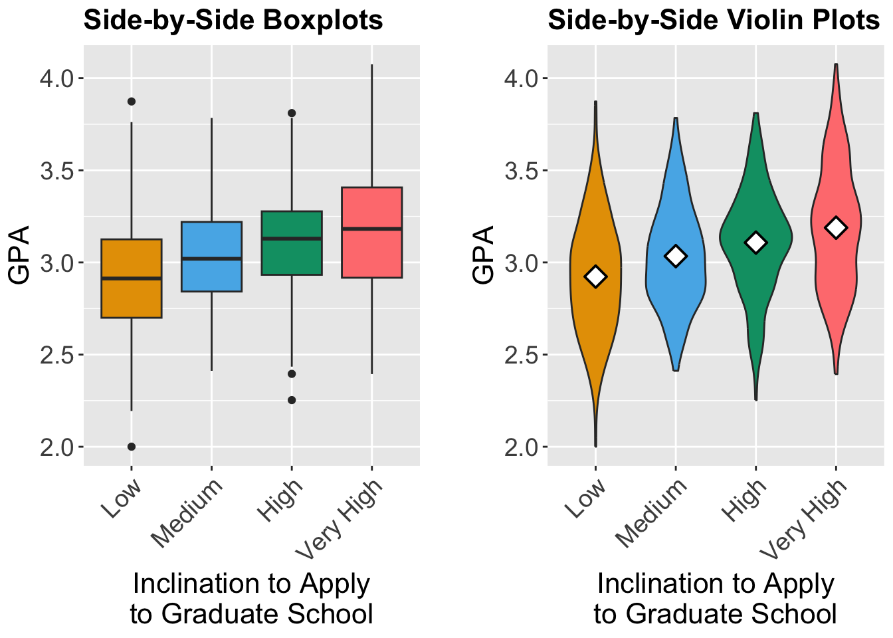
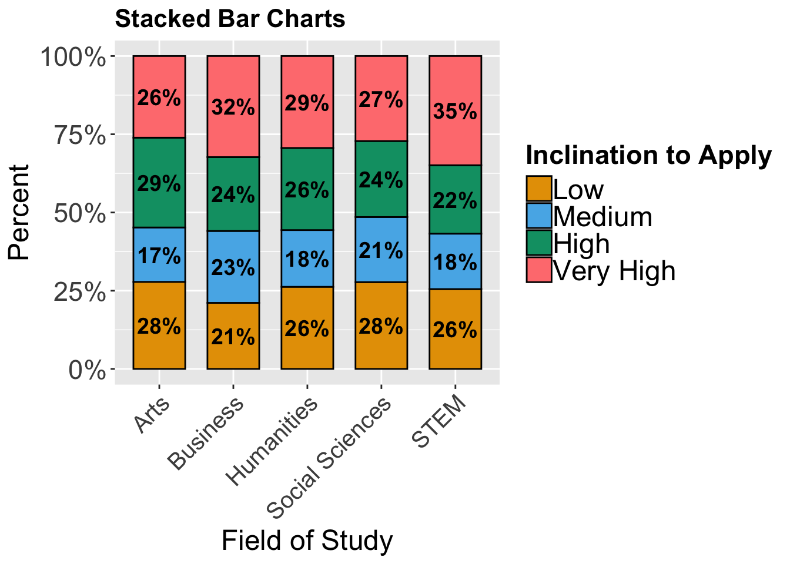
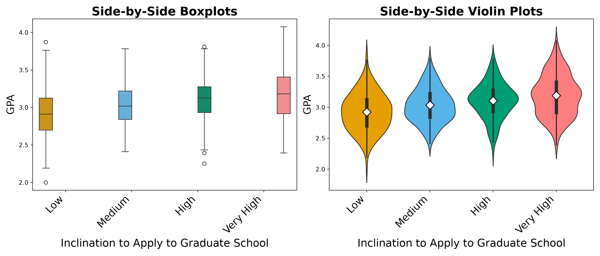
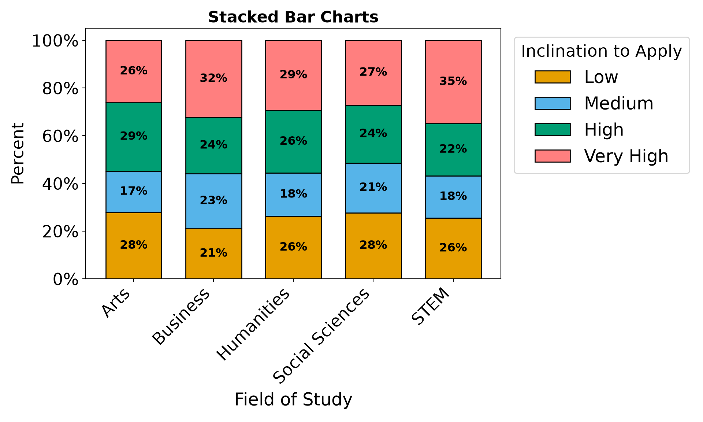
Box and violin plots, along with stacked bar charts, show descriptively how academic performance and field of study relate to a student’s likelihood of applying to graduate school.
- Students with
Very Highinclination to apply tend to have the highest GPAs on average, with a median GPA visibly higher than those in theLoworMediumcategories. - The mean GPA, represented by the white diamonds in the violin plots, shows a consistent upward trend as the level of intent increases, suggesting a positive association between academic performance and Inclination to apply to graduate school.
- While there is considerable overlap in the GPA distributions of the
LowandMediumgroups, theVery Highgroup shows a distinct shift toward the higher end of the GPA scale. - Differences in the distribution of
inclination_to_applyacross fields of study suggest that a student’s field of study may influence their propensity to pursue graduate education.
Next, we examine how GRE_score relates to inclination_to_apply using the same side-by-side boxplot and violin plot approach.
train_df_gre_boxplots <- train_df |>
ggplot(aes(inclination_to_apply, GRE_score)) +
geom_boxplot(aes(fill = inclination_to_apply)) +
labs(y = "GRE Score", x = "Inclination to Apply\nto Graduate School") +
ggtitle("Side-by-Side Boxplots") +
theme(
plot.title = element_text(size = 16, face = "bold"),
axis.text = element_text(size = 17),
axis.text.x = element_text(angle = 45, hjust = 1),
axis.title = element_text(size = 18),
legend.position = "none"
) +
scale_fill_manual(values = c("#E69F00", "#56B4E9", "#009E73", "#FF7F7F"))
train_df_gre_violin <- train_df |>
ggplot(aes(inclination_to_apply, GRE_score)) +
geom_violin(aes(fill = inclination_to_apply)) +
labs(y = "GRE Score", x = "Inclination to Apply\nto Graduate School") +
ggtitle("Side-by-Side Violin Plots") +
stat_summary(
fun = mean, geom = "point",
shape = 23, fill = "white", colour = "black", size = 4, stroke = 1
) +
theme(
plot.title = element_text(size = 16, face = "bold"),
axis.text = element_text(size = 17),
axis.text.x = element_text(angle = 45, hjust = 1),
axis.title = element_text(size = 18),
legend.position = "none"
) +
scale_fill_manual(values = c("#E69F00", "#56B4E9", "#009E73", "#FF7F7F"))
plot_grid(train_df_gre_boxplots, train_df_gre_violin, nrow = 1)fig, axes = plt.subplots(1, 2, figsize=(14, 6))
# --- Boxplot ---
sns.boxplot(data=train_df, x='inclination_to_apply', y='GRE_score', hue='inclination_to_apply',
palette={'Low': '#E69F00', 'Medium': '#56B4E9', 'High': '#009E73', 'Very High': '#FF7F7F'}, ax=axes[0], legend=False)
axes[0].set_title('Side-by-Side Boxplots', fontsize=20, fontweight='bold')
axes[0].set_xlabel('Inclination to Apply to Graduate School', fontsize=18)
axes[0].set_ylabel('GRE Score', fontsize=17)
axes[0].tick_params(axis='x', labelrotation=45, labelsize=17)
axes[0].tick_params(axis='y', labelsize=14)
for lbl in axes[0].get_xticklabels():
lbl.set_ha('right')
# --- Violin Plot with mean point ---
sns.violinplot(data=train_df, x='inclination_to_apply', y='GRE_score', hue='inclination_to_apply',
palette={'Low': '#E69F00', 'Medium': '#56B4E9', 'High': '#009E73', 'Very High': '#FF7F7F'}, ax=axes[1], legend=False, dodge=False)
ordered_cats = list(train_df['inclination_to_apply'].cat.categories) \
if hasattr(train_df['inclination_to_apply'], 'cat') \
else sorted(train_df['inclination_to_apply'].unique())
# Recolour each violin body by its x-position (Low, Medium, High, Very High
# from left to right) so the fill is correct regardless of how the installed
# seaborn version maps a dict palette onto the hue categories.
from matplotlib.collections import PolyCollection
violin_colors = ['#E69F00', '#56B4E9', '#009E73', '#FF7F7F']
for body in axes[1].collections:
if isinstance(body, PolyCollection) and len(body.get_paths()):
pos = int(round(body.get_paths()[0].vertices[:, 0].mean()))
if 0 <= pos < len(violin_colors):
body.set_facecolor(violin_colors[pos])
means = train_df.groupby('inclination_to_apply', observed=True)['GRE_score'].mean()
xticks = axes[1].get_xticks()
for i, cat in enumerate(ordered_cats):
axes[1].plot(xticks[i], means[cat], marker='D', markerfacecolor='white', markeredgecolor='black', markeredgewidth=1.2,
markersize=10, zorder=5, linestyle='None')
axes[1].set_title('Side-by-Side Violin Plots', fontsize=20, fontweight='bold')
axes[1].set_xlabel('Inclination to Apply to Graduate School', fontsize=18)
axes[1].set_ylabel('GRE Score', fontsize=17)
axes[1].tick_params(axis='x', labelrotation=45, labelsize=17)
axes[1].tick_params(axis='y', labelsize=14)
for lbl in axes[1].get_xticklabels():
lbl.set_ha('right')
plt.tight_layout()
plt.show()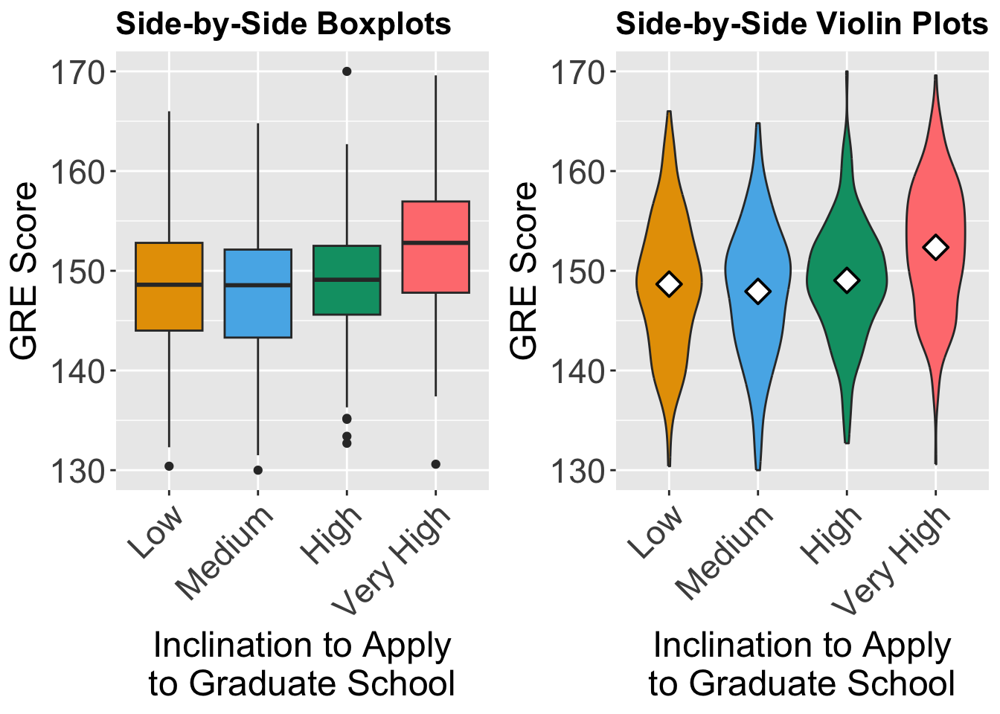
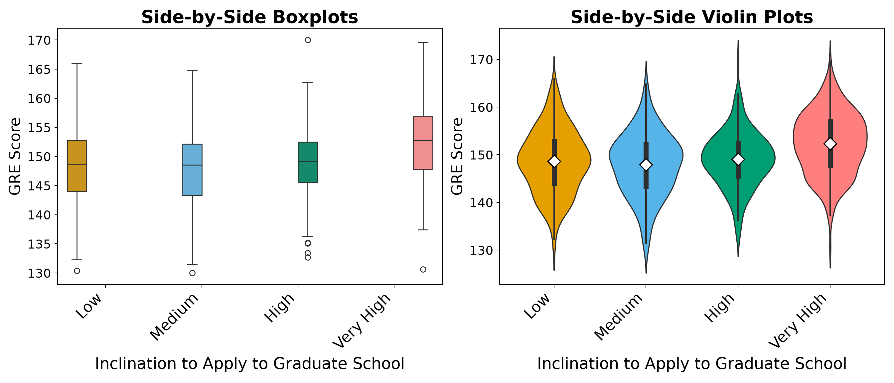
The GRE score plots mirror the structure of the GPA plots, allowing us to assess whether GRE performance follows a similar pattern across likelihood-to-apply categories.
- The
Very Highgroup stands clearly apart from the other three, with a mean GRE score of approximately \(152.4\), roughly 3 to 4 points higher than theLow(\(148.7\)),Medium(\(147.9\)), andHigh(\(149.0\)) groups. This separation is visible in both the boxplot and the violin plot. - Unlike GPA, GRE score does not increase monotonically across the ordered categories. The
Mediumgroup has the lowest mean GRE score of all four groups, and theLow,Medium, andHighgroups show substantially overlapping distributions. This suggests that GRE score may primarily distinguish students in theVery Highcategory rather than tracking the full ordinal gradient. - The
Lowgroup exhibits the widest spread in GRE scores (standard deviation ≈ \(6.7\)), while theHighgroup is the most tightly clustered (standard deviation ≈ \(5.9\)), indicating greater homogeneity in standardized test performance among students who are likely (but not extremely likely) to apply.
15.5 Data Modelling
We have been discussing the advantages of using an alternative model instead of multinomial regression in the presence of an ordinal response variable. In this section, we go over the details of data modelling for an ordinal response variable with a set of discrete or continuous regressors using an ordinal logistic regression model. This type of modelling is the most frequent and popular model for ordinal responses.
To present the details of the modelling framework, we begin with the concept of cumulative logits. We have already encountered the logit function in the context of binary logistic regression (see ?sec-binary-logistic). Recall that in logistic regression, the logit function is applied to the odds of an event. Specifically, if
\[ p_i = P(Y_i = 1 |x_{i,1}, x_{i,2}, ..., x_{i,k}) \]
then the odds of the event \(Y=1\) given the regressors is:
\[ \frac{P(Y_i = 1 \mid x_{i,1}, ..., x_{i,k})}{P(Y_i = 0 \mid x_{i,1}, ..., x_{i,k})} = \frac{p_i}{1-p_i} \]
and the logit is defined as the logarithm of these odds, i.e. \(\log\left(\frac{p_i}{1-p_i}\right)\). In logistic regression modelling, we assume that this log-odds is a linear function of the regressors:
\[ \log\left(\frac{p_i}{1-p_i}\right) = \beta_0 + \beta_1 x_{i,1} + \beta_2x_{i,2} + \ldots + \beta_k x_{i,k} \tag{15.1}\]
This idea and formulation is the basis for extending the logistic regression framework for an outcome with two categories to ordinal outcomes with more than two ordered categories. In the ordinal case, instead of modelling the log-odds of a single binary event, we model the cumulative logits, which compare the probability of being at or below a given category to the probability of being above that category.
Notation: To avoid lengthy formulas, we introduce compact notation that will be used consistently throughout this chapter. In expressions such as \(P(Y_i = 1 \mid x_{i,1}, ..., x_{i,k})\), the conditioning is on all regressors. Instead of repeatedly writing all regressors, we define:
\[ \mathbf{x}_i = (x_{i,1},...,x_{i,k}), \]
where \(\mathbf{x}_i\) is a vector of size \(k\) that bundles all \(k\) regressors into a single object, so we can refer to them all at once instead of listing each one, and write
\[ P(Y_i = 1 \mid \mathbf{x}_i). \]
This notation simplifies expressions and improves readability. Now let’s imagine that your ordered response variable has \(J\) different categories, such that \(J \ge 3\). We begin with the category ordering by formally defining the logits of cumulative probabilities as follows. Let
\[ P(Y_i \leq j \mid \mathbf{x}_i) = p_{i,1} + p_{i,2} + \ldots + p_{i,j} \quad \quad j = 1, 2, \ldots, J-1 \]
be the cumulative probability.
For example, let’s consider \(J = 3\) ordered categories, such that \(j\) runs over values of \(j=1\) and \(j=2\); therefore, there are two cumulative probabilities to consider:
\[ \begin{aligned} P(Y_i \leq 1 \mid \mathbf{x}_i) &= p_{i,1}, \\ P(Y_i \leq 2 \mid \mathbf{x}_i) &= p_{i,1} + p_{i,2}. \end{aligned} \]
Each one accumulates the category probabilities from the lowest category up to category \(j\). We stop at \(j = 2\) because the final cumulative probability is always \(P(Y_i \leq 3 \mid \mathbf{x}_i) = p_{i,1} + p_{i,2} + p_{i,3} = 1\), which carries no information and is therefore not modelled. The same idea applies for an arbitrary number of categories \(J\): we form \(J - 1\) running totals of the form \(P(Y_i \leq j \mid \mathbf{x}_i) = p_{i,1} + \ldots + p_{i,j}\) for \(j = 1, 2, \ldots, J - 1\), with each adding one more category probability than the previous.
The logits of cumulative probabilities are defined as:
\[ \begin{aligned} &\text{logit}(P(Y_i \leq j \mid \mathbf{x}_i)) = \log\left( \frac{P(Y_i \leq j \mid \mathbf{x}_i)}{ 1 - P(Y_i \leq j \mid \mathbf{x}_i)} \right) \\ &= \log\left( \frac{P(Y_i = 1 \mid \mathbf{x}_i) + P(Y_i = 2 \mid \mathbf{x}_i) + \ldots + P(Y_i = j \mid \mathbf{x}_i)}{ P(Y_i = j+1 \mid \mathbf{x}_i) + P(Y_i = j+2 \mid \mathbf{x}_i) + \ldots + P(Y_i = J \mid \mathbf{x}_i) } \right) \end{aligned} \tag{15.2}\]
The logit transformation defined above is the model’s link function. A link function maps a probability - here the cumulative probability \(P(Y_i \leq j \mid \mathbf{x}_i)\), which is confined to the interval \([0, 1]\), onto the entire set of real numbers, so that it can be expressed as a linear function of the regressors. As it is applied to cumulative probabilities, it is known as the cumulative logit link, which is the ordinal counterpart of the ordinary logit link used in binary logistic regression. Other links are possible, such as the probit or complementary log–log links, but the cumulative logit is the most widely used, and it is the one we will use in this chapter.
With the cumulative logits now defined, we reach an important modelling decision. In ordinal logistic regression, cumulative logits can be approached in two main ways, distinguished by the assumptions each makes about how the regressors relate to the response categories. These two primary modelling approaches are the proportional odds assumption and the non-proportional odds assumption.
The proportional odds model assumes that each regressor has the same effect across all cumulative logits. In other words, the regression coefficient for a given regressor is shared across the cumulative comparisons and does not depend on the response category cutoff (i.e. the value of j). This assumption leads to a model with a simpler interpretation: each coefficient describes how the regressor shifts the odds of being in a higher response category, regardless of where the ordinal response is split. In contrast, the non-proportional odds model relaxes this assumption by allowing regression coefficients to vary across cumulative splits of the response. In the following sections, we introduce these two approaches in detail and discuss their interpretation and practical implications. Later in the chapter, we also show how to formally assess the proportional odds assumption using the Brant–Wald test.
15.5.1 The Proportional Odds modelling
For an ordinal response variable with \(J\) ordered categories, we defined the cumulative logits as
\[ \text{logit}(P(Y_i \le j \mid \mathbf{x}_i)) = \text{log}\left(\frac{ P(Y_i \le j \mid \mathbf{x}_i) }{ P(Y_i \ge j+1 \mid \mathbf{x}_i) }\right) \tag{15.3}\]
for all values of \(j = 1, 2, \ldots, J-1\). This means that for an outcome with \(J\) categories, we have \(J-1\) cumulative logits. A natural question now arises: how should these cumulative logits depend on the regressors? The proportional odds model assumes that each cumulative logit is a linear function of the regressors, with the important restriction that the regression coefficients are the same across all cumulative logits. The model is written as:
\[ \text{logit}( P(Y_i \le j \mid \mathbf{x}_i) ) = \alpha_j + \beta_1 x_{i,1} + \beta_2 x_{i,2} + ... + \beta_k x_{i,k} \tag{15.4}\]
for all values of \(j\in\{1, 2, \ldots, J-1\}\). In this formula,
- \(\alpha_j\) is a category-specific intercept and depends on the category \(j\),
- \(\beta_1, ..., \beta_k\) are regression coefficients that do not depend on \(j\).
The essential assumption is that the effect of each explanatory variable on the log-odds is constant across all cumulative splits of the response variable. The slope parameters remain the same for comparing each of the following pairs of probabilities.
\(P(Y_i \le 1 \mid \mathbf{x}_i)\) versus \(P(Y_i > 1 \mid \mathbf{x}_i)\)
-
\(P(Y_i \le 2 \mid \mathbf{x}_i)\) versus \(P(Y_i > 2 \mid \mathbf{x}_i)\)
\(\vdots\)
\(P(Y_i \le J-1 \mid \mathbf{x}_i)\) versus \(P(Y_i > J-1 \mid \mathbf{x}_i)\)
This property of regression coefficients across cumulative logits is known as the proportional odds assumption.
15.5.2 The Non-proportional Odds modelling
While the proportional odds model assumes that the effect of each regressor is the same across all cumulative logits, this assumption may not always hold in practice. If the effect of one or more regressors varies across the cumulative splits of the ordinal response, then we use a non-proportional odds model.
Formally speaking, the non-proportional odds model allows the regression coefficients to depend on the cumulative category \(j\), as shown below:
\[ \text{logit}( P(Y_i \le j \mid \mathbf{x}_i) ) = \alpha_j + \beta_{1,j} x_{i,1} + \beta_{2,j} x_{i,2} + \ldots + \beta_{k,j} x_{i,k} \tag{15.5}\]
In this model:
- \(\alpha_j\) is the category-specific intercept (the same as before),
- \(\beta_{1,j}, \beta_{2,j}, \ldots , \beta_{k,j}\) are category-specific regression coefficients, meaning that the effect of each regressor can differ across cumulative logits.
At the first glance, this seems to be a great flexibility for modelling but it comes at a cost: the number of parameters increases with the number of cumulative splits, making the model more complex and potentially harder to interpret. However, it provides a more accurate representation when the proportional odds assumption is not valid. We will discuss how to assess these assumptions later in this chapter.
To help us understand the differences in assumption visually, we have the following plot. The figure below visualizes four cumulative probabilities \(P(Y <= 1 \mid x)\), \(P(Y <= 2 \mid x)\), \(P(Y <= 3 \mid x)\), and \(P(Y <= 4 \mid x)\) on the y-axis plotted as a logistic curve against a single regressor \(x\). Notice that all curves have the same slope but different intercepts. This parallel structure shows the proportional odds assumption: the effect of \(x\) on the log-odds scale (which is the coefficient of \(x\)) is the same across all cumulative logits. In other words, increasing \(x\) shifts each cumulative logit by the same amount regardless of which categorical group \(j\) we consider. Note that the intercepts in this model are \(\alpha_1 = 4\), \(\alpha_2 = 5.5\), \(\alpha_3 = 6.3\), and \(\alpha_4 = 10\). The coefficient which measures the effect of \(x\) on log-odds is \(\beta=12\) and it is the same for all cumulative probabilities. Thus, the visual parallelism in this plot provides an intuitive way to understand what proportional odds means geometrically.
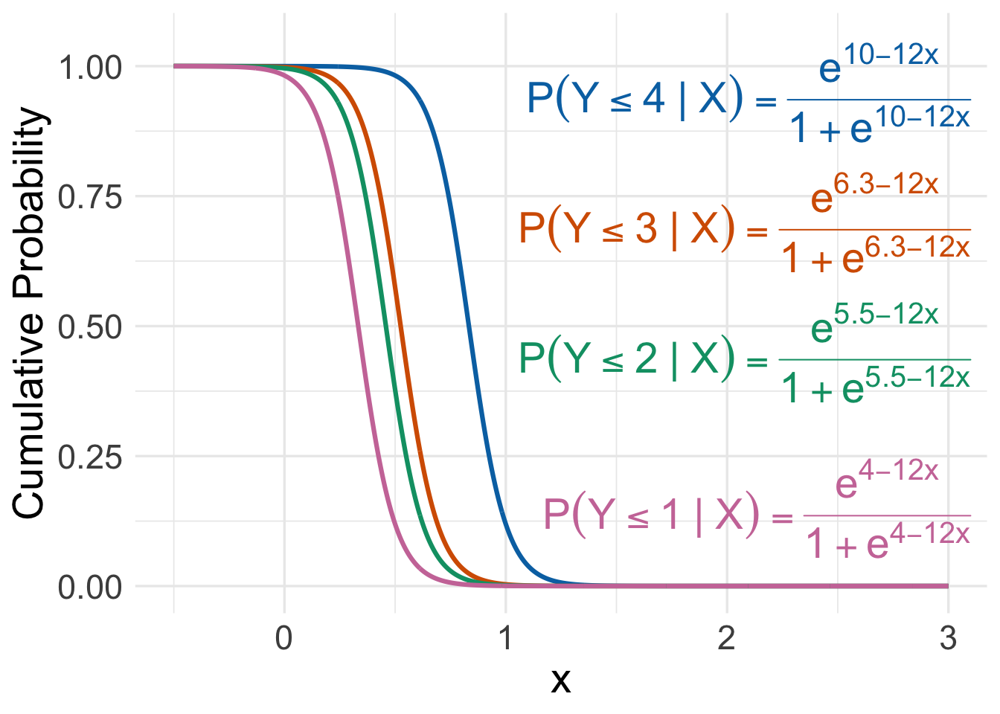
If the proportional odds assumption were violated, these curves would no longer be parallel on the logit scale; instead, their slopes would differ, indicating that the effect of \(x\) changes depending on which cumulative split of the ordinal outcome is being modelled. The following figure is an example of proportional odds assumption being violated:
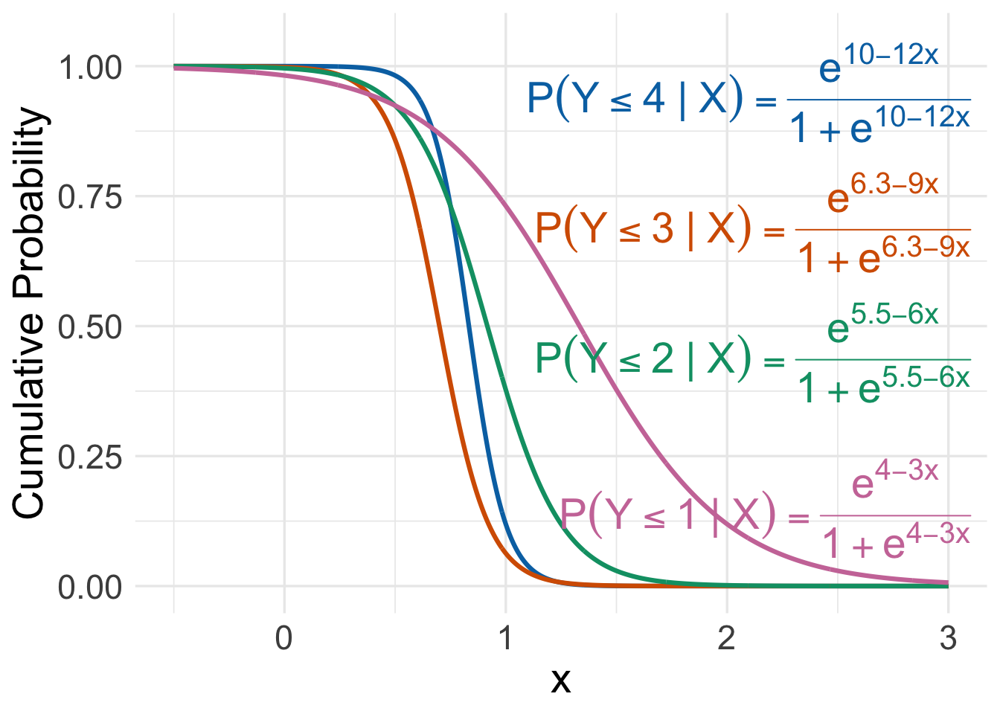
15.5.3 The Log-Likelihood Function
The ordinal logistic regression model describes the cumulative probabilities \(P(Y_i \le j \mid \mathbf{x}_i)\), that is, the chance of falling in category \(j\) or any lower category. To estimate the model, however, we need the category-specific probability \(p_{i,j} = P(Y_i = j \mid \mathbf{x}_i)\), the chance of landing in exactly one category. We recover it by a simple differencing step: the probability of being in category \(j\) alone is the probability of being at or below \(j\), minus the probability of being at or below the category just beneath it,
\[ p_{i,j} = P(Y_i = j \mid \mathbf{x}_i) = P(Y_i \le j \mid \mathbf{x}_i) - P(Y_i \le j-1 \mid \mathbf{x}_i), \qquad j = 1, \ldots, J. \]
The two endpoints are fixed by convention: nothing can fall below the first category, so \(P(Y_i \le 0 \mid \mathbf{x}_i) = 0\), and everything falls at or below the last, so \(P(Y_i \le J \mid \mathbf{x}_i) = 1\).
To write this in terms of the model parameters, we return to the proportional odds model itself. Recall that the model specifies each cumulative probability through its logit,
\[ \text{logit}\bigl(P(Y_i \le j \mid \mathbf{x}_i)\bigr) = \log\left( \frac{P(Y_i \le j \mid \mathbf{x}_i)}{1 - P(Y_i \le j \mid \mathbf{x}_i)} \right) = \alpha_j - (\beta_1 x_{i,1} + \beta_2 x_{i,2} + \ldots + \beta_k x_{i,k}). \]
The right-hand side is a linear function of the regressors. We call it the systematic component and write it compactly using the vector notation \(\boldsymbol{\beta}^\top \mathbf{x}_i = \beta_1 x_{i,1} + \beta_2 x_{i,2} + \ldots + \beta_k x_{i,k}\):
\[ \eta_{i,j} = \alpha_j - \boldsymbol{\beta}^\top \mathbf{x}_i . \]
Therefore the model states that \(\text{logit}(P(Y_i \le j \mid \mathbf{x}_i)) = \eta_{i,j}\). To obtain the cumulative probabilities, we undo the logit by solving this equation for \(P(Y_i \le j \mid \mathbf{x}_i)\). Writing \(P = P(Y_i \le j \mid \mathbf{x}_i)\) for brevity, we start from \(\log\!\bigl(\tfrac{P}{1 - P}\bigr) = \eta_{i,j}\), exponentiate both sides, and rearrange the equation:
\[ \frac{P}{1 - P} = e^{\eta_{i,j}} \;\;\Longrightarrow\;\; P = e^{\eta_{i,j}}\,(1 - P) \;\;\Longrightarrow\;\; P\bigl(1 + e^{\eta_{i,j}}\bigr) = e^{\eta_{i,j}} \;\;\Longrightarrow\;\; P = \frac{e^{\eta_{i,j}}}{1 + e^{\eta_{i,j}}}. \]
The final expression is the logistic cumulative function \(F\) evaluated at the systematic component:
\[ F(\eta) = \frac{e^{\eta}}{1 + e^{\eta}}, \qquad \text{so that} \qquad P(Y_i \le j \mid \mathbf{x}_i) = F(\eta_{i,j}) = \frac{e^{\alpha_j - \boldsymbol{\beta}^\top \mathbf{x}_i}}{1 + e^{\alpha_j - \boldsymbol{\beta}^\top \mathbf{x}_i}} . \]
Substituting into the differencing formula gives the category probability in closed form,
\[ p_{i,j} = F(\eta_{i,j}) - F(\eta_{i,j-1}) = \frac{e^{\alpha_j - \boldsymbol{\beta}^\top \mathbf{x}_i}}{1 + e^{\alpha_j - \boldsymbol{\beta}^\top \mathbf{x}_i}} - \frac{e^{\alpha_{j-1} - \boldsymbol{\beta}^\top \mathbf{x}_i}}{1 + e^{\alpha_{j-1} - \boldsymbol{\beta}^\top \mathbf{x}_i}}. \]
Each \(p_{i,j}\) is guaranteed to be a non-negative probability. As the thresholds are strictly increasing, such that \(\alpha_{j-1} < \alpha_j\), the cumulative function \(F\) is also increasing, so \(F(\eta_{i,j}) \ge F(\eta_{i,j-1})\) and therefore \(p_{i,j}\geq0\).
To estimate the model, we need a way to measure how well a given set of parameters explains the observed data. The likelihood function does exactly this: it expresses the probability of the data we actually observed as a function of the unknown parameters, and estimation amounts to finding the parameter values that make this probability as large as possible.
We first encode each individual’s observed response category using indicator variables. Let \(y_{i,j} = 1\) if the \(i\)-th individual belongs to category \(j\), and let \(y_{i,j} = 0\) otherwise. Since each individual belongs to exactly one of the \(J\) possible categories, the vector \(\mathbf{y}=(y_{i,1}, y_{i,2}, \ldots, y_{i,J})\) contains exactly one entry equal to \(1\), with all remaining entries equal to \(0\). This representation is often called a one-hot encoding of the response category. The likelihood function for the ordinal logistic regression model is the following:
\[ \mathcal{L}(\boldsymbol{\alpha}, \boldsymbol{\beta};\mathbf{y}) = \prod_{i=1}^n \prod_{j=1}^J p_{i,j}^{y_{i,j}}, \tag{15.6}\]
where \(n\) is the number of individuals in the sample, \(J\) is the number of ordered categories, and \(p_{i,j} = P(Y_i = j \mid \mathbf{x}_i)\) is the model-implied probability that individual \(i\) (with regressor values \(\mathbf{x}_i\)) falls in category \(j\), as derived earlier by differencing the cumulative probabilities. The two unknown parameter sets being estimated are collected in \(\boldsymbol{\alpha} = (\alpha_1, \alpha_2, \ldots, \alpha_{J-1})^\top\), the vector of thresholds (the category-specific intercepts), and \(\boldsymbol{\beta} = (\beta_1, \beta_2, \ldots, \beta_k)^\top\), the vector of \(k\) shared slopes that apply across all cumulative splits.
The two products have intuitive roles. The inner product over \(j\) runs across the \(J\) categories for a single individual: because of the indicator \(y_{i,j}\) in the exponent, every term equals \(0\) except the one matching the individual’s true category, so the inner product collapses to just \(p_{i,j}\) for that observed category. The outer product over \(i\) then multiplies these per-individual probabilities together across all \(n\) people, which is valid because the observations are assumed independent. Overall, this is a multinomial likelihood evaluated at the ordinal-model category probabilities, rather than at freely estimated per-category probabilities.
Taking the logarithm turns the products into sums, which is far easier to differentiate and optimize, and yields the log-likelihood function:
\[ \ell(\boldsymbol{\alpha}, \boldsymbol{\beta};\mathbf{y}) = \sum_{i=1}^n \sum_{j=1}^J y_{i,j} \log p_{i,j}. \tag{15.7}\]
Maximizing \(\ell\) gives the estimates \(\hat{\boldsymbol{\alpha}}\) and \(\hat{\boldsymbol{\beta}}\), the parameter values under which the observed data are most probable. Unlike ordinary least squares, however, there is no closed-form algebraic expression for the values of \(\hat{\boldsymbol{\alpha}}\) and \(\hat{\boldsymbol{\beta}}\) that maximize \(\ell\): the category probabilities \(p_{i,j}\) enter the log-likelihood non-linearly through the logistic function, so setting the derivatives to zero does not yield equations we can solve directly. Instead, we rely on iterative numerical optimization, which starts from an initial guess and refines the estimates step by step until the log-likelihood can no longer be improved. The standard choice here is the Newton–Raphson method, which we describe as additional detail in the tip box below. A closely related variant — the one most statistical software uses to fit these models — replaces the observed Hessian with its expected value (the Fisher information), giving the Fisher scoring algorithm, which is equivalent to iteratively reweighted least squares (IRLS) (McCullagh 1980; Nelder and Wedderburn 1972).
Tip on the Newton–Raphson Method
The parameters we ultimately estimate are the thresholds \(\boldsymbol{\alpha} = (\alpha_1, \ldots, \alpha_{J-1})^\top\) and the shared slopes \(\boldsymbol{\beta} = (\beta_1, \ldots, \beta_k)^\top\). Since the log-likelihood has no closed-form maximizer, the Newton–Raphson procedure estimates \(\boldsymbol{\alpha}\) and \(\boldsymbol{\beta}\) jointly by iterating with the score function and Hessian matrix of the log-likelihood (Agresti 2010).
Score function: The partial derivative of the log-likelihood with respect to each threshold \(\alpha_j\) is:
\[ \frac{\partial \ell}{\partial \alpha_j} = \sum_{i=1}^n \left[ \frac{y_{i,j}}{p_{i,j}} - \frac{y_{i,j+1}}{p_{i,j+1}} \right] f(\alpha_j - \boldsymbol{\beta}^\top \mathbf{x}_i), \]
where \(f(\cdot) = F(\cdot)(1 - F(\cdot))\) is the logistic density. The partial derivative with respect to each shared slope \(\beta_k\) is:
\[ \frac{\partial \ell}{\partial \beta_k} = -\sum_{i=1}^n x_{i,k} \sum_{j=1}^{J} y_{i,j} \left[ \frac{f(\alpha_j - \boldsymbol{\beta}^\top \mathbf{x}_i)}{p_{i,j}} - \frac{f(\alpha_{j-1} - \boldsymbol{\beta}^\top \mathbf{x}_i)}{p_{i,j}} \right]. \]
The key difference from the multinomial case is that the slopes \(\beta_k\) appear in all \(J-1\) cumulative logits simultaneously, so their score components aggregate information across every cumulative split.
Hessian matrix: The Hessian \(H(\boldsymbol{\alpha}, \boldsymbol{\beta})\) consists of second-order partial derivatives of \(\ell\) with respect to the thresholds and slopes. Because the shared slopes couple all cumulative logits together, the Hessian is a dense \((J-1+k) \times (J-1+k)\) matrix, unlike the block-diagonal structure seen in multinomial logistic regression. In software this is handled automatically. For a thorough treatment of the Hessian in the context of maximum likelihood estimation for ordinal models, refer to Chapter 3 of Agresti (2010).
Iteration: Collecting the thresholds and slopes into the stacked parameter pair \((\boldsymbol{\alpha}, \boldsymbol{\beta})\), the Newton–Raphson update at step \(t\) is:
\[ \begin{pmatrix} \boldsymbol{\alpha}^{(t+1)} \\ \boldsymbol{\beta}^{(t+1)} \end{pmatrix} \leftarrow \begin{pmatrix} \boldsymbol{\alpha}^{(t)} \\ \boldsymbol{\beta}^{(t)} \end{pmatrix} - \left[ H\!\left(\boldsymbol{\alpha}^{(t)}, \boldsymbol{\beta}^{(t)}\right) \right]^{-1} S\!\left(\boldsymbol{\alpha}^{(t)}, \boldsymbol{\beta}^{(t)}\right), \]
where \(S(\boldsymbol{\alpha}, \boldsymbol{\beta})\) is the stacked score vector holding the threshold derivatives followed by the slope derivatives. The algorithm is initialized at \(\boldsymbol{\alpha}^{(0)} = \mathbf{0}\) and \(\boldsymbol{\beta}^{(0)} = \mathbf{0}\) (or a data-driven starting point) and repeats until changes in \(\ell\), \(\boldsymbol{\alpha}\), and \(\boldsymbol{\beta}\) fall below a convergence tolerance.
The full Newton–Raphson/IRLS procedure is:
- Initialize \(\boldsymbol{\alpha}^{(0)} = \mathbf{0}\) and \(\boldsymbol{\beta}^{(0)} = \mathbf{0}\) (the thresholds and slopes).
- Repeat until convergence:
- Compute the systematic components \(\alpha_j - \boldsymbol{\beta}^\top \mathbf{x}_i\) for all \(i\) and \(j\).
- Compute cumulative probabilities \(P(Y_i \le j \mid \mathbf{x}_i)\) and category probabilities \(p_{i,j}\).
- Compute the log-likelihood \(\ell(\boldsymbol{\alpha}^{(t)}, \boldsymbol{\beta}^{(t)})\), score \(S(\boldsymbol{\alpha}^{(t)}, \boldsymbol{\beta}^{(t)})\), and Hessian \(H(\boldsymbol{\alpha}^{(t)}, \boldsymbol{\beta}^{(t)})\).
- Update \((\boldsymbol{\alpha}^{(t+1)}, \boldsymbol{\beta}^{(t+1)})\) using the Newton–Raphson step above.
- Check convergence.
15.6 Estimation
15.6.1 Fitting the Proportional Odds Model
We now turn to the question of how the parameters of the ordinal logistic regression model are estimated from data. We summarize the key estimation steps in mathematical terms below, working with one observation at a time before generalizing to the full sample.
Recall that the proportional odds model for an ordinal response \(Y\) with \(J\) ordered categories and \(k\) regressors is
\[ \text{logit}(P(Y_i \le j \mid \mathbf{x}_i)) = \alpha_j - (\beta_1 x_{i,1} + \beta_2 x_{i,2} + \ldots + \beta_k x_{i,k}), \quad j = 1, \ldots, J-1, \tag{15.8}\]
where \(\alpha_1 < \alpha_2 < \cdots < \alpha_{J-1}\) are the category-specific intercepts, which are also known as thresholds or cutpoints, and \(\beta_1,\beta_2, \ldots, \beta_k\) are the shared slope coefficients. Note the sign convention - the regressor terms are subtracted from the intercept, such that that a positive \(\beta_k\) corresponds to higher values of \(x_{i,k}\) shifting probability mass toward higher categories. This sign convention is standard in R’s MASS::polr and in most textbooks.
The model therefore comprises \((J - 1) + k\) parameters: \(J - 1\) threshold parameters \((\alpha_1, \alpha_2, \ldots, \alpha_{J-1})\) and \(k\) regression coefficients \((\beta_1, \beta_2, \ldots, \beta_k)\) shared across all cumulative splits.
We now fit the proportional odds model to the college dataset using inclination_to_apply as the ordinal response with four levels (Low < Medium < High < Very High) and GPA, GRE_score, and field_of_study as regressors. In R, we use polr() from the MASS package; in Python, we use OrderedModel from statsmodels.
library(MASS)
library(broom)
# Ensure inclination_to_apply is an ordered factor with correct level order
train_df$inclination_to_apply <- factor(
train_df$inclination_to_apply,
levels = c("Low", "Medium", "High", "Very High"),
ordered = TRUE
)
# Ensure field_of_study is a factor with a fixed reference level (Arts)
train_df$field_of_study <- factor(
train_df$field_of_study,
levels = c("Arts", "Business", "Social Sciences", "STEM", "Humanities")
)
# Fit the proportional odds model
ordinal_fit <- polr(
inclination_to_apply ~ GPA + GRE_score + field_of_study,
data = train_df,
Hess = TRUE # return the Hessian for inference
)
tidy(ordinal_fit)from statsmodels.miscmodels.ordinal_model import OrderedModel
# Ensure inclination_to_apply is an ordered categorical
ordered_categories = ["Low", "Medium", "High", "Very High"]
train_df["inclination_to_apply"] = pd.Categorical(
train_df["inclination_to_apply"],
categories=ordered_categories,
ordered=True
)
# Ensure field_of_study is a categorical with a fixed reference level (Arts)
field_categories = ["Arts", "Business", "Social Sciences", "STEM", "Humanities"]
train_df["field_of_study"] = pd.Categorical(
train_df["field_of_study"],
categories=field_categories
)
# Fit the proportional odds model (logit link)
X = pd.get_dummies(train_df[["GPA", "GRE_score", "field_of_study"]], columns=["field_of_study"], drop_first=True, dtype=float)
ordinal_fit = OrderedModel(
train_df["inclination_to_apply"],
X,
distr="logit"
)
ordinal_result = ordinal_fit.fit(method="bfgs", disp=False)
n_thr = ordinal_result.model.k_levels - 1 # number of cutpoints (J - 1)
n_slope = len(ordinal_result.params) - n_thr # number of slope coefficients
params = ordinal_result.params.values
cov = ordinal_result.cov_params().values
# Slope coefficients: identical to R, reported as-is.
slope_tbl = pd.DataFrame({
"term": ordinal_result.params.index[:n_slope],
"estimate": params[:n_slope],
"std.error": ordinal_result.bse.values[:n_slope],
"statistic": ordinal_result.tvalues.values[:n_slope],
"coef.type": "coefficient",
})
# Thresholds: back-transform log-increments to cutpoints.
thr_raw = params[n_slope:]
thr_cov = cov[n_slope:, n_slope:]
cutpoints = np.concatenate(([thr_raw[0]], np.exp(thr_raw[1:]))).cumsum()
# Delta-method Jacobian d(cutpoint) / d(raw threshold parameter).
jac = np.zeros((n_thr, n_thr))
for m in range(n_thr):
jac[m, 0] = 1.0
jac[m, 1:m + 1] = np.exp(thr_raw[1:m + 1])
cut_se = np.sqrt(np.diag(jac @ thr_cov @ jac.T))
thr_tbl = pd.DataFrame({
"term": [f"{ordered_categories[i]}|{ordered_categories[i + 1]}" for i in range(n_thr)],
"estimate": cutpoints,
"std.error": cut_se,
"statistic": cutpoints / cut_se,
"coef.type": "scale",
})
tidy_ordinal = pd.concat([slope_tbl, thr_tbl], ignore_index=True)
print(
"Note: statsmodels reports thresholds beyond the first as log-increments\n"
"between consecutive cutpoints. The thresholds below have been transformed\n"
"to the cutpoint scale (with delta-method standard errors), so that\n"
"they match the cutpoints reported by polr() in R.\n"
)
precision = {
"estimate": {"coefficient": 4, "scale": 1},
"std.error": {"coefficient": 4, "scale": 2},
"statistic": {"coefficient": 2, "scale": 1},
}
display_tbl = tidy_ordinal.copy()
for col, dp in precision.items():
display_tbl[col] = [
f"{val:.{dp[kind]}f}"
for val, kind in zip(tidy_ordinal[col], tidy_ordinal["coef.type"])
]
print(display_tbl.to_string(index=False))# A tibble: 9 × 5
term estimate std.error statistic coef.type
<chr> <dbl> <dbl> <dbl> <chr>
1 GPA 2.20 0.223 9.89 coefficient
2 GRE_score 0.0780 0.0104 7.49 coefficient
3 field_of_studyBusiness 0.461 0.226 2.04 coefficient
4 field_of_studySocial Sciences 0.0314 0.220 0.142 coefficient
5 field_of_studySTEM 0.408 0.220 1.86 coefficient
6 field_of_studyHumanities 0.209 0.225 0.928 coefficient
7 Low|Medium 17.5 1.80 9.68 scale
8 Medium|High 18.4 1.81 10.2 scale
9 High|Very High 19.6 1.83 10.7 scale Note: statsmodels reports thresholds beyond the first as log-increments
between consecutive cutpoints. The thresholds below have been transformed
to the cutpoint scale (with delta-method standard errors), so that
they match the cutpoints reported by polr() in R. term estimate std.error statistic coef.type
GPA 2.2049 0.2229 9.89 coefficient
GRE_score 0.0780 0.0104 7.50 coefficient
field_of_study_Business 0.4610 0.2256 2.04 coefficient
field_of_study_Social Sciences 0.0314 0.2205 0.14 coefficient
field_of_study_STEM 0.4085 0.2195 1.86 coefficient
field_of_study_Humanities 0.2089 0.2251 0.93 coefficient
Low|Medium 17.5 1.80 9.7 scale
Medium|High 18.4 1.81 10.2 scale
High|Very High 19.6 1.83 10.7 scaleThe output reports the estimated parameters: the shared slope coefficients \(\hat{\beta}_1, \ldots, \hat{\beta}_k\) (one per regressor), each with its standard error and \(t\)-value, together with the estimated thresholds \(\hat{\alpha}_1 < \hat{\alpha}_2 < \hat{\alpha}_3\), which correspond to the three cumulative splits Low|Medium, Medium|High, and High|Very High. The fact that the thresholds are strictly increasing confirms that the monotonicity constraint on cumulative probabilities is satisfied by the fitted model.
In the case study model with regressors \(x_{i,\texttt{GPA}}\), \(x_{i,\texttt{GRE}}\), and the field_of_study dummy variables \(\mathbf{Z}_{i,\texttt{field}}\), the fitted proportional odds model can be written as:
\[ \text{logit}\!\left(P(Y_i \le j \mid \mathbf{x}_i)\right) = \hat{\alpha}_j - \left(\hat{\beta}_{\texttt{GPA}}\, x_{i,\texttt{GPA}} + \hat{\beta}_{\texttt{GRE}}\, x_{i,\texttt{GRE}} + \hat{\boldsymbol{\beta}}_{\texttt{field}}^\top \mathbf{Z}_{i,\texttt{field}}\right), \quad j = 1, 2, 3, \]
where each \(\hat{\alpha}_j\) is read from the thresholds block of the output and each \(\hat{\beta}\) is read from the coefficients block of the output. \(\hat{\boldsymbol{\beta}}_{\texttt{field}}\) is a vector of size \(4\) which contains estimated slope coefficients for field_of_study, such that \(\hat{\boldsymbol{\beta}}_{\texttt{field}}=(0.461, 0.031, 0.408, 0.209)\) according to the above outputs.
15.6.2 Fitting the Non-Proportional Odds Model
If the proportional odds assumption is violated for one or more regressors, we allow each cumulative logit to have its own set of regression coefficients. We can formally check the proportional odds assumption using Brant-Wald test (Section 15.8.1). Recall the non-proportional odds model introduced in the Data modelling section (Equation 15.5), where every slope \(\beta_{k,j}\) now depends on the cumulative split \(j\). In the case study model with regressors \(x_{i,\texttt{GPA}}\), \(x_{i,\texttt{GRE}}\), and the field_of_study dummy variables \(\mathbf{Z}_{i,\texttt{field}}\), the fitted non-proportional odds model can be written as:
\[ \text{logit}\!\left(P(Y_i \le 1 \mid \mathbf{x}_i)\right) = \hat{\alpha}_1 - \left(\hat{\beta}_{\texttt{GPA},1}\, x_{i,\texttt{GPA}} + \hat{\beta}_{\texttt{GRE},1}\, x_{i,\texttt{GRE}} + \hat{\boldsymbol{\beta}}_{\texttt{field},1}^\top \mathbf{Z}_{i,\texttt{field}}\right), \]
\[ \text{logit}\!\left(P(Y_i \le 2 \mid \mathbf{x}_i)\right) = \hat{\alpha}_2 - \left(\hat{\beta}_{\texttt{GPA},2}\, x_{i,\texttt{GPA}} + \hat{\beta}_{\texttt{GRE},2}\, x_{i,\texttt{GRE}} + \hat{\boldsymbol{\beta}}_{\texttt{field},2}^\top \mathbf{Z}_{i,\texttt{field}}\right), \] and
\[ \text{logit}\!\left(P(Y_i \le 3 \mid \mathbf{x}_i)\right) = \hat{\alpha}_3 - \left(\hat{\beta}_{\texttt{GPA},3}\, x_{i,\texttt{GPA}} + \hat{\beta}_{\texttt{GRE},3}\, x_{i,\texttt{GRE}} + \hat{\boldsymbol{\beta}}_{\texttt{field},3}^\top \mathbf{Z}_{i,\texttt{field}}\right). \]
As each cumulative logit has its own set of regression coefficients, the total number of slope coefficients is \(6\times3=18\) in the case study model. The total number of parameters grows from \((J-1) + k\) in the proportional odds model to \([k\times(J-1)+k]\) in the fully non-proportional model, with one intercept and \(k\) slopes for each of the \(J-1\) cumulative logits. For our case study with \(J = 4\) categories and \(k=6\) regressors, this is a substantial increase, which is why the non-proportional model should only be preferred if the data clearly support it.
Tip on the Log-Likelihood and Estimation under Non-Proportional Odds
The log-likelihood function has the same multinomial form as before:
\[ \ell(\boldsymbol{\alpha}, \boldsymbol{B};\mathbf{y}) = \sum_{i=1}^n \sum_{j=1}^J y_{i,j} \log p_{i,j}, \]
such that the vector \(\mathbf{y}=(y_{i,1}, y_{i,2}, \ldots, y_{i,J})\) contains exactly one entry equal to \(1\), with all remaining entries equal to \(0\). However the category probabilities \(p_{i,j}\) are now computed from cumulative probabilities that use split-specific slopes \(\boldsymbol{\beta}_j = (\beta_{1,j}, \ldots, \beta_{k,j})^\top\):
\[ P(Y_i \le j \mid \mathbf{x}_i) = \frac{e^{\alpha_j - \boldsymbol{\beta}_j^\top \mathbf{x}_i}}{1 + e^{\alpha_j - \boldsymbol{\beta}_j^\top \mathbf{x}_i}}. \]
For numerical optimization, Newton–Raphson method proceeds identically to the proportional odds case, but the score and Hessian are now computed with respect to all \((J-1)(k+1)\) parameters.
In R, we fit the fully non-proportional model using vglm() from the VGAM package. Setting parallel = FALSE removes the proportional odds constraint entirely. Setting parallel = TRUE would recover the proportional odds model, and passing a named logical vector (e.g. parallel = c(GPA = TRUE, GRE_score = FALSE)) fits a partial proportional odds model. For more details on the parallel argument, refer to the documentation of CommonVGAMffArguments
In Python, statsmodels does not currently provide a built-in non-proportional ordinal logistic regression model. To match vglm(), we therefore reproduce the model by maximizing its multinomial log-likelihood directly: a single fit in which each cumulative logit has its own intercept and slope vector, all estimated together with scipy.optimize.minimize. Reframing the \(J-1\) cumulative splits as separate binary logistic regressions (one independent sm.Logit per cutpoint) is tempting, but it maximizes \(J-1\) disjoint binomial likelihoods and discards the multinomial structure that links the splits, so its coefficients might not agree with vglm().
library(VGAM)
# Fully non-proportional odds model (parallel = FALSE relaxes the constraint
# for all regressors; each cumulative logit gets its own set of slopes)
ordinal_fit_np <- vglm(
inclination_to_apply ~ GPA + GRE_score + field_of_study,
family = cumulative(link = "logitlink", parallel = FALSE),
data = train_df
)
# One coefficient table per cumulative logit, matching the Python layout:
# estimate (coef), standard error, z-statistic, and p-value per regressor.
np_tidy <- tidy_vgam(ordinal_fit_np)
cutpoints <- c("Low|Medium", "Medium|High", "High|Very High")
groups <- sort(unique(np_tidy$group))
for (i in seq_along(groups)) {
rows <- np_tidy[np_tidy$group == groups[i], ]
coef_table <- data.frame(
coef = round(rows$estimate, 3),
`std err` = round(rows$std.error, 3),
z = round(rows$statistic, 3),
`p-value` = round(rows$p.value, 3),
row.names = rows$term,
check.names = FALSE
)
cat(sprintf("\nCutpoint %s (P(Y <= j) vs P(Y > j))\n", cutpoints[i]))
print(coef_table)
}# statsmodels has no built-in non-proportional (unconstrained) cumulative
# ordinal model, so we reproduce R's vglm(..., parallel = FALSE) fit directly:
# a SINGLE joint model in which each cumulative logit
# logit(P(Y <= j)) = alpha_j + beta_j' x, j = 1, ..., J-1,
# has its own intercept and slope vector, all estimated together by maximising
# the multinomial log-likelihood.
import numpy as np
import statsmodels.api as sm
from scipy.optimize import minimize
from scipy.special import expit
from scipy.stats import norm
from statsmodels.tools.numdiff import approx_hess
# Design matrix WITHOUT an intercept column (a separate intercept alpha_j is
# estimated per cumulative logit). Reference level for field_of_study is Arts.
X_np = pd.get_dummies(
train_df[["GPA", "GRE_score", "field_of_study"]],
drop_first=True
).astype(float)
feature_names = ["const"] + list(X_np.columns)
Xmat = X_np.to_numpy()
y_ord = train_df["inclination_to_apply"].cat.codes.to_numpy() # 0,1,2,3
n_obs, K = Xmat.shape
J = 4 # number of ordered categories
Jm1 = J - 1 # number of cumulative logits (cutpoints)
cutpoints = ["Low|Medium", "Medium|High", "High|Very High"]
def cumulative_probs(theta):
# theta packs, per cutpoint j, [alpha_j, beta_j(1..K)]
pars = theta.reshape(Jm1, K + 1)
eta = pars[:, 0][None, :] + Xmat @ pars[:, 1:].T # (n, J-1) predictors
gamma = expit(eta) # P(Y <= j)
G = np.column_stack([np.zeros(n_obs), gamma, np.ones(n_obs)])
probs = np.clip(np.diff(G, axis=1), 1e-12, 1.0) # category probs P(Y=j)
return gamma, probs
def neg_loglik(theta):
_, probs = cumulative_probs(theta)
return -np.sum(np.log(probs[np.arange(n_obs), y_ord]))
def neg_score(theta):
# Analytic gradient of the negative multinomial log-likelihood, so the
# optimiser lands on the exact MLE that vglm() also targets.
gamma, probs = cumulative_probs(theta)
gp = gamma * (1.0 - gamma) # d gamma / d eta
pobs = probs[np.arange(n_obs), y_ord]
W = np.zeros((n_obs, Jm1)) # d log p_obs / d eta_{i,j}
c = y_ord
upper = c <= Jm1 - 1
W[upper, c[upper]] += gp[upper, c[upper]] / pobs[upper]
lower = c >= 1
W[lower, c[lower] - 1] -= gp[lower, c[lower] - 1] / pobs[lower]
grad = np.column_stack([W.sum(0), (Xmat.T @ W).T]) # (J-1, K+1)
return -grad.ravel()
# Starting values: one independent binary logit per cutpoint.
theta0 = np.zeros(Jm1 * (K + 1))
Xc = sm.add_constant(X_np, has_constant="add").to_numpy()
for j in range(Jm1):
y_bin = (y_ord <= j).astype(int)
theta0[j * (K + 1):(j + 1) * (K + 1)] = np.asarray(
sm.Logit(y_bin, Xc).fit(disp=False).params
)
# Maximise the joint multinomial log-likelihood.
opt = minimize(neg_loglik, theta0, jac=neg_score, method="BFGS",
options={"maxiter": 2000, "gtol": 1e-10})
theta_hat = opt.x
# Standard errors from the observed information (Hessian of the NLL).
cov = np.linalg.inv(approx_hess(theta_hat, neg_loglik))
se = np.sqrt(np.diag(cov))
coef_mat = theta_hat.reshape(Jm1, K + 1)
se_mat = se.reshape(Jm1, K + 1)
# One coefficient table per cumulative logit, matching the R layout.
for j, label in enumerate(cutpoints):
coef = coef_mat[j]
err = se_mat[j]
z = coef / err
coef_table = pd.DataFrame(
{"coef": coef, "std err": err, "z": z,
"p-value": 2 * (1 - norm.cdf(np.abs(z)))},
index=feature_names,
).round(3)
print(f"\nCutpoint {label} (P(Y <= j) vs P(Y > j))")
print(coef_table.to_string())
Cutpoint Low|Medium (P(Y <= j) vs P(Y > j))
coef std err z p-value
(Intercept) 13.229 2.263 5.846 0.000
GPA -2.377 0.295 -8.059 0.000
GRE_score -0.046 0.013 -3.552 0.000
field_of_studyBusiness -0.624 0.298 -2.092 0.036
field_of_studySocial Sciences -0.038 0.280 -0.137 0.891
field_of_studySTEM -0.320 0.279 -1.143 0.253
field_of_studyHumanities -0.184 0.287 -0.643 0.521
Cutpoint Medium|High (P(Y <= j) vs P(Y > j))
coef std err z p-value
(Intercept) 18.188 2.119 8.582 0.000
GPA -2.280 0.259 -8.798 0.000
GRE_score -0.075 0.012 -6.283 0.000
field_of_studyBusiness -0.262 0.263 -0.996 0.319
field_of_studySocial Sciences 0.104 0.255 0.406 0.685
field_of_studySTEM -0.261 0.253 -1.031 0.302
field_of_studyHumanities -0.137 0.260 -0.528 0.598
Cutpoint High|Very High (P(Y <= j) vs P(Y > j))
coef std err z p-value
(Intercept) 24.454 2.399 10.194 0.000
GPA -2.088 0.271 -7.710 0.000
GRE_score -0.111 0.014 -8.240 0.000
field_of_studyBusiness -0.609 0.292 -2.082 0.037
field_of_studySocial Sciences -0.208 0.291 -0.717 0.473
field_of_studySTEM -0.685 0.280 -2.450 0.014
field_of_studyHumanities -0.333 0.293 -1.136 0.256
Cutpoint Low|Medium (P(Y <= j) vs P(Y > j))
coef std err z p-value
const 13.229 2.276 5.813 0.000
GPA -2.377 0.304 -7.806 0.000
GRE_score -0.046 0.013 -3.569 0.000
field_of_study_Business -0.624 0.298 -2.092 0.036
field_of_study_Social Sciences -0.038 0.280 -0.136 0.891
field_of_study_STEM -0.320 0.279 -1.146 0.252
field_of_study_Humanities -0.184 0.287 -0.641 0.521
Cutpoint Medium|High (P(Y <= j) vs P(Y > j))
coef std err z p-value
const 18.188 2.121 8.576 0.000
GPA -2.280 0.269 -8.478 0.000
GRE_score -0.075 0.012 -6.322 0.000
field_of_study_Business -0.262 0.262 -0.999 0.318
field_of_study_Social Sciences 0.104 0.255 0.406 0.685
field_of_study_STEM -0.261 0.253 -1.032 0.302
field_of_study_Humanities -0.137 0.260 -0.528 0.597
Cutpoint High|Very High (P(Y <= j) vs P(Y > j))
coef std err z p-value
const 24.454 2.353 10.392 0.000
GPA -2.088 0.276 -7.559 0.000
GRE_score -0.111 0.013 -8.394 0.000
field_of_study_Business -0.608 0.294 -2.072 0.038
field_of_study_Social Sciences -0.208 0.291 -0.717 0.474
field_of_study_STEM -0.685 0.281 -2.440 0.015
field_of_study_Humanities -0.333 0.294 -1.131 0.258Both outputs follow the same scheme: a coefficient table for each of the \(J-1\) cumulative logits, reporting the estimate, standard error, z-value, and p-value for every regressor. In R, vglm() fits a single non-proportional model and prints these as stacked rows; in Python, where no built-in non-proportional ordinal model exists, we fit the model by maximizing its multinomial log-likelihood function and printing a matching table per cutpoint, so that the two languages report the same estimates. If the proportional odds assumption held perfectly, the slope estimates would be identical across cutpoints. Marked differences between them, especially relative to their standard errors, are a preliminary signal that the assumption may be violated. A formal test of this assumption is introduced in the Inference section.
15.7 Goodness of Fit
Let us assess how well the fitted proportional odds model explains the observed inclination_to_apply categories on the training set. We consider two complementary perspectives: (1) likelihood-based measures that evaluate how much of the outcome’s variation the model explains on the log-likelihood scale, and (2) classification-based measures that evaluate how accurately the model assigns observations to their correct ordinal category.
15.7.1 Likelihood-Based Measures
The null deviance measures how well the intercept-only model (no regressors, only the \(J-1\) thresholds) fits the data:
\[ D_{\text{null}} = -2\,\ell(\hat{\boldsymbol{\alpha}}_{\text{null}}), \]
where \(\hat{\boldsymbol{\alpha}}_{\text{null}}\) are the thresholds estimated without any regressor.
The residual deviance is the analogous quantity for the fitted model:
\[ D_{\text{resid}} = -2\,\ell(\hat{\boldsymbol{\alpha}}, \hat{\boldsymbol{\beta}}). \]
A well-fitting model should have a substantially smaller residual deviance than the null deviance. The reduction \(D_{\text{null}} - D_{\text{resid}}\) is the likelihood-ratio (LR) statistic, which under \(H_0\) (all slope coefficients are zero) follows a \(\chi^2\) distribution with degrees of freedom equal to the number of slope parameters \(k\):
\[ G^2 = D_{\text{null}} - D_{\text{resid}} = -2\bigl(\ell_{\text{null}} - \ell_{\text{fitted}}\bigr) \;\overset{H_0}{\sim}\; \chi^2(k). \]
McFadden’s pseudo-\(R^2\) expresses the proportional reduction in log-likelihood relative to the null model:
\[ R^2_{\text{McFadden}} = 1 - \frac{\ell(\hat{\boldsymbol{\alpha}}, \hat{\boldsymbol{\beta}})}{\ell(\hat{\boldsymbol{\alpha}}_{\text{null}})}. \]
Unlike the usual R-squared in OLS regression, McFadden’s pseudo-R-squared should not be interpreted as the proportion of variance explained. Instead, it measures improvement in log-likelihood relative to the null model. Its values are typically much smaller than regular R-squared values, and values around \(0.2–0.4\) are often considered indicative of a good/decent model fit in discrete-response models.
AIC and BIC scores penalize the log-likelihood for model complexity:
\[ \text{AIC} = -2\,\ell(\hat{\boldsymbol{\alpha}}, \hat{\boldsymbol{\beta}}) + 2p, \qquad \text{BIC} = -2\,\ell(\hat{\boldsymbol{\alpha}}, \hat{\boldsymbol{\beta}}) + p\log n, \]
where \(p = (J-1) + k\) is the total number of parameters and \(n\) is the sample size. Lower AIC and BIC scores indicate better fit, and they are most useful for comparing competing models (e.g. proportional vs. partial proportional odds).
We compute all of these measures below.
library(MASS)
# ── Likelihood-based measures ────────────────────────────────────────────────
ll_fitted <- logLik(ordinal_fit) # log-likelihood of fitted model
# Null model: intercepts only, no regressors
ordinal_null <- polr(
inclination_to_apply ~ 1,
data = train_df,
Hess = TRUE
)
ll_null <- logLik(ordinal_null)
null_deviance <- -2 * as.numeric(ll_null)
resid_deviance <- -2 * as.numeric(ll_fitted)
mcfadden_r2 <- 1 - as.numeric(ll_fitted) / as.numeric(ll_null)
lr_stat <- as.numeric(-2 * (ll_null - ll_fitted))
lr_df <- ordinal_fit$edf - ordinal_null$edf # slope params only
lr_pval <- pchisq(lr_stat, df = lr_df, lower.tail = FALSE)
cat("Null deviance: ", round(null_deviance, 2), "\n")
cat("Residual deviance: ", round(resid_deviance, 2), "\n")
cat("McFadden R²: ", round(mcfadden_r2, 4), "\n")
cat("G²: ", round(lr_stat, 4),
" (df =", lr_df, ", p =", formatC(lr_pval, format = "e", digits = 2), ")\n")
cat("AIC: ", round(AIC(ordinal_fit), 2), "\n")
cat("BIC: ", round(BIC(ordinal_fit), 2), "\n")import numpy as np
from scipy.stats import chi2 as chi2dist
# ── Likelihood-based measures ────────────────────────────────────────────────
ll_fitted = ordinal_result.llf
# Null log-likelihood from marginal category proportions
y_codes = train_df["inclination_to_apply"].cat.codes.values
props = np.array([(y_codes == j).mean() for j in range(4)])
ll_null = np.sum(np.log(props[y_codes]))
null_deviance = -2 * ll_null
resid_deviance = -2 * ll_fitted
mcfadden_r2 = 1 - ll_fitted / ll_null
lr_stat = -2 * (ll_null - ll_fitted)
lr_df = ordinal_result.df_model
lr_pval = chi2dist.sf(lr_stat, lr_df)
print(f"Null deviance: {null_deviance:.2f}")
print(f"Residual deviance: {resid_deviance:.2f}")
print(f"McFadden R²: {mcfadden_r2:.4f}")
print(f"G²: {lr_stat:.4f} (df = {lr_df}, p = {lr_pval:.2e})")
print(f"AIC: {ordinal_result.aic:.2f}")
print(f"BIC: {ordinal_result.bic:.2f}")Null deviance: 2201.55 Residual deviance: 2049.12 McFadden R²: 0.0692 G²: 152.4312 (df = 6 , p = 2.37e-30 )AIC: 2067.12 BIC: 2109.29 Null deviance: 2201.55Residual deviance: 2049.12McFadden R²: 0.0692G²: 152.4312 (df = 6, p = 2.37e-30)AIC: 2067.12BIC: 2109.29The residual deviance is smaller than the null deviance by \(152.43\) units. This reduction is captured by the likelihood-ratio statistic \(G^2 = 152.43\) on 6 degrees of freedom (\(p < 0.001\)), providing evidence that a model with at least one regressor fits the training data better than the null model. McFadden’s \(R^2 = 0.069\) is below the 0.2–0.4 range commonly associated with a good fit for ordinal models, which indicates that GPA, GRE score, and field of study together explain only a limited share of the variation in inclination_to_apply on the log-likelihood scale, even though their joint contribution is significant.
15.7.2 Classification-Based Measures
While likelihood-based measures evaluate the model on the probability scale, classification-based measures assess how well the model assigns each observation to its correct ordinal category by taking the category with the highest predicted probability as the point prediction. We use the same three metrics as in ?sec-multinomial-logistic: overall accuracy, macro recall, and macro F1.
library(caret)
# Predict on training set
y_pred_train <- predict(ordinal_fit, newdata = train_df)
conf_matrix_train <- confusionMatrix(
factor(y_pred_train, levels = levels(train_df$inclination_to_apply)),
factor(train_df$inclination_to_apply, levels = levels(train_df$inclination_to_apply))
)
# Visualise
cm_df <- as.data.frame(as.table(conf_matrix_train$table))
colnames(cm_df) <- c("Predicted", "Actual", "Freq")
# Order axes so the main diagonal (correct matches) runs top-left to
# bottom-right: Predicted increases left -> right (Low -> Very High), and
# Actual increases top -> bottom (Low -> Very High). ggplot draws the first
# factor level at the bottom of the y-axis, so we reverse Actual's levels to
# place "Low" at the top.
cm_df$Predicted <- factor(cm_df$Predicted, levels = levels(cm_df$Predicted))
cm_df$Actual <- factor(cm_df$Actual, levels = rev(levels(cm_df$Actual)))
cm_df |>
ggplot(aes(x = Predicted, y = Actual, fill = Freq)) +
geom_tile(color = "white") +
geom_text(aes(label = Freq), color = "black", size = 5) +
scale_fill_gradient(low = "#f7fbff", high = "#2171b5") +
labs(title = "Confusion Matrix (Training Set)",
x = "Predicted label", y = "True label") +
theme_bw(base_size = 13)
# Metrics
overall_accuracy <- conf_matrix_train$overall["Accuracy"]
macro_recall <- mean(conf_matrix_train$byClass[, "Recall"], na.rm = TRUE)
macro_f1 <- mean(conf_matrix_train$byClass[, "F1"], na.rm = TRUE)
cat("Overall Accuracy:", round(overall_accuracy, 3), "\n")
cat("Macro Recall:", round(macro_recall, 3), "\n")
cat("Macro F1:", round(macro_f1, 3), "\n")from sklearn.metrics import (confusion_matrix, ConfusionMatrixDisplay,
accuracy_score, recall_score, f1_score)
import matplotlib.pyplot as plt
# Predict on training set
pred_probs_train = ordinal_result.model.predict(
ordinal_result.params, exog=X.values
)
pred_codes_train = pred_probs_train.argmax(axis=1)
true_codes_train = train_df["inclination_to_apply"].cat.codes.values
# Confusion matrix
cm_train = confusion_matrix(true_codes_train, pred_codes_train, labels=range(4))
disp = ConfusionMatrixDisplay(confusion_matrix=cm_train,
display_labels=ordered_categories)
disp.plot(cmap="Blues")
plt.title("Confusion Matrix (Training Set)")
plt.tight_layout()
plt.show()
# Metrics
acc = accuracy_score(true_codes_train, pred_codes_train)
recall = recall_score(true_codes_train, pred_codes_train, average="macro")
# Average F1 only over the classes the model actually predicts, so a
# never-predicted class (undefined precision) is dropped rather than
# counted as 0 — matching caret's byClass F1 with na.rm = TRUE in the R tab.
predicted_labels = np.unique(pred_codes_train)
f1 = f1_score(true_codes_train, pred_codes_train,
labels=predicted_labels, average="macro")
print(f"Overall Accuracy: {acc:.3f}")
print(f"Macro Recall: {recall:.3f}")
print(f"Macro F1: {f1:.3f}")Overall Accuracy: 0.382 Macro Recall: 0.343 Macro F1: 0.376 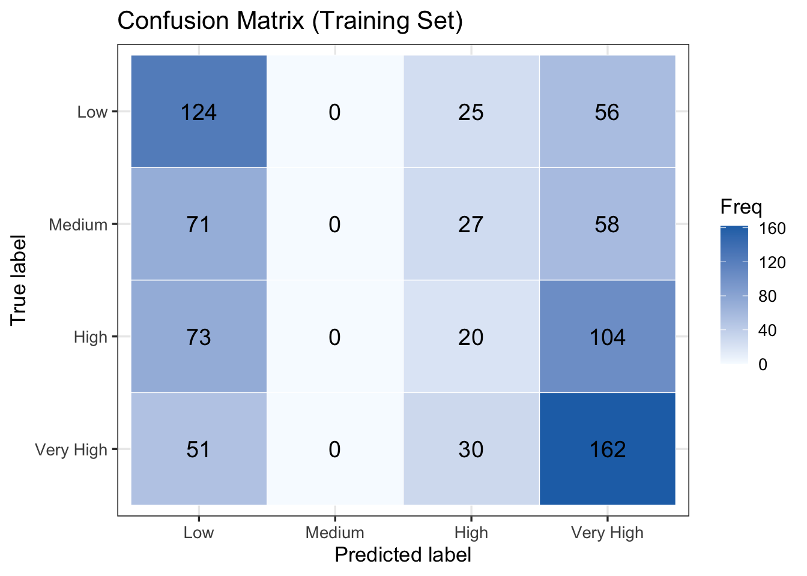
<sklearn.metrics._plot.confusion_matrix.ConfusionMatrixDisplay object at 0x303808710>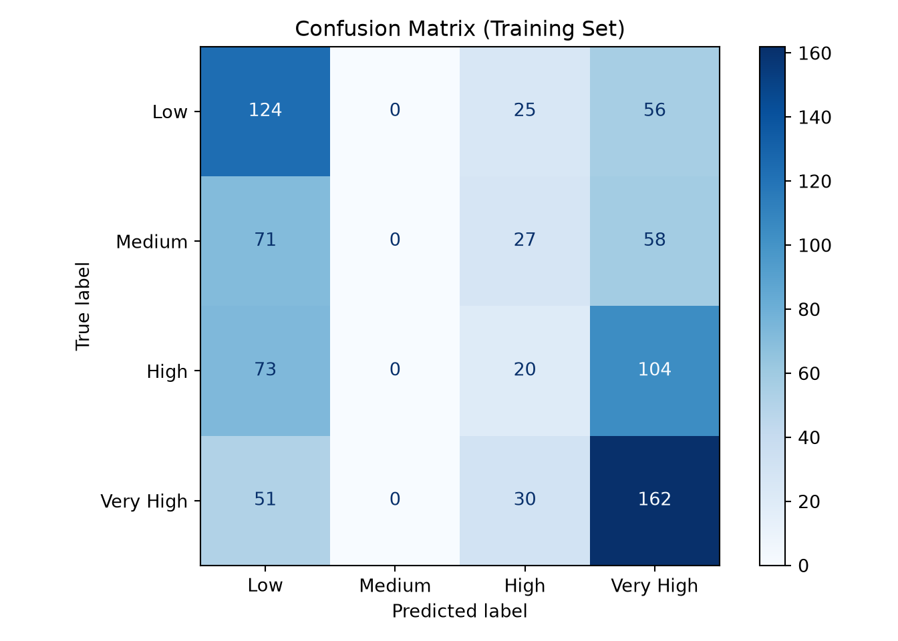
Overall Accuracy: 0.382Macro Recall: 0.343Macro F1: 0.376On the training set, the model achieves an overall accuracy of 38.2%, a macro recall of 34.3%, and a macro F1 of 37.6%. As with any multi-class ordinal problem, these figures should be interpreted relative to the random-chance baseline of 25% for a four-category outcome, so the model outperforms chance, but leaves substantial room for improvement.
The confusion matrix does not show the tidy near-diagonal pattern one might hope for in an ordinal model; instead, the model concentrates its predictions at the two ends of the scale by labelling students Low or Very High, and never assigns the Medium label at all. As the adjacent Medium category is never predicted, misclassified Low students skip it entirely and are sent to High \((25)\) or all the way to the opposite end at Very High (56), while High students are split between Very High \((104)\) and Low \((73)\). The model captures the broad low-versus-high contrast but resolves the interior of the ordinal scale poorly.
The Very High category is the best-predicted class (recall = \(0.67\), F1 = \(0.52\)), with Low close behind (recall = \(0.61\), F1 = \(0.47\)). The two middle categories fare poorly: the model never assigns the Medium label at all (recall = \(0\)), and High is rarely recovered (recall = \(0.10\), F1 = \(0.13\)), as it sits between two better-separated groups and has its observations pulled in both directions. Macro recall \((0.343)\) is lower than accuracy \((0.382)\), reflecting this uneven performance across the four categories, a pattern that persists on the held-out test set and is discussed further in the Results section.
15.8 Inference
After we finish estimating the coefficients, we examine how uncertain they are and whether they differ meaningfully from zero. We obtain a variance estimate for each coefficient from the observed information matrix (the negative of the Hessian at the MLE solution). Taking the square roots of those diagonal variances gives standard errors. Each coefficient divided by its standard error gives an asymptotically normal Wald \(z\)-statistic for testing whether the true effect is zero. Using the same standard errors, we build confidence intervals. To make results more interpretable, we exponentiate a regression coefficient (or its confidence thresholds) to obtain a proportional odds ratio, which describes how the cumulative odds of being at or below any category threshold change for a one unit increase in the regressor, holding other variables fixed.
A key advantage of the proportional odds model compared to the multinomial model is parsimony: as the proportional odds assumption constrains each regressor to a single shared slope across all \(J - 1\) cumulative logits, there is exactly one odds ratio to interpret per regressor rather than one per outcome category. A single estimate summarizes the regressor’s effect on the entire scale of the response variable.
We can determine whether a regressor is statistically associated with the cumulative log-odds through hypothesis testing for the parameters \(\beta_k\). Define the Wald statistic \(z_k\) as:
\[ z_k = \frac{\hat{\beta}_k}{\widehat{\text{se}}\!\left(\hat{\beta}_k\right)} \tag{15.9}\]
and we test the following null \((H_0)\) and alternative \((H_a)\) hypotheses:
\[ \begin{gather*} H_0: \beta_k = 0 \\ H_a: \beta_k \neq 0. \end{gather*} \]
Assuming that the sample size \(n\) is large enough, \(z_k\) follows an approximately Standard Normal distribution under \(H_0\). Note that polr() in R labels this column t value in its summary output, but the inference is based on the Normal approximation.
The corresponding \(p\)-values for each \(\hat{\beta}_k\) can be computed. The smaller the \(p\)-value, the stronger is the evidence against \(H_0\). As in previous regression models, we set a predetermined significance level (usually \(\alpha = 0.05\)): if the \(p\)-value is smaller than \(\alpha\), we claim there is evidence to reject the null hypothesis. Hence, small \(p\)-values indicate that the data support an association between the ordinal response and the \(k\)th regressor, after adjusting for all other regressors in the model.
Given a significance level \(\alpha\), we construct approximate \((1-\alpha)\times 100\%\) confidence intervals for the true \(\beta_k\):
\[ \hat{\beta}_k \pm z_{\alpha/2}\,\widehat{\text{se}}\!\left(\hat{\beta}_k\right), \tag{15.10}\]
where \(z_{\alpha/2}\) is the upper \(\alpha/2\) quantile of the Standard Normal distribution. Exponentiating the endpoints of this interval gives a \((1-\alpha)\times 100\%\) confidence interval for the proportional odds ratio \(e^{\beta_k}\).
We compute the 95% confidence intervals, odds ratios, and \(p\)-values below, and filter the significant coefficients at the 5% significance level.
library(MASS)
library(broom)
# polr() does not return p-values directly. tidy() gives the coefficient
# table (estimates, standard errors, and t-values), from which we compute
# the approximate p-values based on Normal distribution. We keep the slope coefficients only
# (the thresholds are nuisance parameters here) and exponentiate the
# profile-likelihood confidence intervals (conf.int = TRUE) to obtain
# proportional odds ratios.
inference_table <- tidy(ordinal_fit, conf.int = TRUE) |>
filter(term %in% names(coef(ordinal_fit))) |>
mutate(
p_value = 2 * pnorm(abs(statistic), lower.tail = FALSE),
or = exp(estimate),
ci_lower = exp(conf.low),
ci_upper = exp(conf.high)
) |>
dplyr::select(term, estimate, std_error = std.error, statistic,
p_value, or, ci_lower, ci_upper) |>
mutate(across(where(is.numeric), \(x) round(x, 4)))
# Print all coefficients
print(inference_table)
# Filter: significant regressors at the 5% level
cat("\nSignificant regressors (p < 0.05):\n")
print(inference_table[inference_table$p_value < 0.05, ])import numpy as np
import pandas as pd
from scipy import stats
# Extract estimates, SEs, and compute Wald z-statistics and p-values
params = ordinal_result.params
std_errs = ordinal_result.bse
z_stats = params / std_errs
p_values = 2 * stats.norm.sf(np.abs(z_stats))
# Confidence intervals on the log-odds scale
ci = ordinal_result.conf_int()
# In statsmodels OrderedModel the threshold parameters contain "/"
# in their names; keep only the slope (regressor) parameters
slope_mask = ~params.index.str.contains("/")
inference_table = pd.DataFrame({
"term" : params[slope_mask].index,
"estimate" : params[slope_mask].values,
"std_error" : std_errs[slope_mask].values,
"statistic" : np.round(z_stats[slope_mask].values,2),
"p_value" : p_values[slope_mask],
"or" : np.exp(params[slope_mask].values),
"ci_lower" : np.round(np.exp(ci.loc[slope_mask, 0].values),2),
"ci_upper" : np.round(np.exp(ci.loc[slope_mask, 1].values),2),
}).round(4)
print("All slope coefficients:")
print(inference_table.to_string(index=False))
print("\nSignificant regressors (p < 0.05):")
print(inference_table[inference_table["p_value"] < 0.05].to_string(index=False))# A tibble: 6 × 8
term estimate std_error statistic p_value or ci_lower ci_upper
<chr> <dbl> <dbl> <dbl> <dbl> <dbl> <dbl> <dbl>
1 GPA 2.20 0.223 9.89 0 9.07 5.89 14.1
2 GRE_score 0.078 0.0104 7.49 0 1.08 1.06 1.10
3 field_of_studyBu… 0.461 0.226 2.04 0.0411 1.59 1.02 2.47
4 field_of_studySo… 0.0314 0.220 0.142 0.887 1.03 0.670 1.59
5 field_of_studyST… 0.408 0.220 1.86 0.0628 1.50 0.979 2.32
6 field_of_studyHu… 0.209 0.225 0.928 0.353 1.23 0.793 1.92
Significant regressors (p < 0.05):# A tibble: 3 × 8
term estimate std_error statistic p_value or ci_lower ci_upper
<chr> <dbl> <dbl> <dbl> <dbl> <dbl> <dbl> <dbl>
1 GPA 2.20 0.223 9.89 0 9.07 5.89 14.1
2 GRE_score 0.078 0.0104 7.49 0 1.08 1.06 1.10
3 field_of_studyBu… 0.461 0.226 2.04 0.0411 1.59 1.02 2.47All slope coefficients: term estimate std_error statistic p_value or ci_lower ci_upper
GPA 2.2049 0.2229 9.89 0.0000 9.0695 5.86 14.04
GRE_score 0.0780 0.0104 7.50 0.0000 1.0812 1.06 1.10
field_of_study_Business 0.4610 0.2256 2.04 0.0411 1.5856 1.02 2.47
field_of_study_Social Sciences 0.0314 0.2205 0.14 0.8866 1.0319 0.67 1.59
field_of_study_STEM 0.4085 0.2195 1.86 0.0628 1.5045 0.98 2.31
field_of_study_Humanities 0.2089 0.2251 0.93 0.3533 1.2323 0.79 1.92
Significant regressors (p < 0.05): term estimate std_error statistic p_value or ci_lower ci_upper
GPA 2.2049 0.2229 9.89 0.0000 9.0695 5.86 14.04
GRE_score 0.0780 0.0104 7.50 0.0000 1.0812 1.06 1.10
field_of_study_Business 0.4610 0.2256 2.04 0.0411 1.5856 1.02 2.47In the proportional odds model, each coefficient \(\hat{\beta}_k\) describes the association between regressor \(x_{i,k}\) and the cumulative log-odds of being at or below any category threshold \(j\), with the other regressors held fixed. We interpret each significant coefficient through its exponentiated form, the proportional odds ratio \(e^{\hat{\beta}_k}\).
Recall the sign convention used by polr() in R (and OrderedModel in Python):
\[ \text{logit}\!\left(P(Y_i \le j \mid \mathbf{x}_i)\right) = \hat{\alpha}_j - \hat{\boldsymbol{\beta}}^\top \mathbf{x}_i. \]
Because of the sign convention, a positive \(\hat{\beta}_k\) means higher values of \(x_{i,k}\) are associated with lower cumulative probability of being in the lower categories, i.e., a shift of probability mass toward higher ordinal categories. The proportional odds ratio \(e^{\hat{\beta}_k} > 1\) therefore means that the odds of being in a higher category (i.e., \(Y_i > j\)) increases with \(x_{i,k}\).
Before interpreting these results, however, we should verify that the proportional odds assumption actually holds for each regressor. We do this formally in the next subsection using the Brant–Wald test (Section 15.8.1).
15.8.1 Brant–Wald Test for Proportional Odds
The Brant–Wald test provides a formal check of the proportional odds assumption. The idea is to fit \(J - 1 = 3\) separate binary logistic regression models (one per cumulative split) and test whether the slope estimates are “statistically equal” across splits for each regressor. If a regressor’s slope varies significantly across cutpoints, the proportional odds assumption is violated for that regressor.
For each regressor \(x_{i,k}\), let \(\hat{\beta}_{k,j}\) be the estimated slope from the binary logistic regression for cutpoint \(j\), and let \(\hat{\beta}_k^{\text{pool}}\) be the inverse-variance weighted pooled estimate. The Brant statistic for regressor \(k\) is:
\[ B_k = \sum_{j=1}^{J-1} \frac{(\hat{\beta}_{k,j} - \hat{\beta}_k^{\text{pool}})^2}{\widehat{\text{Var}}(\hat{\beta}_{k,j})}, \tag{15.11}\]
which follows a \(\chi^2\) distribution with \(J - 2\) degrees of freedom under \(H_0\) (proportional odds holds for \(x_{i,k}\)). An omnibus version of the test aggregates across all \(k\) regressors, giving a \(\chi^2\) statistic with \((J-2) \times k\) degrees of freedom.
In R, the brant() function from the brant package computes this test directly on a polr object. In Python, we implement it manually by fitting three binary logistic regression models and comparing their slopes.
from scipy.special import expit
from scipy.stats import chi2
from scipy.optimize import minimize
# Design matrix (no intercept) and ordinal response (0-indexed)
X_brant = pd.get_dummies(
train_df[["GPA", "GRE_score", "field_of_study"]], drop_first=True
).astype(float)
y_ord = train_df["inclination_to_apply"].cat.codes.values
cols = X_brant.columns.tolist()
X = X_brant.values
n, K = X.shape
J = int(y_ord.max()) + 1 # number of ordinal categories
def fit_binary_logit(X, y_bin):
"""Binary logit with intercept; returns (beta_full, vcov_full, pi_hat)."""
X_aug = np.column_stack([np.ones(len(y_bin)), X])
def nll(p):
eta = X_aug @ p
pr = np.clip(expit(eta), 1e-15, 1 - 1e-15)
return -np.sum(y_bin * np.log(pr) + (1 - y_bin) * np.log(1 - pr))
def grd(p):
return X_aug.T @ (expit(X_aug @ p) - y_bin)
res = minimize(nll, np.zeros(X_aug.shape[1]), jac=grd, method="BFGS",
options={"maxiter": 10000, "gtol": 1e-10})
beta = res.x
p_hat = expit(X_aug @ beta)
vcov = np.linalg.inv((X_aug * (p_hat * (1 - p_hat))[:, None]).T @ X_aug)
return beta, vcov, p_hat
# Fit J-1 binary logits with z_m = 1[y > m] (R brant()'s convention)
beta_full = np.zeros((J-1, K+1))
vcov_full = []
pi_hat = np.zeros((n, J-1)) # pi_hat[:, m] = P(Y > m | X)
for m in range(J-1):
z_m = (y_ord > m).astype(float)
b, V, p = fit_binary_logit(X, z_m)
beta_full[m, :] = b
vcov_full.append(V)
pi_hat[:, m] = p
# Joint covariance matrix of all slopes across cumulative splits.
# Off-diagonal blocks use Brant (1990)'s formula; diagonals use vcov of each fit.
X_aug = np.column_stack([np.ones(n), X])
varBeta = np.zeros(((J-1)*K, (J-1)*K))
for m in range(J-2):
for l in range(m+1, J-1):
Wml = pi_hat[:, l] - pi_hat[:, m] * pi_hat[:, l]
Wm = pi_hat[:, m] * (1 - pi_hat[:, m])
Wl = pi_hat[:, l] * (1 - pi_hat[:, l])
XtWmX_inv = np.linalg.inv((X_aug * Wm[:, None]).T @ X_aug)
XtWlX_inv = np.linalg.inv((X_aug * Wl[:, None]).T @ X_aug)
XtWmlX = (X_aug * Wml[:, None]).T @ X_aug
cov_block = (XtWmX_inv @ XtWmlX @ XtWlX_inv)[1:, 1:] # drop intercept
varBeta[m*K:(m+1)*K, l*K:(l+1)*K] = cov_block
varBeta[l*K:(l+1)*K, m*K:(m+1)*K] = cov_block.T
for m in range(J-1):
varBeta[m*K:(m+1)*K, m*K:(m+1)*K] = vcov_full[m][1:, 1:]
# Stack the slope estimates across the J-1 cumulative splits
betaStar = beta_full[:, 1:].flatten()
# Contrast matrix D enforcing equal slopes across splits: shape ((J-2)K, (J-1)K)
I_K, Z_K = np.eye(K), np.zeros((K, K))
D = np.vstack([
np.hstack([I_K if j == 0 else (-I_K if j == i+1 else Z_K)
for j in range(J-1)])
for i in range(J-2)
])
# Omnibus Wald statistic
Dbeta = D @ betaStar
omnibus = Dbeta @ np.linalg.inv(D @ varBeta @ D.T) @ Dbeta
omni_df = (J-2) * K
omni_p = chi2.sf(omnibus, omni_df)
# Per-regressor Wald statistics
rows = []
for k, name in enumerate(cols):
s = np.arange(k, K*(J-1), K) # positions of regressor k in betaStar
Ds = D[:, s]
Ds = Ds[~np.all(Ds == 0, axis=1), :] # drop all-zero rows
Vs = varBeta[np.ix_(s, s)]
x2k = Ds @ betaStar[s] @ np.linalg.inv(Ds @ Vs @ Ds.T) @ Ds @ betaStar[s]
rows.append((name, float(x2k), J-2, chi2.sf(x2k, J-2)))
# Print in R brant()-style format
sep = "-" * 60
print(sep)
print(f"{'Test for':30s} {'X2':>8s} {'df':>3s} {'probability':>11s}")
print(sep)
print(f"{'Omnibus':30s} {omnibus:8.2f} {omni_df:>3d} {omni_p:>11.2f}")
for name, x2, df, p in rows:
print(f"{name:30s} {x2:8.2f} {df:>3d} {p:>11.2f}")
print(sep)
print("\nH0: Parallel Regression Assumption holds")--------------------------------------------------------------------
Test for X2 df probability
--------------------------------------------------------------------
Omnibus 24.4 12 0.02
GPA 0.45 2 0.8
GRE_score 16.87 2 0
field_of_studyBusiness 2.76 2 0.25
field_of_studySocial Sciences 1.27 2 0.53
field_of_studySTEM 2.5 2 0.29
field_of_studyHumanities 0.5 2 0.78
--------------------------------------------------------------------
H0: Parallel Regression Assumption holds------------------------------------------------------------Test for X2 df probability------------------------------------------------------------Omnibus 24.37 12 0.02GPA 0.45 2 0.80
GRE_score 16.87 2 0.00
field_of_study_Business 2.76 2 0.25
field_of_study_Social Sciences 1.27 2 0.53
field_of_study_STEM 2.50 2 0.29
field_of_study_Humanities 0.50 2 0.78------------------------------------------------------------
H0: Parallel Regression Assumption holdsAccording to the Brant–Wald test results, GPA satisfies the proportional odds assumption (\(\chi^2(2) = 0.45\), \(p = 0.80\)), as do all four field-of-study dummy variables (all \(p \geq 0.25\)). GRE_score violates the proportional odds assumption (\(\chi^2(2) = 16.87\), \(p < 0.005\)), which confirms the EDA finding that GRE_score mainly distinguishes students in the Very High category rather than tracking the full ordinal gradient. As the violation of proportional odds assumption is confined to a single regressor, a partial proportional odds model, which frees only GRE score’s slope across cutpoints while keeping all other slopes shared, is the appropriate approach.
In many real-world datasets, the proportional odds assumption holds for some regressors but not others. Rather than defaulting to either extreme (the fully proportional odds model or the fully non-proportional odds model), a partial proportional odds model constrains the slopes for “well-behaved” regressors to be shared across cutpoints, while freeing the slopes for regressors that violate the proportional odds assumption. This is the most common approach in practice and is supported by the VGAM package in R via the vglm() function with the cumulative family.
15.8.2 Fitting the Partial Proportional Odds Model
In the partial proportional odds model, GRE score receives a separate slope at each of the \(J - 1 = 3\) cumulative logits, while GPA and field_of_study retain shared slopes. The model is:
\[ \text{logit}\!\left(P(Y_i \le j \mid \mathbf{x}_i)\right) = \alpha_j - \left(\beta_{\texttt{GPA}}\, x_{i,\texttt{GPA}} + \beta_{\texttt{GRE},j}\, x_{i,\texttt{GRE}} + \boldsymbol{\beta}_{\texttt{field}}^\top \mathbf{Z}_{i,\texttt{field}}\right), \quad j = 1, 2, 3, \tag{15.12}\]
where \(\beta_{\texttt{GPA}}\) and each element of \(\boldsymbol{\beta}_{\texttt{field}}\) are shared across all three cumulative splits, but \(\beta_{\texttt{GRE},j}\) varies freely with \(j\). The total parameter count is \((J - 1) + 1 + (J - 1) + (F - 1) = 3 + 1 + 3 + 4 = 11\), compared with 9 in the fully proportional model.
In R, this is straightforward using vglm() from the VGAM package with a named parallel vector. In Python, we implement the likelihood function directly and optimize it using scipy.
library(VGAM)
library(broom.helpers)
# Ensure inclination_to_apply is an ordered factor with correct level order
test_df$inclination_to_apply <- factor(
test_df$inclination_to_apply,
levels = c("Low", "Medium", "High", "Very High"),
ordered = TRUE
)
# Ensure field_of_study is a factor with a fixed reference level (Arts)
test_df$field_of_study <- factor(
test_df$field_of_study,
levels = c("Arts", "Business", "Social Sciences", "STEM", "Humanities")
)
# Partial proportional odds model:
# GPA and field_of_study are constrained (parallel = TRUE)
# GRE_score is freed across cutpoints (parallel = FALSE)
ordinal_fit_ppo <- vglm(
inclination_to_apply ~ GPA + GRE_score + field_of_study,
family = cumulative(link = "logitlink", parallel = FALSE ~ GRE_score),
data = test_df
)
summary(ordinal_fit_ppo)from scipy.optimize import minimize
from scipy.special import expit
from scipy.stats import norm
# Ensure inclination_to_apply is an ordered categorical
ordered_categories = ["Low", "Medium", "High", "Very High"]
test_df["inclination_to_apply"] = pd.Categorical(
test_df["inclination_to_apply"],
categories=ordered_categories,
ordered=True
)
# Ensure field_of_study is a categorical with a fixed reference level (Arts)
field_categories = ["Arts", "Business", "Social Sciences", "STEM", "Humanities"]
test_df["field_of_study"] = pd.Categorical(
test_df["field_of_study"],
categories=field_categories
)
y_ppo = test_df["inclination_to_apply"].cat.codes.values
X_ppo = pd.get_dummies(
test_df[["GPA", "GRE_score", "field_of_study"]], drop_first=True
).astype(float).values
n_ppo = len(y_ppo)
# Standardize GPA and GRE for numerical stability
gpa_m, gpa_s = X_ppo[:, 0].mean(), X_ppo[:, 0].std()
gre_m, gre_s = X_ppo[:, 1].mean(), X_ppo[:, 1].std()
X_sc = X_ppo.copy()
X_sc[:, 0] = (X_ppo[:, 0] - gpa_m) / gpa_s
X_sc[:, 1] = (X_ppo[:, 1] - gre_m) / gre_s
# Reparameterised, standardised NLL using sign convention logit(P(Y<=j)) = a_j - b*X
# params: alpha1, log(a2-a1), log(a3-a2),
# b_gpa_s, b_gre_j1_s, b_gre_j2_s, b_gre_j3_s, b_field[4]
def ppo_neg_ll(p):
a1=p[0]; a2=a1+np.exp(p[1]); a3=a2+np.exp(p[2])
es = p[3]*X_sc[:,0] + X_sc[:,2:]@p[7:11]
e1=es+p[4]*X_sc[:,1]; e2=es+p[5]*X_sc[:,1]; e3=es+p[6]*X_sc[:,1]
F0=expit(a1-e1); F1=expit(a2-e2); F2=expit(a3-e3)
pp=np.column_stack([np.clip(F0,1e-15,1), np.clip(F1-F0,1e-15,1),
np.clip(F2-F1,1e-15,1), np.clip(1-F2,1e-15,1)])
return -np.sum(np.log(pp[np.arange(n_ppo), y_ppo]))
p0 = np.array([0.0, np.log(2.0), np.log(2.0),
3.6*gpa_s, 0.05*gre_s, 0.15*gre_s, 0.28*gre_s,
0.47, 0.22, 0.34, 0.25])
r1 = minimize(ppo_neg_ll, p0, method="Nelder-Mead",
options={"maxiter": 1000000, "xatol": 1e-12, "fatol": 1e-12,
"adaptive": True})
r2 = minimize(ppo_neg_ll, r1.x, method="BFGS",
options={"maxiter": 200000, "gtol": 1e-13})
ppo_params = r2.x
# Convert standardised parameters back to original scale (under the "-b*X" sign convention)
a1_sc, a2_sc, a3_sc = (ppo_params[0],
ppo_params[0]+np.exp(ppo_params[1]),
ppo_params[0]+np.exp(ppo_params[1])+np.exp(ppo_params[2]))
b_gpa_o = ppo_params[3] / gpa_s
b_gre_o = ppo_params[4:7] / gre_s
b_field_o = ppo_params[7:11]
a1_o = a1_sc + b_gpa_o*gpa_m + b_gre_o[0]*gre_m
a2_o = a2_sc + b_gpa_o*gpa_m + b_gre_o[1]*gre_m
a3_o = a3_sc + b_gpa_o*gpa_m + b_gre_o[2]*gre_m
# Refit in original-scale space at the optimum to obtain a clean numerical Hessian.
# Then flip slope signs to match vglm()'s "+b*X" convention used in R's summary().
def ppo_neg_ll_orig_plus(p):
a1, a2, a3 = p[0], p[1], p[2]
b_gpa, b_g1, b_g2, b_g3 = p[3], p[4], p[5], p[6]
b_field = p[7:11]
es = b_gpa*X_ppo[:,0] + X_ppo[:,2:]@b_field
e1=es+b_g1*X_ppo[:,1]; e2=es+b_g2*X_ppo[:,1]; e3=es+b_g3*X_ppo[:,1]
F0=expit(a1+e1); F1=expit(a2+e2); F2=expit(a3+e3) # +b*X convention
pp=np.column_stack([np.clip(F0,1e-15,1), np.clip(F1-F0,1e-15,1),
np.clip(F2-F1,1e-15,1), np.clip(1-F2,1e-15,1)])
return -np.sum(np.log(pp[np.arange(n_ppo), y_ppo]))
# Coefficients in R's "+b*X" sign convention (slopes flipped)
p_R = np.array([a1_o, a2_o, a3_o, -b_gpa_o,
-b_gre_o[0], -b_gre_o[1], -b_gre_o[2],
-b_field_o[0], -b_field_o[1], -b_field_o[2], -b_field_o[3]])
# Numerical Hessian → vcov → standard errors
def num_hess(f, x, eps=1e-5):
K = len(x); H = np.zeros((K, K))
for i in range(K):
for j in range(i, K):
xpp = x.copy(); xpp[i]+=eps; xpp[j]+=eps
xpm = x.copy(); xpm[i]+=eps; xpm[j]-=eps
xmp = x.copy(); xmp[i]-=eps; xmp[j]+=eps
xmm = x.copy(); xmm[i]-=eps; xmm[j]-=eps
H[i,j] = H[j,i] = (f(xpp) - f(xpm) - f(xmp) + f(xmm)) / (4*eps*eps)
return H
H = num_hess(ppo_neg_ll_orig_plus, p_R)
se = np.sqrt(np.diag(np.linalg.inv(H)))
log_lik = -ppo_neg_ll_orig_plus(p_R)
res_dev = -2 * log_lik
res_df = n_ppo*3 - len(p_R)
labels = ["(Intercept):1", "(Intercept):2", "(Intercept):3", "GPA",
"GRE_score:1", "GRE_score:2", "GRE_score:3",
"field_of_studyBusiness", "field_of_studyHumanities",
"field_of_studySocial Sciences", "field_of_studySTEM"]
# Reorder field dummies to R's alphabetical order (Business, Humanities, Social Sciences, STEM)
# pd.get_dummies output is already alphabetical; reorder p_R/se to match label order above
field_order_in_data = ["Business", "Humanities", "STEM", "Social Sciences"]
field_order_R = ["Business", "Humanities", "Social Sciences", "STEM"]
perm = [field_order_in_data.index(f) for f in field_order_R]
p_R_ord = np.concatenate([p_R[:7], p_R[7:11][perm]])
se_ord = np.concatenate([se[:7], se[7:11][perm]])
def stars(p):
if p < 0.001: return "***"
if p < 0.01: return "** "
if p < 0.05: return "* "
if p < 0.1: return ". "
return " "
print("Call:")
print("ordinal_fit_ppo = vglm(inclination_to_apply ~ GPA + GRE_score + field_of_study,")
print(" family = cumulative(link = 'logitlink', parallel = FALSE ~")
print(" GRE_score),")
print(" data = test_df)\n")
print("Coefficients:")
print(f"{'':30s} {'Estimate':>10s} {'Std. Error':>10s} {'z value':>9s} {'Pr(>|z|)':>9s}")
for lbl, est, s in zip(labels, p_R_ord, se_ord):
z = est / s
p_two = 2 * (1 - norm.cdf(abs(z)))
print(f"{lbl:30s} {est:>10.3e} {s:>10.3e} {z:>9.3f} {p_two:>9.0e} {stars(p_two)}")
print("---")
print("Signif. codes: 0 '***' 0.001 '**' 0.01 '*' 0.05 '.' 0.1 ' ' 1\n")
print("Names of systematic components: logitlink(P[Y<=1]), logitlink(P[Y<=2]),")
print(" logitlink(P[Y<=3])\n")
print(f"Residual deviance: {res_dev:.3f} on {res_df} degrees of freedom\n")
print(f"Log-likelihood: {log_lik:.3f} on {res_df} degrees of freedom\n")
print("Number of BFGS iterations:", r2.nit, "\n")
# Exponentiated coefficients (slopes only, two columns)
print("Exponentiated coefficients:")
slope_lbls = labels[3:]
slope_exp = np.exp(p_R_ord[3:])
for i in range(0, len(slope_lbls), 2):
if i + 1 < len(slope_lbls):
print(f"{slope_lbls[i]:>30s} {slope_lbls[i+1]:>30s}")
print(f"{slope_exp[i]:>30.8f} {slope_exp[i+1]:>30.8f}")
else:
print(f"{slope_lbls[i]:>30s}")
print(f"{slope_exp[i]:>30.8f}")
Call:
vglm(formula = inclination_to_apply ~ GPA + GRE_score + field_of_study,
family = cumulative(link = "logitlink", parallel = FALSE ~
GRE_score), data = test_df)
Coefficients:
Estimate Std. Error z value Pr(>|z|)
(Intercept):1 19.71964 4.97760 3.962 7.44e-05 ***
(Intercept):2 27.01834 4.84764 5.574 2.50e-08 ***
(Intercept):3 29.65325 5.19529 5.708 1.15e-08 ***
GPA -2.39869 0.46976 -5.106 3.29e-07 ***
GRE_score:1 -0.08424 0.03118 -2.702 0.00690 **
GRE_score:2 -0.12629 0.02965 -4.260 2.05e-05 ***
GRE_score:3 -0.13534 0.03198 -4.232 2.31e-05 ***
field_of_studyBusiness -1.10984 0.53731 -2.066 0.03887 *
field_of_studySocial Sciences -1.03344 0.52565 -1.966 0.04930 *
field_of_studySTEM -1.31368 0.50212 -2.616 0.00889 **
field_of_studyHumanities -1.08147 0.54313 -1.991 0.04646 *
---
Signif. codes: 0 '***' 0.001 '**' 0.01 '*' 0.05 '.' 0.1 ' ' 1
Names of linear predictors: logitlink(P[Y<=1]), logitlink(P[Y<=2]),
logitlink(P[Y<=3])
Residual deviance: 489.0882 on 586 degrees of freedom
Log-likelihood: -244.5441 on 586 degrees of freedom
Number of Fisher scoring iterations: 7
Exponentiated coefficients:
GPA GRE_score:1
0.09083699 0.91921082
GRE_score:2 GRE_score:3
0.88136073 0.87341866
field_of_studyBusiness field_of_studySocial Sciences
0.32961241 0.35578244
field_of_studySTEM field_of_studyHumanities
0.26882831 0.33909651 Call:ordinal_fit_ppo = vglm(inclination_to_apply ~ GPA + GRE_score + field_of_study, family = cumulative(link = 'logitlink', parallel = FALSE ~ GRE_score), data = test_df)Coefficients: Estimate Std. Error z value Pr(>|z|)(Intercept):1 1.972e+01 5.126e+00 3.847 1e-04 ***
(Intercept):2 2.702e+01 5.186e+00 5.210 2e-07 ***
(Intercept):3 2.965e+01 5.387e+00 5.505 4e-08 ***
GPA -2.399e+00 4.680e-01 -5.126 3e-07 ***
GRE_score:1 -8.424e-02 3.193e-02 -2.639 8e-03 **
GRE_score:2 -1.263e-01 3.158e-02 -3.999 6e-05 ***
GRE_score:3 -1.353e-01 3.328e-02 -4.067 5e-05 ***
field_of_studyBusiness -1.110e+00 5.389e-01 -2.060 4e-02 *
field_of_studyHumanities -1.033e+00 5.314e-01 -1.945 5e-02 .
field_of_studySocial Sciences -1.081e+00 5.449e-01 -1.985 5e-02 *
field_of_studySTEM -1.314e+00 5.038e-01 -2.608 9e-03 ** ---Signif. codes: 0 '***' 0.001 '**' 0.01 '*' 0.05 '.' 0.1 ' ' 1Names of systematic components: logitlink(P[Y<=1]), logitlink(P[Y<=2]), logitlink(P[Y<=3])Residual deviance: 489.088 on 586 degrees of freedomLog-likelihood: -244.544 on 586 degrees of freedomNumber of BFGS iterations: 0 Exponentiated coefficients: GPA GRE_score:1
0.09083602 0.91920998
GRE_score:2 GRE_score:3
0.88135900 0.87341927
field_of_studyBusiness field_of_studyHumanities
0.32961488 0.35578242
field_of_studySocial Sciences field_of_studySTEM
0.33909588 0.2688290515.8.3 Regressors Associated with Inclination to Graduate School
The partial proportional odds model yields the following estimated coefficients. The sign convention is the same as before: a positive \(\hat{\beta}\) corresponds to higher values of that regressor being associated with higher ordinal categories.
GPA: GPA retains a single slope across all three cumulative splits (\(\hat{\beta}_{\texttt{GPA}} = 2.40\), \(z = 5.11\), \(p < 0.001\), OR = 11.01, 95% CI: 4.38, 27.63). It has the following interpretation.
Holding GRE score and field of study constant, a one unit increase in GPA is associated with 11.01 times higher cumulative odds of falling in a higher likelihood-to-apply category, at every cumulative threshold simultaneously.
GRE score: There are three slopes corresponding to GRE score, one per cumulative split, and they are all statistically significant.
| Cutpoint | \(\hat{\beta}_{\texttt{GRE},j}\) | OR (\(e^{\hat\beta}\)) | 95% CI | 5-pt OR (\(e^{5\hat\beta}\)) |
|---|---|---|---|---|
Low\|Medium (\(j=1\)) |
0.084 | 1.088 | (1.023, 1.156) | 1.522 |
Medium\|High (\(j=2\)) |
0.126 | 1.134 | (1.070, 1.202) | 1.878 |
High\|Very High (\(j=3\)) |
0.135 | 1.145 | (1.076, 1.219) | 1.964 |
The increasing pattern across cutpoints is the core finding. At the Low|Medium split, a one-point GRE increase is associated with only 1.088 times higher odds of being above Low. At the High|Very High split, the same one-point increase is associated with 1.145 times higher odds of being in the Very High category. Expressed as 5-point effects, the contrast is clearer: a 5-point increase in GRE score multiplies the odds by about 1.52 at the lowest split, but by about 1.96 at the highest split. This confirms that GRE score is primarily a discriminator for students at the top of the scale rather than a uniform regressor across the full range of GRE scores.
Field of study: On the held-out test set, all four field of study levels reach significance at the 5% confidence threshold relative to the Arts baseline: Business (\(\hat{\beta}_{\texttt{Business}} = 1.11\), \(z = 2.07\), \(p = 0.039\), OR = 3.03), Humanities (\(\hat{\beta}_{\texttt{Humanities}} = 1.08\), \(z = 1.99\), \(p = 0.046\), OR = 2.95), STEM (\(\hat{\beta}_{\texttt{STEM}} = 1.31\), \(z = 2.62\), \(p = 0.009\), OR = 3.72), and Social Sciences (\(\hat{\beta}_{\texttt{Social Sciences}} = 1.03\), \(z = 1.97\), \(p = 0.049\), OR = 2.81). With every odds ratio above \(1\), the pattern is consistent across fields: students outside Arts show higher odds of a stronger inclination to apply to graduate school.
15.9 Results
The partial proportional odds model, in which GPA and field_of_study are constrained to shared coefficients while GRE_score is allowed cutpoint-specific coefficients, is the model selected for this case study, based on the Brant–Wald test results from Section 15.8. Using the sign convention, the fitted model is
\[ \text{logit}\!\left(P(Y_i \le j \mid \mathbf{x}_i)\right) = \hat{\alpha}_j - \left(\hat{\beta}_{\texttt{GPA}}\, x_{i,\texttt{GPA}} + \hat{\beta}_{\texttt{GRE},j}\, x_{i,\texttt{GRE}} + \hat{\boldsymbol{\beta}}_{\texttt{field}}^\top \mathbf{Z}_{i,\texttt{field}}\right) \]
for \(j = 1, 2, 3\) (i.e., the three cumulative splits Low|Medium, Medium|High, and High|Very High). The estimated thresholds and slopes of the selected partial proportional odds model are summarized below. GPA and the field of study levels carry a single shared slope, while GRE score has a separate slope at each cumulative split:
| Parameter | Estimate | Std. Error | \(z\) | \(p\)-value | OR | 95% CI |
|---|---|---|---|---|---|---|
\(\hat{\alpha}_1\) (Low\|Medium) |
19.72 | — | — | — | — | — |
\(\hat{\alpha}_2\) (Medium\|High) |
27.02 | — | — | — | — | — |
\(\hat{\alpha}_3\) (High\|Very High) |
29.65 | — | — | — | — | — |
| \(\hat{\beta}_{\texttt{GPA}}\) (shared) | 2.40 | 0.470 | 5.11 | \(< 0.001\) | 11.01 | (4.38, 27.63) |
\(\hat{\beta}_{\texttt{GRE},1}\) (Low\|Medium) |
0.084 | 0.031 | 2.70 | 0.007 | 1.088 | (1.023, 1.156) |
\(\hat{\beta}_{\texttt{GRE},2}\) (Medium\|High) |
0.126 | 0.030 | 4.26 | \(< 0.001\) | 1.134 | (1.070, 1.202) |
\(\hat{\beta}_{\texttt{GRE},3}\) (High\|Very High) |
0.135 | 0.032 | 4.23 | \(< 0.001\) | 1.145 | (1.076, 1.219) |
| \(\hat{\beta}_{\texttt{Business}}\) (shared) | 1.11 | 0.537 | 2.07 | 0.039 | 3.03 | (1.06, 8.70) |
| \(\hat{\beta}_{\texttt{Humanities}}\) (shared) | 1.08 | 0.543 | 1.99 | 0.046 | 2.95 | (1.02, 8.55) |
| \(\hat{\beta}_{\texttt{STEM}}\) (shared) | 1.31 | 0.502 | 2.62 | 0.009 | 3.72 | (1.39, 9.95) |
| \(\hat{\beta}_{\texttt{Social Sciences}}\) (shared) | 1.03 | 0.526 | 1.97 | 0.049 | 2.81 | (1.00, 7.88) |
After the Brant–Wald test revealed that GRE score’s slope varies significantly across cutpoints, the partial proportional odds model (fitted via vglm() in R) produced cutpoint-specific GRE slopes of \(\hat{\beta}_{\texttt{GRE},1} = 0.084\), \(\hat{\beta}_{\texttt{GRE},2} = 0.126\), and \(\hat{\beta}_{\texttt{GRE},3} = 0.135\) at the three cumulative splits respectively, with all other slope coefficients remaining shared. The interpretation of each significant coefficient is:
- GPA: Holding GRE score and field of study constant, each additional GPA point is associated with 11.01 times higher cumulative odds of being in a higher likelihood-to-apply category, at every cumulative threshold simultaneously. This is by far the strongest regressor in the model.
-
GRE score: The effect of GRE score on the cumulative log-odds grows substantially across cutpoints. A one-point increase in GRE score is associated with an 8.8% increase in the odds of being above
Low(OR = 1.088 at \(j=1\)), rising to a 13.4% increase in the odds of being aboveMedium(OR = 1.134 at \(j=2\)), and a 14.5% increase in the odds of being in theVery Highcategory (OR = 1.145 at \(j=3\)), assuming that GPA and field of study are held constant. This confirms that GRE score primarily distinguishes students at the top of the ordinal scale.
On the test set, all four field-of-study levels are statistically significant after adjusting for GPA and GRE score (all \(p < 0.05\)), with odds ratios between 2.8 and 3.7 relative to the Arts baseline. As this model is fitted on the test set, these field effects are estimated imprecisely and run larger than the corresponding effects in the training-set proportional odds model, where only Business is significant; they should be interpreted with that caveat in mind.
15.9.1 Prediction
Let’s fit the partial proportional odds model on the training set, and predict on the held-out test set. Recall that this is the model selected in Section 15.8, in which GPA and field_of_study carry shared slopes while GRE_score is allowed a separate slope at each cumulative split. The confusion matrix and performance metrics are reported below.
library(VGAM)
library(caret)
library(ggplot2)
# Fit the partial proportional odds model on the training set: GRE_score's slope
# is freed across cutpoints (parallel = FALSE ~ GRE_score) while GPA and the
# field-of-study levels keep a single shared slope.
ppo_fit_train <- vglm(
inclination_to_apply ~ GPA + GRE_score + field_of_study,
family = cumulative(link = "logitlink", parallel = FALSE ~ GRE_score),
data = train_df
)
# Predict on test set. type = "response" returns one column of fitted
# probabilities per response category (in level order); the predicted class is
# the column with the highest probability for each row.
ordered_levels <- c("Low", "Medium", "High", "Very High")
pred_probs <- predict(ppo_fit_train, newdata = test_df, type = "response")
y_pred <- factor(ordered_levels[max.col(pred_probs, ties.method = "first")],
levels = ordered_levels)
# Confusion matrix
conf_matrix <- confusionMatrix(
factor(y_pred, levels = levels(test_df$inclination_to_apply)),
factor(test_df$inclination_to_apply, levels = levels(test_df$inclination_to_apply))
)
# Visualise
cm_df <- as.data.frame(as.table(conf_matrix$table))
colnames(cm_df) <- c("Predicted", "Actual", "Freq")
# Order axes so the main diagonal (correct matches) runs top-left to
# bottom-right: Predicted increases left -> right (Low -> Very High), and
# Actual increases top -> bottom (Low -> Very High). ggplot draws the first
# factor level at the bottom of the y-axis, so we reverse Actual's levels to
# place "Low" at the top.
cm_df$Predicted <- factor(cm_df$Predicted, levels = levels(cm_df$Predicted))
cm_df$Actual <- factor(cm_df$Actual, levels = rev(levels(cm_df$Actual)))
cm_df |>
ggplot(aes(x = Predicted, y = Actual, fill = Freq)) +
geom_tile(color = "white") +
geom_text(aes(label = Freq), color = "black", size = 5) +
scale_fill_gradient(low = "#f7fbff", high = "#2171b5") +
labs(title = "Confusion Matrix (Test Set)",
x = "Predicted label", y = "True label") +
theme_bw(base_size = 13)from sklearn.metrics import confusion_matrix, ConfusionMatrixDisplay
from scipy.optimize import minimize
from scipy.special import expit
import matplotlib.pyplot as plt
ordered_categories = ["Low", "Medium", "High", "Very High"]
field_categories = ["Arts", "Business", "Social Sciences", "STEM", "Humanities"]
# Apply identical category definitions to train and test so the design matrices
# (and y) line up; the fixed field levels keep get_dummies consistent even if a
# category is absent from the test set.
for _df in (train_df, test_df):
_df["inclination_to_apply"] = pd.Categorical(
_df["inclination_to_apply"], categories=ordered_categories, ordered=True
)
_df["field_of_study"] = pd.Categorical(
_df["field_of_study"], categories=field_categories
)
def design(df):
return pd.get_dummies(
df[["GPA", "GRE_score", "field_of_study"]], drop_first=True
).astype(float).values
X_train = design(train_df)
X_test = design(test_df)
y_train = train_df["inclination_to_apply"].cat.codes.values
true_codes = test_df["inclination_to_apply"].cat.codes.values
n_train = len(y_train)
# Standardise GPA and GRE_score for stable optimisation; the partial
# proportional odds likelihood frees GRE_score's slope across the three
# cutpoints (p[4:7]) while GPA (p[3]) and the field dummies (p[7:11]) are shared.
gpa_m, gpa_s = X_train[:, 0].mean(), X_train[:, 0].std()
gre_m, gre_s = X_train[:, 1].mean(), X_train[:, 1].std()
X_sc = X_train.copy()
X_sc[:, 0] = (X_train[:, 0] - gpa_m) / gpa_s
X_sc[:, 1] = (X_train[:, 1] - gre_m) / gre_s
def ppo_neg_ll(p):
a1 = p[0]; a2 = a1 + np.exp(p[1]); a3 = a2 + np.exp(p[2])
es = p[3]*X_sc[:, 0] + X_sc[:, 2:]@p[7:11]
e1 = es + p[4]*X_sc[:, 1]; e2 = es + p[5]*X_sc[:, 1]; e3 = es + p[6]*X_sc[:, 1]
F0 = expit(a1+e1); F1 = expit(a2+e2); F2 = expit(a3+e3)
pp = np.column_stack([np.clip(F0, 1e-15, 1), np.clip(F1-F0, 1e-15, 1),
np.clip(F2-F1, 1e-15, 1), np.clip(1-F2, 1e-15, 1)])
return -np.sum(np.log(pp[np.arange(n_train), y_train]))
p0 = np.array([-1.0, np.log(2.0), np.log(2.0), 0.0, 0.0, 0.0, 0.0, 0.0, 0.0, 0.0, 0.0])
r1 = minimize(ppo_neg_ll, p0, method="Nelder-Mead",
options={"maxiter": 1000000, "xatol": 1e-12, "fatol": 1e-12, "adaptive": True})
r2 = minimize(ppo_neg_ll, r1.x, method="BFGS", options={"maxiter": 200000, "gtol": 1e-12})
p = r2.x
# Convert the fitted parameters back to the original (unscaled) GPA/GRE scale.
a1, a2, a3 = p[0], p[0]+np.exp(p[1]), p[0]+np.exp(p[1])+np.exp(p[2])
b_gpa = p[3] / gpa_s
b_gre = p[4:7] / gre_s
b_field = p[7:11]
A = np.array([a1, a2, a3]) - b_gpa*gpa_m - b_gre*gre_m
def predict_probs(X):
es = b_gpa*X[:, 0] + X[:, 2:]@b_field
F0 = expit(A[0]+es+b_gre[0]*X[:, 1])
F1 = expit(A[1]+es+b_gre[1]*X[:, 1])
F2 = expit(A[2]+es+b_gre[2]*X[:, 1])
return np.column_stack([F0, F1-F0, F2-F1, 1-F2])
# Predict on test set
pred_codes = predict_probs(X_test).argmax(axis=1)
# Confusion matrix
cm = confusion_matrix(true_codes, pred_codes, labels=range(4))
disp = ConfusionMatrixDisplay(confusion_matrix=cm,
display_labels=ordered_categories)
disp.plot(cmap="Blues")
plt.title("Confusion Matrix (Test Set)")
plt.tight_layout()
plt.show()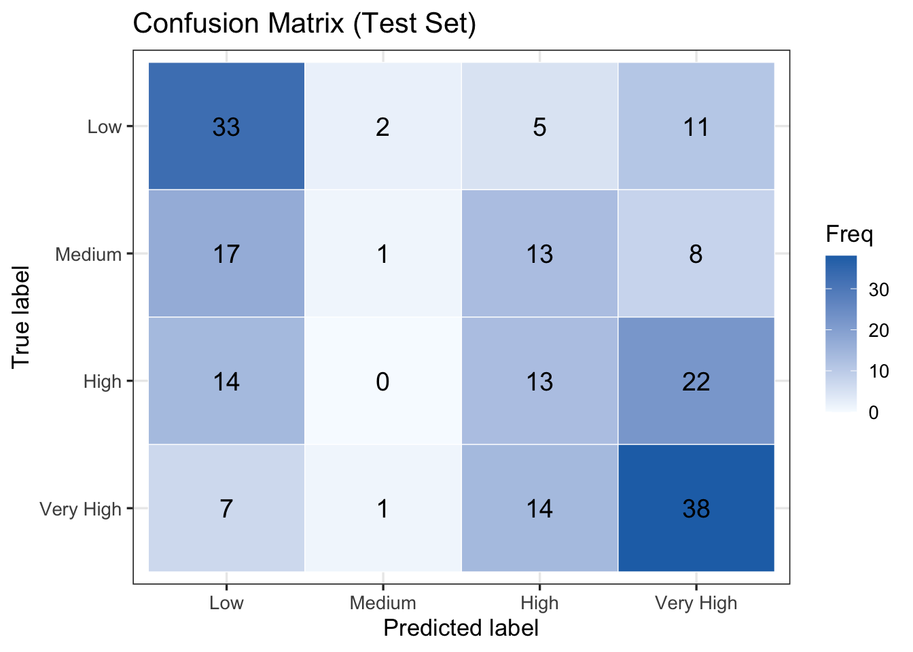
<sklearn.metrics._plot.confusion_matrix.ConfusionMatrixDisplay object at 0x303a36f90>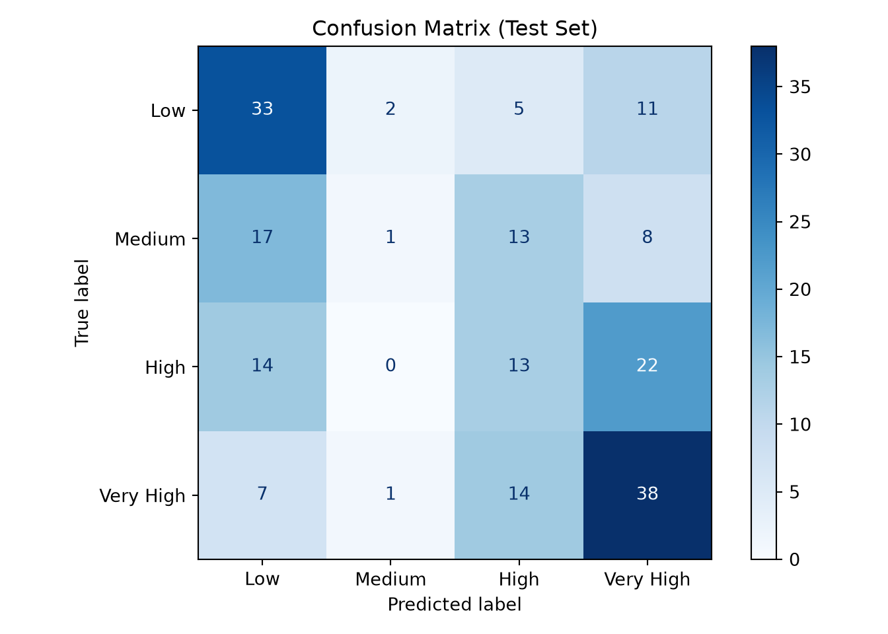
The corresponding performance metrics are computed below.
overall_accuracy <- conf_matrix$overall["Accuracy"]
macro_recall <- mean(conf_matrix$byClass[, "Recall"], na.rm = TRUE)
macro_f1 <- mean(conf_matrix$byClass[, "F1"], na.rm = TRUE)
cat("Overall Accuracy:", round(overall_accuracy, 3), "\n")
cat("Macro Recall:", round(macro_recall, 3), "\n")
cat("Macro F1:", round(macro_f1, 3), "\n")from sklearn.metrics import accuracy_score, recall_score, f1_score
acc = accuracy_score(true_codes, pred_codes)
recall = recall_score(true_codes, pred_codes, average="macro")
# Average F1 only over the classes the model actually predicts, so a
# never-predicted class (undefined precision) is dropped rather than
# counted as 0 — matching caret's byClass F1 with na.rm = TRUE in the R tab.
predicted_labels = np.unique(pred_codes)
f1 = f1_score(true_codes, pred_codes,
labels=predicted_labels, average="macro")
print(f"Overall Accuracy: {acc:.3f}")
print(f"Macro Recall: {recall:.3f}")
print(f"Macro F1: {f1:.3f}")Overall Accuracy: 0.427 Macro Recall: 0.393 Macro F1: 0.353 Overall Accuracy: 0.427Macro Recall: 0.393Macro F1: 0.353On the test set, the partial proportional odds model achieves an overall accuracy of 42.7%, a macro recall of 39.3%, and a macro F1 of 35.3%. Freeing GRE score’s slope across cutpoints recovers the two extreme categories reasonably well but still resolves the interior of the ordinal scale poorly. Of the 51 students with a Low inclination to apply, 33 are classified correctly, while 11 are pushed all the way to Very High; symmetrically, of the 60 students with a Very High inclination, 38 are correct and 7 are misclassified as Low. The Medium category is almost never recovered: among the 39 students who are truly Medium, only 1 is placed correctly, while the remaining 38 are scattered into 17 Low, 13 High, and 8 Very High. The model assigns the Medium label to only 4 students in the entire test set. The model captures the broad high-versus-low contrast and also recovers a portion of the High cases, but the middle of the ordinal scale remains its weakest region in terms of predictive accuracy.
The Low and Very High categories are predicted most reliably, with recalls of \(0.65\) and \(0.63\) (F1 = \(0.54\) and \(0.55\), respectively), consistent with the inference finding that GPA and GRE score most sharply distinguish students at the two ends of the ordinal scale. High is recovered moderately (recall = \(0.27\), F1 = \(0.28\)): of the \(49\) students who are truly High, \(13\) are classified correctly, while \(22\) are pulled up to Very High and \(14\) down to Low. Medium is by far the hardest category — the model assigns that label to only \(4\) students in total and recovers just \(1\) of the \(39\) true cases (recall = \(0.03\), F1 = \(0.05\)). Freeing GRE score’s slope therefore sharpens the High boundary relative to the fully proportional model, but the Medium interior remains essentially unresolved.
15.10 Storytelling
To complete the data science workflow, let’s step back from the coefficients, tests, and confusion matrices and focus on how the results can be interpreted and applied in practice. This final stage, storytelling, is where statistical output is translated into insights that support real-world decision-making.
In this case study, the ordinal logistic regression model helps us understand how a college junior’s GPA, GRE score, and field of study relate to their inclination to apply to graduate school, an outcome we treated as an ordered scale from Low to Very High rather than a simple yes-or-no decision. Below, we distill the key takeaways from the analysis and discuss what they imply for students, academic advisors, and the staff who support graduate school planning.
15.10.1 Key Insights From the Model
GPA is a significant signal of a student’s inclination to apply to graduate school. Of the three factors considered, GPA carries by far the largest influence, and that influence is uniform. A higher GPA is associated with a stronger inclination to apply right across the scale, not just at a single point along it.
GRE score matters most near the top of the scale rather than uniformly for a student’s inclination to apply. Unlike GPA, GRE score does not move every part of the scale equally. Its association with inclination strengthens as students move toward the higher categories of inclination_to_apply, so GRE score mainly separates the most strongly inclined students from the merely interested rather than nudging hesitant students toward applying at all. In practical terms, GRE preparation is likely to matter most for students who are already leaning toward applying and aiming at competitive programs; for students at the lower end of the scale, it is a weaker lever, and other forms of encouragement may do more.
Testing the proportional odds assumption, rather than assuming it, changed the story. The proportional ordinal logistic regression model assumes that the effect of regressors is constant across the entire scale of the response variable. If we had accepted this assumption without checking, the distinctive behaviour of GRE score described above would have stayed hidden. A formal test flagged that GRE score’s effect varies from one cumulative split to the next, which led us to the partial proportional odds model that frees the slope for GRE score, while keeping the slopes “constrained” for other regressors.
As a predictor, the model captures the broad contrast but not the fine gradations. When used to classify students, the model reliably separates the two ends of the scale, clearly inclined versus clearly not, but struggles in between: it recovers only a portion of the High group and rarely identifies Medium students at all, tending to push middle-of-the-scale students outward toward the extremes rather than placing them precisely. Its accuracy sits well above what random guessing would achieve for a four-category outcome, but it still leaves considerable room for improvement. The model is therefore better suited to a coarse screen of who is clearly oriented toward graduate study than to an exact, individual-level placement into one of the four categories.
Using the Results Responsibly
It is important to remember that this analysis is associational, not causal. The model does not show that raising a student’s GPA or GRE score will, on its own, change their inclination to apply. It shows that, in this dataset, higher values tend to occur alongside a stronger inclination once the other measured factors are taken into account.
Nevertheless, the results provide a useful evidence-based starting point for discussion. They help prioritize which factors are most closely linked to a student’s inclination to apply to graduate school, and which factors play a smaller or less certain role. For academic advisors and graduate programs, this kind of insight can guide where limited outreach and mentoring resources are most likely to have impact.
15.11 Practice Exercises
The following exercises connect the conceptual, computational, and interpretive parts of ordinal logistic regression. You will distinguish ordered categories from numerical measurements, work with cumulative and category probabilities, interpret adjusted associations, and assess the assumptions and predictive performance of an ordinal model. The final conceptual question asks you to communicate numerical results to a non-technical audience.
15.11.1 Conceptual Questions
Question 15.1
Multiple Choice
A transit authority wants to relate passengers’ experiences to journey characteristics. Which response is most naturally suited to ordinal logistic regression?
A. The passenger’s main transport mode: bus, train, bicycle, or car.
B. The passenger’s satisfaction: Very dissatisfied < Dissatisfied < Satisfied < Very satisfied.
C. The number of transfers made during the journey.
D. The journey duration in minutes.
Answer 15.1
Click here to reveal the answer!
Correct answer: B.
Rationale:
Satisfaction has a meaningful category order without requiring equal distances between adjacent categories. Transport mode is nominal, the number of transfers is a count, and journey duration is a continuous measurement. An ordinal model is a reasonable starting point for satisfaction, although its assumptions still need to be assessed.
Question 15.2
True or False
If satisfaction categories are stored as the numbers \(1,2,3,4\), moving from category \(1\) to category \(2\) necessarily represents the same increase in satisfaction as moving from category \(3\) to category \(4\). Explain your answer.
Answer 15.2
Click here to reveal the answer!
Correct answer: False.
Rationale:
The codes record order, not measured distances. The labels alone do not establish that adjacent changes have equal substantive meaning. Ordinal logistic regression models the probabilities of the ordered categories without treating the numeric codes as equally spaced measurements of satisfaction.
Question 15.3
Open-ended Question
A library records users’ confidence in finding information as Low < Moderate < High. An analyst proposes three approaches: OLS applied to the codes \(1,2,3\), multinomial logistic regression, and proportional odds ordinal logistic regression.
- What interpretation does OLS impose on the response codes?
- What information does an unrestricted multinomial model leave unused?
- What additional restriction makes the proportional odds model more parsimonious, and what should happen if that restriction is not supported?
Answer 15.3
Click here to reveal the answer!
- OLS models the mean of the assigned scores, treating a one-unit change as comparable across the scale. That interpretation depends on the chosen scores and is not supplied by the category labels. It also does not directly model a probability distribution over the three categories.
- An unrestricted multinomial model can model these categories, but it treats them as nominal and does not use their ordering to structure the regressions. It generally estimates more slopes than the proportional odds model with the same regressors.
- The proportional odds model shares each regressor’s slope across cumulative splits. If diagnostics challenge that restriction, consider a justified partial or fully non-proportional odds model and assess its fit and probability validity. A multinomial model is also a possible alternative; it is not mathematically invalid merely because the outcome is ordered.
The response scale and the evidence about model adequacy should guide the choice.
Question 15.4
Open-ended Question
A museum models visitor satisfaction as \(Y=1,2,3,4\), corresponding to Poor < Fair < Good < Excellent. The regressors are waiting time in minutes, visit duration in hours, and ticket type with levels Standard, Student, and Member. Use Standard as the reference ticket type, with one indicator for each of the other two levels, and assume no interactions.
- List the cumulative splits modelled by a proportional odds model.
- How many thresholds and slope coefficients are estimated? Give the total parameter count.
- Explain why the thresholds must be ordered and why an additional freely estimated common intercept is unnecessary.
Answer 15.4
Click here to reveal the answer!
There are \(J-1=3\) cumulative splits:
-
PoorversusFair,Good, orExcellent; -
PoororFairversusGoodorExcellent; -
Poor,Fair, orGoodversusExcellent.
The model estimates three thresholds and four shared slopes: one each for waiting time, visit duration, the student indicator, and the member indicator. The total is \(3+4=7\) parameters. The two ticket-type slopes compare their respective groups with Standard, holding the other regressors fixed.
The ordered thresholds \(\alpha_1<\alpha_2<\alpha_3\) ensure that cumulative probabilities increase with the cutoff and that differencing them produces non-negative category probabilities. They are not required to be equally spaced.
Each threshold already supplies an intercept for its cumulative logit. If the model also contained a common intercept \(b_0\), only the differences \(\alpha_j-b_0\) would be identified: adding the same constant to every \(\alpha_j\) and to \(b_0\) would leave all predictions unchanged.
Question 15.5
True or False
Replacing the display codes \(1,2,3,4\) by \(10,20,40,80\) leaves an ordinal logistic model unchanged, provided the software still treats the response as the same four ordered categories and uses the same observations and regressors. Explain your answer.
Answer 15.5
Click here to reveal the answer!
Correct answer: True.
Rationale:
An ordered categorical response contributes category membership and order, not the numerical gaps between its labels. A one-to-one relabelling that preserves that order therefore leaves the model and fitted probabilities unchanged. This requires explicitly preserving the category order in the software; alphabetical sorting, reversed levels, or treating the codes as a continuous response would change the analysis.
Question 15.6
Multiple Choice
For one visitor with specified regressor values, an ordinal model gives
\[ P(Y\le1)=0.15,\qquad P(Y\le2)=0.50,\qquad P(Y\le3)=0.85, \]
where \(Y\) has four ordered categories. What is the probability that this visitor is in category 3 exactly?
A. \(0.85\).
B. \(0.50\).
C. \(0.35\).
D. \(0.15\).
Answer 15.6
Click here to reveal the answer!
Correct answer: C.
Rationale:
Cumulative probabilities include all lower categories. Subtracting removes the probability of categories 1 and 2:
\[ P(Y=3)=P(Y\le3)-P(Y\le2)=0.85-0.50=0.35. \]
The complete category-probability vector is \((0.15,0.35,0.35,0.15)\). Its entries are non-negative and sum to one.
Question 15.7
Open-ended Question
For three independent survey respondents, the observed categories are \(1\), \(3\), and \(4\). At one candidate set of ordinal-model parameters, the probabilities assigned to those respondents’ observed categories, conditional on their respective regressors, are \(0.20\), \(0.30\), and \(0.40\).
- Calculate their joint likelihood contribution and log-likelihood contribution using natural logarithms.
- Explain why we use the probability of each observed category rather than the probability of being at or below that category.
- What does maximum likelihood estimation optimize, and why should convergence be checked?
Answer 15.7
Click here to reveal the answer!
Independence allows the category probabilities to be multiplied:
\[ \mathcal{L}=0.20\times0.30\times0.40=0.024, \qquad \ell=\log(0.024)\approx-3.730. \]
The data record exactly one category per respondent. A cumulative probability would include outcomes that were not observed; for a respondent in category 4, for example, \(P(Y\le4)=1\) would provide no information about how much probability the model assigns to category 4 itself.
Maximum likelihood estimation jointly chooses the thresholds and slopes to maximize the likelihood, or equivalently the log-likelihood, over valid parameter values. The solution generally requires numerical optimization. Convergence checks help establish whether the algorithm reached a stable solution; warnings, very large estimates, or an unstable estimated covariance matrix require investigation before interpreting coefficients or confidence intervals.
Question 15.8
Multiple Choice
Satisfaction is ordered from Poor to Excellent. Under the convention \(\operatorname{logit}P(Y\le j\mid\mathbf{x})=\alpha_j-\boldsymbol{\beta}^{\top}\mathbf{x}\), the fitted coefficient for waiting time is \(\hat\beta_{\text{wait}}=-0.40\) per ten minutes. Which interpretation is correct, holding other regressors fixed?
A. Ten additional minutes increase the probability of every higher category by \(40\) percentage points.
B. Ten additional minutes multiply the odds of being above each cutoff by \(e^{0.40}\approx1.49\).
C. Ten additional minutes reduce the probability of Excellent by exactly \(33\%\) for every visitor.
D. Ten additional minutes multiply the odds of being above each cutoff by \(e^{-0.40}\approx0.67\).
Answer 15.8
Click here to reveal the answer!
Correct answer: D.
Rationale:
The above-cutoff odds are \(P(Y>j\mid\mathbf{x})/P(Y\le j\mid\mathbf{x})\). Their ratio for a one-unit regressor increase is \(e^\beta\), so ten additional minutes are associated with about 33% lower odds of being above each cutoff. The corresponding at-or-below odds ratio is the reciprocal, \(e^{0.40}\approx1.49\). Neither quantity is a fixed change in probability, and this adjusted association does not establish a causal effect of waiting time.
Question 15.9
Open-ended Question
A proportional odds model relates information-search confidence (Low < Moderate < High) to workshop hours and prior library experience. The coefficient for workshop hours is \(\hat\beta=0.08\) per hour, using the exercises’ minus-sign convention.
- Compare the above-cutoff odds for two users who differ by five workshop hours but have the same prior experience.
- For the user with fewer hours, suppose \(P(Y>\text{Moderate})=0.40\). Calculate this probability for the user with five more hours.
- Explain why the odds ratio should not be reported as a probability ratio.
Answer 15.9
Click here to reveal the answer!
For a five-hour difference, the common above-cutoff odds ratio is
\[ \exp(5\times0.08)=\exp(0.40)\approx1.49. \]
The user with more workshop hours has approximately 49% higher cumulative odds of being above either cutoff, holding prior experience fixed.
For the specified Moderate cutoff, the baseline odds are \(0.40/0.60=2/3\). The new odds and probability are
\[ o_1=\frac{2}{3}e^{0.40}\approx0.995, \qquad p_1=\frac{o_1}{1+o_1}\approx0.499. \]
Thus the fitted probability of High confidence rises from \(40.0\%\) to about \(49.9\%\), a change of 9.9 percentage points. The probability ratio is approximately \(0.499/0.400=1.25\), not \(1.49\). Converting an odds ratio into a probability change requires the baseline probability.
Question 15.10
True or False
The proportional odds assumption means that a one-unit increase in a regressor produces the same change in \(P(Y\le j\mid\mathbf{x})\) at every cutoff and for every individual. Explain your answer.
Answer 15.10
Click here to reveal the answer!
Correct answer: False.
Rationale:
The shared slope gives the same change in the cumulative log-odds, and hence the same cumulative odds ratio, across cutoffs. The logistic transformation is nonlinear, so probability changes depend on the cutoff and the individual’s regressor values. Parallel lines on the cumulative-logit scale do not imply equally spaced curves or constant changes on the probability scale.
Question 15.11
Open-ended Question
Two analysts fit the same model with the same response order. Analyst A writes
\[ \operatorname{logit}P(Y\le j\mid x)=\alpha_j-\beta x \quad\text{and reports}\quad\hat\beta=0.60. \]
Analyst B writes
\[ \operatorname{logit}P(Y\le j\mid x)=\alpha_j+\gamma x \quad\text{and reports}\quad\hat\gamma=-0.60. \]
Are their fitted associations contradictory? Give the one-unit odds ratio for being above a cutoff and the one-unit odds ratio for being at or below it. Explain what should be checked before comparing coefficients across software.
Answer 15.11
Click here to reveal the answer!
The associations are the same because \(\gamma=-\beta\). Both analysts subtract \(0.60x\) from the threshold when constructing the lower cumulative logit.
For a one-unit increase in \(x\), the above-cutoff odds ratio is
\[ e^{\beta}=e^{-\gamma}=e^{0.60}\approx1.82, \]
whereas the at-or-below odds ratio is
\[ e^{-\beta}=e^{\gamma}=e^{-0.60}\approx0.55. \]
Both describe a shift toward higher categories. Before comparing software output, check the response order, which cumulative event is modelled, whether the slope is added or subtracted, the regressor units, and any reference-category coding. A change in sign convention alone is not a disagreement in fitted probabilities.
Question 15.12
Open-ended Question
A four-category confidence model has thresholds \(\alpha_1=-1\), \(\alpha_2=0.5\), and \(\alpha_3=2\), with a single slope \(\beta=0.5\). For a person with \(x=2\), use
\[ P(Y\le j\mid x)=\frac{1}{1+\exp\{-(\alpha_j-\beta x)\}} \]
to calculate:
- The three cumulative probabilities.
- The probabilities of each of the four categories.
- The predicted category under the rule that selects the largest category probability. Does this classification imply that the chosen category has probability greater than \(0.50\)?
Answer 15.12
Click here to reveal the answer!
Here \(\beta x=1\), so the cumulative logits are \(-2\), \(-0.5\), and \(1\). Applying the logistic function gives
\[ P(Y\le1\mid x)\approx0.1192,\quad P(Y\le2\mid x)\approx0.3775,\quad P(Y\le3\mid x)\approx0.7311. \]
The category probabilities are obtained from successive differences, with endpoint cumulative probabilities \(0\) and \(1\):
| Category | Calculation | Probability |
|---|---|---|
| 1 | \(P(Y\le1\mid x)\) | \(0.1192\) |
| 2 | \(P(Y\le2\mid x)-P(Y\le1\mid x)\) | \(0.2583\) |
| 3 | \(P(Y\le3\mid x)-P(Y\le2\mid x)\) | \(0.3535\) |
| 4 | \(1-P(Y\le3\mid x)\) | \(0.2689\) |
The probabilities are non-negative and sum to one before rounding. The predicted category is 3, because its probability is the largest, even though that probability is only about \(35.4\%\). Selecting the most probable category is not a claim of certainty or even of a majority probability. This decision rule treats all incorrect classifications as equally costly; a different application-specific loss may call for a different rule.
Question 15.13
Open-ended Question
An observational study models employees’ confidence in using a new software system as Low < Moderate < High. Under the minus-sign convention, the estimated slope for years of relevant experience is \(\hat\beta=0.40\), with standard error \(0.15\), adjusting for training hours and job role. Assume the fitted model and the large-sample Wald approximation are adequate.
- Calculate the Wald statistic for \(H_0:\beta=0\) and assess the two-sided test at the \(5\%\) level using the critical value \(1.96\).
- Construct a \(95\%\) confidence interval for \(\beta\) and transform it into an interval for the above-cutoff odds ratio.
- Interpret the result in context. Does it show that giving an employee an additional year of experience would cause their confidence to increase?
Answer 15.13
Click here to reveal the answer!
The Wald statistic is
\[ z=\frac{0.40}{0.15}\approx2.67. \]
Since \(|z|>1.96\), reject \(H_0\) at the \(5\%\) level. The two-sided p-value is approximately \(0.008\).
The coefficient interval is
\[ 0.40\pm1.96(0.15)=[0.106,0.694]. \]
Exponentiating the estimate and both endpoints gives
\[ \widehat{\mathrm{OR}}=e^{0.40}\approx1.49, \qquad 95\%\ \mathrm{CI}=[e^{0.106},e^{0.694}]\approx[1.11,2.00]. \]
Employees with one more year of relevant experience have an estimated 49% higher odds of being above either confidence cutoff, holding training hours and job role fixed. The interval is compatible with an increase in those odds of approximately \(11\%\) to \(100\%\), so the magnitude remains uncertain even though the interval excludes one.
This is an adjusted association from observational data, not evidence that changing experience alone would cause the reported change. It is also not a \(49\%\) increase in the probability of High confidence.
Question 15.14
True or False
An omnibus Brant–Wald test gives \(p=0.38\). This proves that proportional odds holds and that the model’s probability predictions are well calibrated. Explain your answer.
Answer 15.14
Click here to reveal the answer!
Correct answer: False.
Rationale:
The null hypothesis is that each regressor’s slope is common across the cumulative splits. At the \(5\%\) level, \(p=0.38\) supplies insufficient evidence to reject that restriction; it does not prove the slopes are equal. The test may have limited power, particularly with sparse categories or a small sample.
The test also does not establish calibration, the adequacy of the chosen functional forms, or independence of observations. Those concerns require their own evidence, including appropriate comparisons of predicted probabilities with observed outcomes.
Question 15.15
True or False
A company collects an ordered satisfaction rating from each employee every month. Treating these ratings as an ordered factor does not, by itself, justify the independent-observations assumption of the standard ordinal logistic model. Explain your answer and identify a suitable modelling consideration.
Answer 15.15
Click here to reveal the answer!
Correct answer: True.
Rationale:
Ratings from the same employee may be correlated because they share personal characteristics and work circumstances. Correctly specifying the response order does not remove this dependence. Treating all rows as independent can give misleading uncertainty estimates.
The analysis should account for repeated observations, for example through an ordinal model with an employee-level random effect or another suitable method for correlated ordinal data. Predictive validation should also reflect the target: evaluating predictions for new employees requires keeping their observations out of the training sample, while forecasting later ratings requires respecting time order.
Question 15.16
Multiple Choice
An ordinal fit returns a slope estimate of \(18\), a standard error of \(250\), and an optimizer convergence warning. The highest response category contains only three observations. What is the most defensible next step?
A. Check sparse category/regressor combinations, possible separation, regressor scaling, and numerical convergence before interpreting the estimate.
B. Report \(e^{18}\) as a precise and very large association because the coefficient is positive.
C. Conclude that the regressor is unimportant because the reported Wald statistic is small.
D. Remove the three observations in the highest category solely to eliminate the warning.
Answer 15.16
Click here to reveal the answer!
Correct answer: A.
Rationale:
The warning and large standard error suggest an unstable fit. Sparse data or separation at a cumulative split can make finite maximum likelihood estimates difficult to obtain; poor scaling can also create numerical problems. Inspect the data and fitting diagnostics before deciding how to address the issue.
Neither the exponentiated estimate nor its Wald test is reliable evidence of a substantive association in this situation. Deleting a valid category solely to obtain convergence changes the question being answered. Any simplification of the model or regrouping of categories needs substantive justification, followed by a new assessment of the fit.
Question 15.17
Open-ended Question
A training dataset records service confidence as Low < Moderate < High < Very high. The proposed regressors are workshop hours \(h_i\) and years of experience \(e_i\), with no interactions. Brant–Wald results give an omnibus p-value of \(0.004\), a p-value of \(0.002\) for workshop hours, and a p-value of \(0.46\) for experience.
- Propose a partial proportional odds model and write its cumulative logits using the exercises’ minus-sign convention. What would the workshop-hours coefficients mean?
- Count the parameters in the proportional, proposed partial proportional, and fully non-proportional models.
- On the same training observations, the proportional model has maximized log-likelihood \(-410\) and the proposed partial model has maximized log-likelihood \(-405\). Assume both fits are valid and converged and the usual likelihood-ratio approximation applies. State the null hypothesis, calculate the likelihood-ratio statistic and degrees of freedom, and compare with the \(5\%\) critical value \(5.99\).
- What should be checked before carrying the selected model forward?
Answer 15.17
Click here to reveal the answer!
The results motivate examining a model that frees the workshop-hours slope while retaining a shared experience slope:
\[ \operatorname{logit}P(Y_i\le j\mid h_i,e_i) =\alpha_j-\beta_{h,j}h_i-\beta_e e_i, \qquad j=1,2,3. \]
For one additional workshop hour, \(e^{\beta_{h,j}}\) is the above-cutoff odds ratio at cutoff \(j\), holding experience fixed. These ratios may differ across the three cumulative comparisons. The experience p-value does not prove proportionality; a shared experience slope remains a working restriction to assess.
| Model | Thresholds | Slopes | Total parameters |
|---|---|---|---|
| Proportional odds | 3 | \(1+1=2\) | 5 |
| Partial proportional odds | 3 | \(3+1=4\) | 7 |
| Fully non-proportional odds | 3 | \(3+3=6\) | 9 |
The proportional model is nested in the partial model through
\[ H_0:\beta_{h,1}=\beta_{h,2}=\beta_{h,3}, \]
against an alternative in which at least one of these slopes differs. The likelihood-ratio statistic is
\[ G^2=2\{-405-(-410)\}=10, \qquad \mathrm{df}=7-5=2. \]
Since \(10>5.99\), the comparison supports relaxing this restriction at the stated level; the approximate p-value is \(0.0067\). This is evidence for the proposed refinement, not a demonstration that the larger model is adequate in every respect. Because the same training data motivated the comparison, it belongs to model development rather than a fresh confirmatory test.
Before proceeding, repeat the relevant diagnostics for the selected partial model: check convergence and uncertainty, investigate remaining proportionality restrictions and the linear form of continuous regressor terms, and assess fit and the validity of predicted category probabilities. In particular, check that cumulative probabilities remain ordered over the relevant regressor range. If those checks are satisfactory, freeze the specification before final inference and held-out predictive evaluation. If the larger model had not been supported, retaining the simpler model would still require an adequate diagnostic assessment.
Question 15.18
Open-ended Question
For a particular regressor profile, a non-proportional odds model returns
\[ P(Y\le1)=0.20,\qquad P(Y\le2)=0.70,\qquad P(Y\le3)=0.65 \]
for a four-category response. Each number is between zero and one.
- Are these valid cumulative probabilities? Calculate the implied category probabilities.
- Why are ordered intercepts alone insufficient to prevent this problem when slopes vary by cutoff?
- Is replacing any negative category probability by zero and rescaling the vector an adequate validation of the fitted model?
Answer 15.18
Click here to reveal the answer!
The implied category probabilities are
\[ (0.20,\ 0.70-0.20,\ 0.65-0.70,\ 1-0.65) =(0.20,0.50,-0.05,0.35). \]
They are invalid because category 3 has negative probability. The event \(Y\le2\) is contained in \(Y\le3\), so its probability cannot be larger. Being individually between zero and one is not sufficient for a collection of cumulative probabilities to be valid.
With shared slopes, ordered intercepts preserve the order of the cumulative logits at every regressor profile. With different slopes, those logits can cross as the regressors change, even if the intercepts are ordered.
Clipping and rescaling may produce a numerical vector that sums to one, but it does not validate the fitted cumulative model or its likelihood-based inference. Investigate the specification and fitting procedure, and use a model that produces coherent probabilities over the intended prediction range. Extrapolation beyond the observed range needs particular attention.
Question 15.19
Multiple Choice
On a held-out sample, a four-category model classifies \(72\%\) of observations correctly. A baseline that always predicts the most common training category achieves \(70\%\) accuracy on that same sample. The fitted model correctly identifies only \(10\%\) of the observations in the lowest category. Which conclusion is best supported?
A. The model is highly useful because its accuracy is much higher than \(25\%\).
B. The model’s probabilities must be well calibrated because its accuracy exceeds the baseline.
C. The accuracy gain is two percentage points; usefulness also depends on performance by category, the seriousness of ordinal errors, and probability quality.
D. Low recall in one category proves that the proportional odds assumption is false.
Answer 15.19
Click here to reveal the answer!
Correct answer: C.
Rationale:
The observed improvement is \(72\%-70\%=2\) percentage points, and the lowest category is usually missed. Accuracy alone can hide this weakness when categories are imbalanced. The ordered confusion matrix and recall for each category help show where errors occur, including whether predictions miss by one category or confuse the two extremes.
If predicted probabilities matter, examine their quality as well, using measures such as log loss and calibration comparisons. The importance of the gain also depends on its uncertainty and the intended use. Neither good classification nor poor recall in one group is a direct test of proportional odds. Uniform random guessing is not the most informative baseline here because a simple training-derived rule already achieves \(70\%\) accuracy.
Question 15.20
Open-ended Question
A team intends to follow the book’s split-sample workflow: model development on training data, a refit of the frozen specification on testing data for final coefficient inference, and held-out prediction using the training-fitted model.
Instead, the team uses the testing data to decide which slopes should vary by cutoff. It then fits that selected model on the testing data and reports classification accuracy on those same observations as held-out performance.
Identify the two main problems and describe the correct sequence. Does using the testing observations for both the planned inferential refit and the planned predictive evaluation make those two results independent replications?
Answer 15.20
Click here to reveal the answer!
First, the testing data influenced model selection, so they no longer provide an untouched assessment of the selected specification. Second, predictions from a model fitted on those same testing responses are in-sample predictions, not held-out predictions.
The intended sequence is:
- Split the observations before EDA and model development, using a split appropriate to the study design.
- Use training data to choose regressors, functional forms, and proportionality restrictions, and repeat diagnostics after supported refinements.
- Freeze the specification and evaluation choices. For the book’s final coefficient inference, refit only that fixed specification on the testing sample; do not select again based on those results.
- For predictive evaluation, retain the training-fitted coefficients and predict testing outcomes from their regressors. Compare with the training-derived baseline using the planned measures.
The inferential refit and predictive model share a specification but are different fitted objects. Since the two final analyses use the same testing observations, their results are not independent replications. Once a sample has been used for additional development, a new untouched evaluation sample or an appropriate validation design is needed for a fresh assessment.
Question 15.21
Open-ended Question
A library studies confidence in finding information, ordered as Low < Moderate < High. Its questions are: How is workshop attendance associated with confidence, adjusting for prior library experience and education? And how well can those regressors predict a new user’s confidence category? The study is observational. The frozen model has passed the planned development checks, and the final results are:
| Result | Value |
|---|---|
| Adjusted above-cutoff odds ratio per additional workshop session, from the final inferential refit | \(1.50\), with \(95\%\) CI \([1.15,1.96]\) |
| Testing accuracy of the training-fitted model | \(62\%\) |
| Testing accuracy of the training-derived majority-category baseline | \(50\%\) |
Testing recall for the Low confidence category |
\(28\%\) |
Write a four- to five-sentence briefing for the library director. Explicitly answer both research questions, use numerical evidence and uncertainty, identify a predictive limitation, and suggest a proportionate use of the results. Avoid a causal claim or describing an odds ratio as a probability ratio.
Answer 15.21
Click here to reveal the answer!
One possible five-sentence briefing is:
Users who attended one additional workshop session had an estimated 50% higher odds of being above either confidence cutoff, after accounting for prior library experience and education; the 95% confidence interval for that odds ratio was 1.15 to 1.96. Because this was an observational study, the association does not establish that attending another session would itself increase confidence. For new users in the held-out sample, the model predicted the exact confidence category correctly 62% of the time, compared with 50% for the simple baseline, an improvement of 12 percentage points. However, it identified only 28% of users who actually had low confidence, so it missed most of the group that might need additional help. The findings can inform further evaluation of workshop support, but direct assessment should accompany any use of the model to identify users needing assistance.
This briefing separates evidence about association from evidence about prediction. It gives an adjusted magnitude and interval, compares prediction with a relevant baseline, and connects the weak recall to the practical decision without claiming that the model establishes causation or is ready for automatic allocation of support.
15.11.2 Case Study
A Better Train Journey: Understanding Passenger Satisfaction
A regional rail operator wants to understand passengers’ experiences and evaluate how well journey characteristics predict satisfaction. Its passenger-experience team is particularly interested in waiting time, crowding, and the availability of live arrival information. A lower chance of a very poor experience and a higher chance of an excellent experience are distinct practical goals.
The dataset contains 1,800 simulated passenger journeys, with one passenger surveyed after each separately sampled service run. Treat these observations as independent for this exercise. The response is an ordered rating:
\[ \texttt{Very dissatisfied}<\texttt{Dissatisfied}<\texttt{Satisfied}<\texttt{Very satisfied}. \]
The labels define an order, not equal numerical distances. This is a synthetic observational-style exercise: its associations are not evidence of actual causal effects or service benefits for a real rail operator.
| Variable | Meaning | Model role and coding |
|---|---|---|
passenger_id |
Unique synthetic passenger identifier | Join/check observations; exclude from regressors |
satisfaction |
Overall rating after the journey | Ordered response with the four levels above |
wait_minutes |
Time waiting before boarding, 0–25 minutes | Continuous; not necessarily a delay relative to the timetable |
crowding |
Crowding on the train: Low, Moderate, High
|
Two indicators; Low is the reference |
arrival_information |
Live arrival information available: No, Yes
|
Binary indicator; No is the reference |
journey_minutes |
Journey duration, 10–70 minutes, excluding the pre-boarding wait | Continuous, in minutes |
The analysis file is problem-1-data.csv. The companion split file assigns 900 IDs to training and 900 to testing, using an outcome-independent random split with seed 1516. Use these assignments in both languages. Do not create a second split or regenerate the data during the analysis.
The workflow is: define the inquiries, verify and encode the data, explore training observations, fit a simple and an extended proportional-odds model, diagnose and refine the model, repeat checks, freeze the specification, and then produce separate inferential and predictive results. Finish with a quantitative briefing for the passenger-experience team.
Running the worked answers
Run the answers in order, with the working directory set to the book’s book directory, as in the other chapter examples. The R solutions use MASS, VGAM, brant, ggplot2, and knitr; Python uses numpy, pandas, scipy, statsmodels, and matplotlib. The chapter’s existing reticulate setup renders both languages and displays Python tables.
All analysis functions are defined in the code blocks below, within this chapter. Run the setup block for your chosen language before the worked answers. The Python functions fit the cumulative-logit likelihood because the standard OrderedModel fits proportional odds only. The implementation exposes the likelihood, derivative, convergence checks, and expected-information standard errors; it rejects invalid probabilities rather than clipping them. The setup blocks define functions without reading data or fitting models.
Use the saved response data for the analysis. The generator’s known coefficients and probability curves are author references, not fitted results or diagnostic evidence.
Functions Used by the Worked Answers
Show R analysis functions
# Functions used by the Chapter 15 worked answers.
# VGAM's default lower-cumulative logit has +gamma*x; beta=-gamma gives upper odds.
train_display_table <- function(x) {
# Keep small p-values visible in both R tables and reticulate-converted Python tables.
# Explicit conversion also handles newer pandas classes with older reticulate.
if (inherits(x, 'python.builtin.object')) {
x <- x$to_dict(orient = 'list')
if (inherits(x, 'python.builtin.object')) x <- reticulate::py_to_r(x)
}
x <- as.data.frame(x)
for (column in intersect(names(x), c('p', 'p_value', 'probability')))
x[[column]] <- format.pval(x[[column]], digits = 3, eps = .001)
x
}
train_lr <- function(label, small, big) {
npar <- function(fit) {
if (inherits(fit, 'polr')) length(stats::coef(fit)) + length(fit$zeta)
else if (inherits(fit, 'vglm')) length(stats::coef(fit))
else stop('Expected a MASS::polr or VGAM::vglm fit.')
}
df <- npar(big) - npar(small)
statistic <- 2 * as.numeric(stats::logLik(big) - stats::logLik(small))
if (df <= 0 || statistic < -1e-7) stop('Check nesting and likelihood maximization.')
data.frame(comparison = label, statistic = statistic, df = df,
p = stats::pchisq(statistic, df, lower.tail = FALSE))
}
train_or_table <- function(fit) {
if (!inherits(fit, 'vglm')) stop('Expected a native VGAM::vglm fit.')
# Requires cumulative(reverse=FALSE): report slopes, not the cutpoints.
native <- stats::coef(fit)
keep <- !grepl('Intercept', names(native), fixed = TRUE)
beta <- -native[keep]
se <- sqrt(diag(stats::vcov(fit)))[keep] # Native expected-information covariance.
data.frame(term = names(beta), estimate = unname(beta), se = unname(se),
z = unname(beta / se), p = unname(2 * stats::pnorm(-abs(beta / se))),
odds_ratio = unname(exp(beta)),
OR_lower = unname(exp(beta - stats::qnorm(.975) * se)),
OR_upper = unname(exp(beta + stats::qnorm(.975) * se)))
}
train_probability_check <- function(p) {
if (!is.matrix(p) || !is.numeric(p) || nrow(p) == 0L || ncol(p) != 4L)
stop('Expected a nonempty numeric probability matrix with four columns.')
if (any(!is.finite(p)) || any(p < 0) || any(p > 1) ||
any(abs(rowSums(p) - 1) > 1e-10))
stop('Invalid probabilities: investigate the fit; do not clip or rescale.')
invisible(TRUE)
}
train_fit_check <- function(fit, max_iterations = 200L) {
if (!inherits(fit, 'vglm')) stop('Expected a native VGAM::vglm fit.')
covariance <- stats::vcov(fit)
if (fit@iter >= max_iterations || any(!is.finite(stats::coef(fit))) ||
!is.finite(as.numeric(stats::logLik(fit))) ||
any(!is.finite(covariance)) || any(diag(covariance) <= 0))
stop('Investigate convergence, coefficients, and uncertainty before proceeding.')
train_probability_check(VGAM::predictvglm(fit, type = 'response'))
invisible(TRUE)
}
train_metrics <- function(name, p, y) {
train_probability_check(p)
if (length(y) != nrow(p) || anyNA(y) || any(!(y %in% 1:4)))
stop('y must contain one integer category code from 1 to 4 per row.')
predicted <- max.col(p, ties.method = 'first')
cm <- table(factor(y, levels = 1:4), factor(predicted, levels = 1:4))
correct <- diag(cm)
actual <- rowSums(cm)
assigned <- colSums(cm)
# Include all four categories. Undefined per-category recall/F1 is set to zero.
recall <- ifelse(actual > 0, correct / actual, 0)
f1 <- ifelse(actual + assigned > 0, 2 * correct / (actual + assigned), 0)
cumulative <- t(apply(p, 1, cumsum))[, 1:3, drop = FALSE]
observed <- outer(y, 1:3, '<=') * 1
data.frame(Model = name, Accuracy = mean(predicted == y),
MacroRecall = mean(recall), MacroF1 = mean(f1),
RankMAE = mean(abs(predicted - y)),
LogLoss = -mean(log(p[cbind(seq_along(y), y)])),
RPS = mean(rowMeans((cumulative - observed)^2)))
}
train_calibration <- function(p, y, bins = 5L) {
train_probability_check(p)
if (length(y) != nrow(p) || anyNA(y) || any(!(y %in% 1:4)))
stop('y must contain one integer category code from 1 to 4 per row.')
if (length(bins) != 1L || !is.finite(bins) || bins < 1 || bins != as.integer(bins))
stop('bins must be a positive integer.')
result <- lapply(1:3, function(j) {
predicted <- rowSums(p[, seq_len(j), drop = FALSE])
breaks <- unique(stats::quantile(predicted, seq(0, 1, length.out = bins + 1)))
group <- if (length(breaks) == 1L) rep(1L, length(y)) else
cut(predicted, breaks = breaks, include.lowest = TRUE, labels = FALSE)
rows <- lapply(sort(unique(group)), function(g) {
selected <- group == g
n <- sum(selected)
observed <- mean(y[selected] <= j)
data.frame(cutpoint = j, bin = g, n = n,
predicted = mean(predicted[selected]), observed = observed,
standard_error = sqrt(observed * (1 - observed) / n))
})
do.call(rbind, rows)
})
# Descriptive binomial SEs, not simultaneous bands or uncertainty in the fitted model.
do.call(rbind, result)
}Show Python analysis functions
from dataclasses import dataclass
import numpy as np
import pandas as pd
from scipy.optimize import minimize
from scipy.special import expit
from scipy.stats import chi2, norm
import statsmodels.api as sm
RAIL_LEVELS = ["Very dissatisfied", "Dissatisfied", "Satisfied", "Very satisfied"]
def rail_design(data, quadratic=False):
"""Explicit columns avoid reference-category and intercept ambiguities."""
x = pd.DataFrame({
"wait5": data["wait5"].to_numpy(),
"duration15": data["duration15"].to_numpy(),
"crowdingModerate": (data["crowding"] == "Moderate").to_numpy(float),
"crowdingHigh": (data["crowding"] == "High").to_numpy(float),
"arrival_informationYes": (data["arrival_information"] == "Yes").to_numpy(float),
}, index=data.index)
if quadratic:
x["wait5_squared"] = x["wait5"] ** 2
x["duration15_squared"] = x["duration15"] ** 2
return x
def rail_probability_check(p):
p = np.asarray(p, dtype=float)
if (p.ndim != 2 or p.shape[1] != 4 or not np.isfinite(p).all()
or (p < 0).any() or (p > 1).any()
or not np.allclose(p.sum(axis=1), 1, atol=1e-10, rtol=0)):
raise ValueError("Invalid category probabilities; inspect the model.")
return p
def rail_basis(x, free):
"""Derivative of each cumulative logit with respect to free parameters."""
n = len(x)
blocks = [np.broadcast_to(np.eye(3), (n, 3, 3))]
names = [f"alpha:{j}" for j in range(1, 4)]
for name in x.columns:
values = -x[name].to_numpy(float)[:, None, None]
if name in free:
blocks.append(values * np.eye(3)[None, :, :])
names.extend(f"{name}:{j}" for j in range(1, 4))
else:
blocks.append(np.broadcast_to(values, (n, 3, 1)))
names.append(name)
return np.concatenate(blocks, axis=2), names
@dataclass
class RailCumulativeFit:
params: np.ndarray
covariance: np.ndarray
names: list
columns: list
free: tuple
loglik: float
score_max: float
iterations: int
def predict(self, x):
z, _ = rail_basis(x.loc[:, self.columns], self.free)
cumulative = expit(z @ self.params)
return rail_probability_check(np.diff(np.column_stack(
[np.zeros(len(x)), cumulative, np.ones(len(x))]), axis=1))
def rail_fit_cumulative(x, y, free=(), start=None):
"""Fit shared or cutoff-specific slopes by the ordinal likelihood.
y is coded 0,1,2,3. Pass an existing nested fit as start when extending
a model. Invalid trial probabilities are rejected during optimization.
"""
y = np.asarray(y, dtype=int)
if len(y) != len(x) or set(np.unique(y)) != {0, 1, 2, 3}:
raise ValueError("The fitting sample must contain all four outcome categories.")
if not set(free).issubset(x.columns):
raise ValueError("Unknown non-proportional regressor.")
z, names = rail_basis(x, free)
theta = np.zeros(len(names))
cumulative_counts = np.bincount(y, minlength=4).cumsum()[:3] / len(y)
theta[:3] = np.log(cumulative_counts / (1 - cumulative_counts))
if start is not None:
old = dict(zip(start.names, start.params))
for k, name in enumerate(names):
theta[k] = old.get(name, old.get(name.split(":")[0], theta[k]))
def components(t):
f = expit(z @ t)
p = np.diff(np.column_stack([np.zeros(len(y)), f, np.ones(len(y))]), axis=1)
df = f[:, :, None] * (1 - f[:, :, None]) * z
dp = np.diff(np.concatenate([np.zeros((len(y), 1, len(t))), df,
np.zeros((len(y), 1, len(t)))], axis=1), axis=1)
return p, dp
def objective(t):
p, dp = components(t)
if (p <= 0).any() or not np.isfinite(p).all():
return 1e100, np.zeros_like(t)
observed = p[np.arange(len(y)), y]
score = dp[np.arange(len(y)), y] / observed[:, None]
return -np.log(observed).sum(), -score.sum(axis=0)
result = minimize(objective, theta, jac=True, method="BFGS",
options={"gtol": 1e-6, "maxiter": 1500})
nll, gradient = objective(result.x)
# BFGS can stop on numerical precision after reaching a stationary point.
if not np.isfinite(nll) or nll >= 1e99 or np.max(np.abs(gradient)) > 1e-4:
raise RuntimeError(f"Fit did not converge: {result.message}")
p, dp = components(result.x)
rail_probability_check(p)
information = np.einsum("njk,njl,nj->kl", dp, dp, 1 / p)
if np.linalg.eigvalsh(information).min() <= 0:
raise RuntimeError("Fisher information is not positive definite.")
return RailCumulativeFit(result.x, np.linalg.inv(information), names,
list(x.columns), tuple(free), -float(nll),
float(np.max(np.abs(gradient))), int(result.nit))
def rail_lr_test(label, small, big):
statistic = 2 * (big.loglik - small.loglik)
df = len(big.params) - len(small.params)
if df <= 0 or statistic < -1e-5:
raise ValueError("Check nesting and convergence before an LR comparison.")
return {"Comparison": label, "LR": statistic, "df": df,
"p_value": chi2.sf(statistic, df)}
def rail_or_table(fit):
keep = np.array([not name.startswith("alpha:") for name in fit.names])
b = fit.params[keep]
se = np.sqrt(np.diag(fit.covariance))[keep]
return pd.DataFrame({"term": np.array(fit.names)[keep], "beta": b, "SE": se,
"z": b / se, "p_value": 2 * norm.sf(np.abs(b / se)),
"OR": np.exp(b), "lower95": np.exp(b - 1.96 * se),
"upper95": np.exp(b + 1.96 * se)})
def rail_brant_table(x, y):
"""Brant-Wald checks using covariance across nested binary splits.
Separate binary responses for one person are dependent. Cross-covariance
uses P(Y>l) * [1-P(Y>m)] for m<l, as in R's brant implementation.
Cutpoint intercepts are nuisance parameters and are not tested for equality.
"""
y = np.asarray(y, dtype=int)
X = sm.add_constant(x, has_constant="add").to_numpy(float)
models = [sm.GLM((y > j).astype(int), X, family=sm.families.Binomial()).fit()
for j in range(3)]
p = np.column_stack([m.fittedvalues for m in models])
inv = [np.linalg.inv(X.T @ ((p[:, j] * (1-p[:, j]))[:, None] * X)) for j in range(3)]
k = x.shape[1]
covariance = np.zeros((3*k, 3*k))
for j in range(3):
covariance[j*k:(j+1)*k, j*k:(j+1)*k] = inv[j][1:, 1:]
for l in range(j+1, 3):
cross = inv[j] @ (X.T @ ((p[:, l]*(1-p[:, j]))[:, None]*X)) @ inv[l]
covariance[j*k:(j+1)*k, l*k:(l+1)*k] = cross[1:, 1:]
covariance[l*k:(l+1)*k, j*k:(j+1)*k] = cross[1:, 1:].T
slopes = np.concatenate([m.params[1:] for m in models])
groups = {"Omnibus": list(range(k)), **{name: [j] for j, name in enumerate(x.columns)}}
rows = []
for name, columns in groups.items():
contrast = []
for j in [1, 2]:
for c in columns:
row = np.zeros(3*k); row[c] = 1; row[j*k+c] = -1
contrast.append(row)
D = np.array(contrast); difference = D @ slopes
statistic = difference @ np.linalg.solve(D @ covariance @ D.T, difference)
rows.append({"term": name, "Wald": statistic, "df": len(D),
"p_value": chi2.sf(statistic, len(D))})
return pd.DataFrame(rows)
def rail_metrics(name, p, y):
"""y uses 0..3. RPS is the mean squared error over THREE cumulative cuts."""
p = rail_probability_check(p); y = np.asarray(y, dtype=int)
pred = p.argmax(axis=1)
cm = np.zeros((4, 4), dtype=int); np.add.at(cm, (y, pred), 1)
recall = np.divide(cm.diagonal(), cm.sum(1), out=np.zeros(4), where=cm.sum(1)>0)
precision = np.divide(cm.diagonal(), cm.sum(0), out=np.zeros(4), where=cm.sum(0)>0)
f1 = np.divide(2*precision*recall, precision+recall, out=np.zeros(4), where=(precision+recall)>0)
observed_cdf = (y[:, None] <= np.arange(3)).astype(float)
return {"Model": name, "Accuracy": np.mean(pred == y), "MacroRecall": recall.mean(),
"MacroF1": f1.mean(), "RankMAE": np.abs(pred-y).mean(),
"LogLoss": -np.log(p[np.arange(len(y)), y]).mean(),
"RPS": np.mean((p.cumsum(1)[:, :3]-observed_cdf)**2)}
def rail_calibration(p, y, bins=5):
p = rail_probability_check(p); y = np.asarray(y, dtype=int)
rows = []
for j in range(3):
predicted = p[:, :j+1].sum(1)
frame = pd.DataFrame({"predicted": predicted, "observed": (y <= j).astype(float),
"bin": pd.qcut(predicted, bins, duplicates="drop")})
grouped = frame.groupby("bin", observed=True).agg(
n=("observed", "size"), predicted=("predicted", "mean"), observed=("observed", "mean")
).reset_index()
grouped["cutpoint"] = j+1
grouped["standard_error"] = np.sqrt(grouped.observed*(1-grouped.observed)/grouped.n)
rows.append(grouped)
return pd.concat(rows, ignore_index=True)Study Design
Question 15.22 — Inferential Inquiry
Formulate an inferential inquiry for the rail operator. Identify meaningful comparisons for waiting time, crowding, and arrival-information availability. Explain why the inquiry concerns associations rather than causal effects.
Answer 15.22
Click here to reveal the answer!
A suitable inquiry is:
How are waiting time, crowding, arrival-information availability, and journey duration associated with passengers’ satisfaction, after adjustment for the other measured journey characteristics?
Compare passengers with five minutes’ difference in waiting time, compare Moderate and High crowding with Low, and compare information available with unavailable. For information, ask whether the association is the same for avoiding Very dissatisfied, being Satisfied or better, and reaching Very satisfied.
The outcome is an ordered distribution, so report cumulative odds ratios and selected category probabilities. The study does not randomly assign service conditions; in this simulated observational-style analysis, an adjusted association does not establish what would happen if the operator intervened.
Question 15.23 — Predictive Inquiry
Formulate a separate predictive inquiry. Define the prediction setting, explain when the regressors would be available, and identify an appropriate baseline.
Answer 15.23
Click here to reveal the answer!
A suitable predictive inquiry is:
For a new passenger journey with known waiting time, crowding, arrival-information availability, and journey duration, how accurately can the model predict the four satisfaction probabilities and the passenger’s most likely rating?
Because realized waiting and journey duration are used, this is a prediction after the journey, before observing the survey response. It is not a forecast available before departure. A probability baseline uses the training-sample proportions of the four ratings; its category prediction is the most common training rating. Evaluate both methods on the same held-out journeys, using the same category order and metrics.
Question 15.24 — Observational Units and Probability Model
Identify the observational unit and response. Write the conditional probability model, explain the independence assumption, and define how category probabilities are recovered from cumulative probabilities.
Answer 15.24
Click here to reveal the answer!
One observation is one surveyed passenger on a separately sampled train service run. Code the response \(Y_i=1,2,3,4\) in the stated order. Conditional on the regressors \(\mathbf{x}_i\),
\[ P(Y_i=j\mid\mathbf{x}_i)=p_{i,j},\qquad p_{i,j}\ge0,\qquad \sum_{j=1}^{4}p_{i,j}=1. \]
Equivalently, the one-hot response has a multinomial distribution with one trial and probabilities \((p_{i,1},\ldots,p_{i,4})\). Responses are assumed independent across observations; surveying several passengers on the same run or repeatedly surveying one passenger would require additional consideration of dependence.
Let \(C_{i,j}=P(Y_i\le j\mid\mathbf{x}_i)\) for \(j=1,2,3\), with \(C_{i,0}=0\) and \(C_{i,4}=1\). Then
\[ p_{i,j}=C_{i,j}-C_{i,j-1}. \]
The cumulative probabilities must increase with \(j\). The likelihood uses the probability of each passenger’s observed category, not merely the corresponding cumulative probability.
Question 15.25 — Regressor Coding and Notation
Define scaled continuous regressors and indicators for this analysis. Use five-minute units for waiting time and fifteen-minute units for journey duration, centred at 10 and 35 minutes respectively. Explain why passenger_id is excluded and why crowding is not assigned a single numerical score.
Answer 15.25
Click here to reveal the answer!
Use the following fixed definitions in both languages:
| Symbol | Working variable | Definition |
|---|---|---|
| \(w_i\) | wait5 |
\((\texttt{wait_minutes}_i-10)/5\) |
| \(d_i\) | duration15 |
\((\texttt{journey_minutes}_i-35)/15\) |
| \(m_i\) | crowdingModerate |
1 for Moderate crowding, 0 otherwise |
| \(h_i\) | crowdingHigh |
1 for High crowding, 0 otherwise |
| \(a_i\) | arrival_informationYes |
1 if information is available, 0 otherwise |
Low crowding has \(m_i=h_i=0\); no arrival information has \(a_i=0\). Using two crowding indicators permits different changes from Low to Moderate and from Moderate to High. The identifier carries no substantive journey information. The fixed centring and scaling constants give interpretable comparisons without estimating transformations from testing data.
Data Understanding and Wrangling
Question 15.26 — Importing and Checking the Data
Import the saved data and split assignments. Check missing values, duplicate identifiers, agreement between IDs, category labels, and the documented ranges. Set the response order and reference levels explicitly, then create the scaled regressors. Are any cleaning exclusions necessary?
Answer 15.26
Click here to reveal the answer!
rail_path <- "15-ordinal-logistic_files/simulations"
rail_raw <- read.csv(file.path(rail_path, "problem-1-data.csv"))
rail_split <- read.csv(file.path(rail_path, "problem-1-split.csv"))
rail_levels <- c("Very dissatisfied", "Dissatisfied", "Satisfied", "Very satisfied")
stopifnot(nrow(rail_raw) == 1800, !anyNA(rail_raw),
!anyDuplicated(rail_raw$passenger_id), !anyDuplicated(rail_split$passenger_id),
setequal(rail_raw$passenger_id, rail_split$passenger_id),
all(rail_split$sample %in% c("training", "testing")),
all(rail_raw$satisfaction %in% rail_levels),
all(rail_raw$crowding %in% c("Low", "Moderate", "High")),
all(rail_raw$arrival_information %in% c("No", "Yes")),
all(rail_raw$wait_minutes >= 0 & rail_raw$wait_minutes <= 25),
all(rail_raw$journey_minutes >= 10 & rail_raw$journey_minutes <= 70))
rail_data <- rail_raw
rail_data$satisfaction <- ordered(rail_data$satisfaction, levels = rail_levels)
rail_data$crowding <- factor(rail_data$crowding, levels = c("Low", "Moderate", "High"))
rail_data$arrival_information <- factor(rail_data$arrival_information, levels = c("No", "Yes"))
rail_data$wait5 <- (rail_data$wait_minutes - 10) / 5
rail_data$duration15 <- (rail_data$journey_minutes - 35) / 15
rail_data$sample <- rail_split$sample[match(rail_data$passenger_id, rail_split$passenger_id)]
stopifnot(!anyNA(rail_data))
rail_integrity <- data.frame(rows = nrow(rail_data), missing_cells = sum(is.na(rail_data)),
unique_ids = length(unique(rail_data$passenger_id)))| rows | missing_cells | unique_ids |
|---|---|---|
| 1800 | 0 | 1800 |
from pathlib import Path
import numpy as np
import pandas as pd
import matplotlib.pyplot as plt
rail_path = Path("15-ordinal-logistic_files/simulations")
rail_raw = pd.read_csv(rail_path / "problem-1-data.csv")
rail_split = pd.read_csv(rail_path / "problem-1-split.csv")
rail_levels = RAIL_LEVELS
assert len(rail_raw) == 1800 and not rail_raw.isna().any().any()
assert rail_raw.passenger_id.is_unique and rail_split.passenger_id.is_unique
assert set(rail_raw.passenger_id) == set(rail_split.passenger_id)
assert rail_split["sample"].isin(["training", "testing"]).all()
for column, levels in {"satisfaction": rail_levels, "crowding": ["Low", "Moderate", "High"],
"arrival_information": ["No", "Yes"]}.items():
assert rail_raw[column].isin(levels).all()
assert rail_raw.wait_minutes.between(0, 25).all()
assert rail_raw.journey_minutes.between(10, 70).all()
rail_data = rail_raw.merge(rail_split, on="passenger_id", validate="one_to_one", sort=False)
rail_data["satisfaction"] = pd.Categorical(rail_data.satisfaction, categories=rail_levels, ordered=True)
rail_data["crowding"] = pd.Categorical(rail_data.crowding, categories=["Low", "Moderate", "High"])
rail_data["arrival_information"] = pd.Categorical(rail_data.arrival_information, categories=["No", "Yes"])
rail_data["wait5"] = (rail_data.wait_minutes - 10) / 5
rail_data["duration15"] = (rail_data.journey_minutes - 35) / 15
assert not rail_data.isna().any().any()
rail_integrity_py = pd.DataFrame({"rows": [len(rail_data)], "missing_cells": [rail_data.isna().sum().sum()],
"unique_ids": [rail_data.passenger_id.nunique()]})| rows | missing_cells | unique_ids |
|---|---|---|
| 1800 | 0 | 1800 |
All 1,800 rows have unique identifiers, complete recorded values, valid labels, and values within the specified ranges. No exclusions or imputations are needed. These are data-integrity checks; do not explore testing response distributions or use them to choose a model. An unfamiliar label should trigger investigation rather than silently becoming a missing value during recoding.
Question 15.27 — A Common Training and Testing Split
Use the saved assignments to construct the training and testing datasets. Verify their sizes, disjointness, and agreement across languages. Why is using the same numerical seed in R and Python insufficient to guarantee the same split?
Answer 15.27
Click here to reveal the answer!
rail_train <- rail_data[rail_data$sample == "training", ]
rail_test <- rail_data[rail_data$sample == "testing", ]
stopifnot(nrow(rail_train) == 900, nrow(rail_test) == 900,
length(intersect(rail_train$passenger_id, rail_test$passenger_id)) == 0)
rail_sizes <- data.frame(sample = c("Training", "Testing"), rows = c(nrow(rail_train), nrow(rail_test)))| sample | rows |
|---|---|
| Training | 900 |
| Testing | 900 |
rail_train = rail_data.loc[rail_data["sample"] == "training"].copy()
rail_test = rail_data.loc[rail_data["sample"] == "testing"].copy()
assert len(rail_train) == len(rail_test) == 900
assert set(rail_train.passenger_id).isdisjoint(rail_test.passenger_id)
# When knitting the chapter, verify the actual row order against R as well.
if "r" in globals():
assert rail_train.passenger_id.tolist() == list(r.rail_train["passenger_id"])
assert rail_test.passenger_id.tolist() == list(r.rail_test["passenger_id"])
rail_sizes_py = pd.DataFrame({"sample": ["Training", "Testing"], "rows": [len(rail_train), len(rail_test)]})| sample | rows |
|---|---|
| Training | 900 |
| Testing | 900 |
Both languages use the same 900 training IDs and 900 testing IDs in the same order. Random-number generators and sampling algorithms can differ across languages, so equal seeds alone do not guarantee equal samples. The saved assignments remove that ambiguity. Reserve testing data for the final results stage; all EDA, comparisons, and diagnostic decisions below use rail_train.
Exploratory Data Analysis — Training Data Only
Question 15.28 — The Ordered Response Distribution
Tabulate the training response counts and percentages in their substantive order. Are any categories sparse? Which category defines the training-majority baseline, and why should a 25% guessing benchmark not replace it?
Answer 15.28
Click here to reveal the answer!
rail_counts <- as.data.frame(table(rail_train$satisfaction))
names(rail_counts) <- c("Rating", "Count")
rail_counts$Percent <- 100 * rail_counts$Count / nrow(rail_train)| Rating | Count | Percent |
|---|---|---|
| Very dissatisfied | 188 | 20.889 |
| Dissatisfied | 248 | 27.556 |
| Satisfied | 284 | 31.556 |
| Very satisfied | 180 | 20.000 |
rail_counts_py = rail_train.satisfaction.value_counts(sort=False).rename_axis("Rating").reset_index(name="Count")
rail_counts_py["Percent"] = 100 * rail_counts_py.Count / len(rail_train)| Rating | Count | Percent |
|---|---|---|
| Very dissatisfied | 188 | 20.889 |
| Dissatisfied | 248 | 27.556 |
| Satisfied | 284 | 31.556 |
| Very satisfied | 180 | 20.000 |
The counts are 188, 248, 284, and 180. All four categories are well represented, and Satisfied is the most common, with 31.6% of training responses. Its held-out baseline accuracy must still be calculated later; it need not equal the training proportion. Uniform random guessing ignores the unequal frequencies and is a less informative benchmark than this training-derived baseline.
Question 15.29 — Waiting Time and Satisfaction
Group training waiting times into approximately equal-sized quintile groups and plot the response proportions. Describe the pattern and explain why the plot does not by itself establish the proportional-odds assumption or a causal effect.
Answer 15.29
Click here to reveal the answer!
rail_palette <- c("#B65B3A", "#E0AE66", "#66A7B5", "#275C7A")
rail_breaks <- unique(quantile(rail_train$wait_minutes, seq(0, 1, .2)))
rail_train$wait_group <- cut(rail_train$wait_minutes, breaks = rail_breaks, include.lowest = TRUE)
rail_wait <- as.data.frame(prop.table(table(rail_train$wait_group, rail_train$satisfaction), 1))
names(rail_wait) <- c("Wait_group", "Rating", "Share")
ggplot2::ggplot(rail_wait, ggplot2::aes(Wait_group, Share, fill = Rating)) +
ggplot2::geom_col(position = ggplot2::position_stack(reverse = TRUE)) + ggplot2::scale_fill_manual(values = rail_palette) +
ggplot2::scale_y_continuous(labels = scales::percent) +
ggplot2::labs(x = "Waiting time, minutes (training quintile groups)", y = "Share of passengers") +
ggplot2::theme_minimal(base_size = 12) + ggplot2::theme(legend.position = "bottom")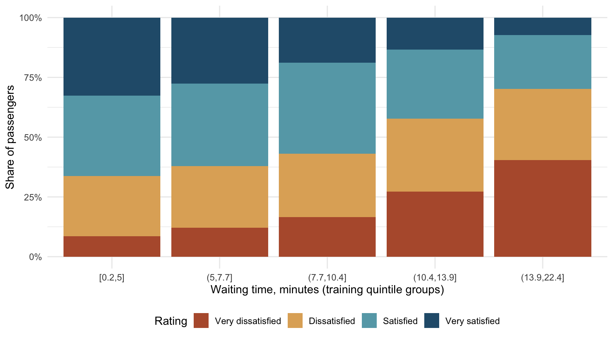
rail_palette = ["#B65B3A", "#E0AE66", "#66A7B5", "#275C7A"]
rail_train["wait_group"] = pd.qcut(rail_train.wait_minutes, 5)
rail_wait_py = pd.crosstab(rail_train.wait_group, rail_train.satisfaction, normalize="index").reindex(columns=rail_levels)
rail_ax = rail_wait_py.plot.bar(stacked=True, color=rail_palette, figsize=(9, 5), rot=0)
rail_ax.set(xlabel="Waiting time, minutes (training quintile groups)", ylabel="Share of passengers")
rail_ax.legend(title="Rating", loc="upper center", bbox_to_anchor=(.5, -.20), ncol=2)
plt.tight_layout()
plt.show()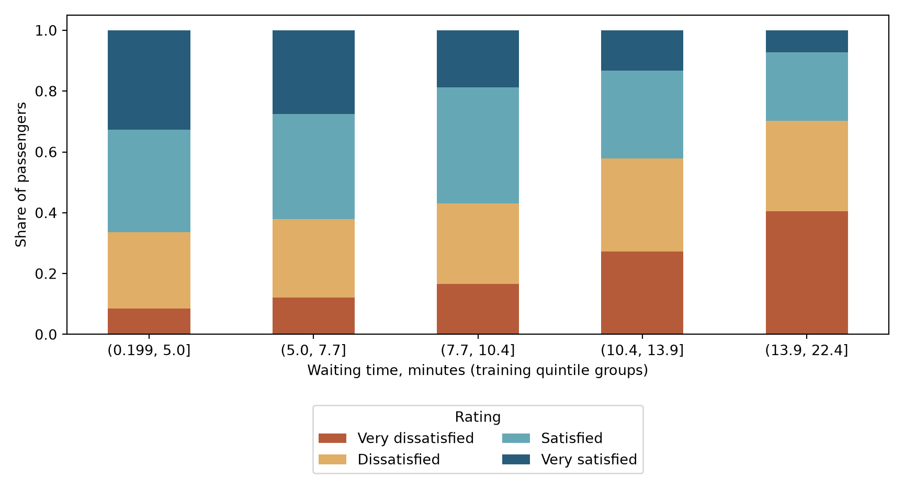
The Very satisfied share falls from about 33% in the shortest-wait group to about 7% in the longest-wait group, while Very dissatisfied rises from about 9% to 40%. This motivates including waiting time. These are unadjusted grouped proportions, so other journey characteristics can contribute to the pattern. Proportional odds concerns adjusted slopes on the cumulative-logit scale; neither this plot nor apparently smooth trends establish that restriction.
Question 15.30 — Crowding and Arrival Information
Plot training satisfaction proportions by crowding and by arrival-information availability. Identify one comparison for each variable. Can the information plot show whether information availability has the same adjusted odds ratio at every cutoff?
Answer 15.30
Click here to reveal the answer!
rail_group_table <- function(variable, title) {
x <- as.data.frame(prop.table(table(rail_train[[variable]], rail_train$satisfaction), 1))
names(x) <- c("Group", "Rating", "Share")
x$Variable <- title
x
}
rail_groups <- rbind(rail_group_table("crowding", "Crowding"),
rail_group_table("arrival_information", "Arrival information"))
rail_groups$Variable <- factor(rail_groups$Variable, levels = c("Crowding", "Arrival information"))
ggplot2::ggplot(rail_groups, ggplot2::aes(Group, Share, fill = Rating)) +
ggplot2::geom_col(position = ggplot2::position_stack(reverse = TRUE)) + ggplot2::facet_wrap(~Variable, scales = "free_x") +
ggplot2::scale_fill_manual(values = rail_palette) +
ggplot2::labs(x = NULL, y = "Share of passengers") + ggplot2::theme_minimal(base_size = 12) +
ggplot2::theme(legend.position = "bottom")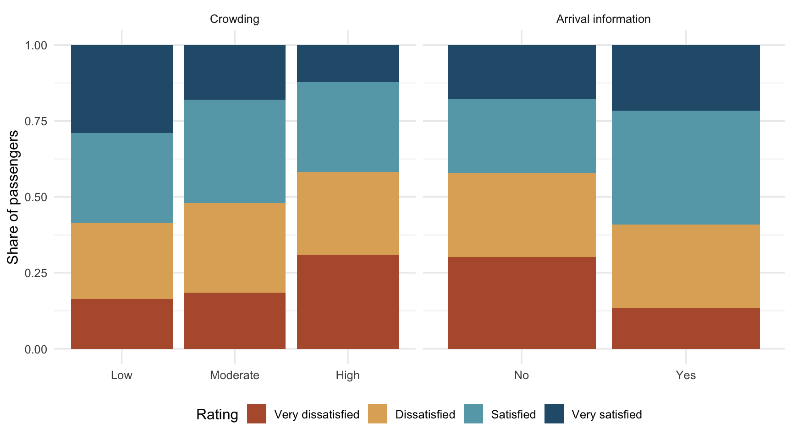
rail_fig, rail_axes = plt.subplots(1, 2, figsize=(10, 5), sharey=True)
for ax, variable, levels, title in zip(rail_axes, ["crowding", "arrival_information"],
[["Low", "Moderate", "High"], ["No", "Yes"]], ["Crowding", "Arrival information"]):
props = pd.crosstab(rail_train[variable], rail_train.satisfaction, normalize="index").reindex(index=levels, columns=rail_levels)
props.plot.bar(stacked=True, color=rail_palette, ax=ax, rot=0, legend=False)
ax.set(title=title, xlabel="", ylabel="Share of passengers")
rail_fig.legend(*rail_axes[0].get_legend_handles_labels(), loc="lower center", ncol=2)
rail_fig.tight_layout(rect=(0, .15, 1, 1))
plt.show()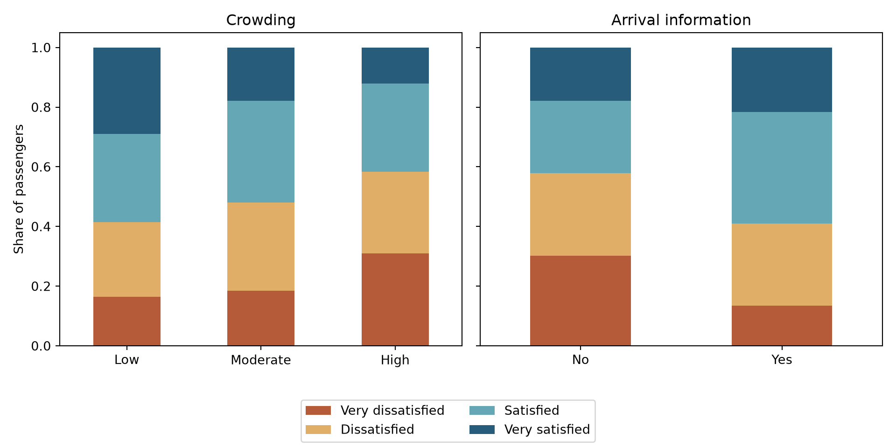
The Very satisfied share is about 29% under low crowding and 12% under high crowding. With information available, about 14% are Very dissatisfied, compared with 30% when it is unavailable. The corresponding top-rating shares differ much less: about 22% and 18%.
These patterns motivate adjusting for both variables and investigating whether information has a common cumulative odds ratio. They do not establish non-proportionality: unequal changes in raw category percentages can occur even under proportional odds, and the groups can differ in their other characteristics.
Question 15.31 — Journey Duration and an EDA Modelling Plan
Summarize journey duration by training rating using medians and quartiles. Combine this with Questions 15.29–15.30 to propose an initial modelling sequence. Should a weak marginal pattern automatically exclude duration?
Answer 15.31
Click here to reveal the answer!
| Rating | median | Q1 | Q3 |
|---|---|---|---|
| Very dissatisfied | 35.80 | 28.650 | 46.550 |
| Dissatisfied | 37.20 | 28.600 | 45.525 |
| Satisfied | 34.20 | 26.875 | 43.025 |
| Very satisfied | 33.45 | 26.300 | 44.325 |
rail_duration_py = rail_train.groupby("satisfaction", observed=False).journey_minutes.agg(
median="median", Q1=lambda x: x.quantile(.25), Q3=lambda x: x.quantile(.75)).reset_index()| satisfaction | median | Q1 | Q3 |
|---|---|---|---|
| Very dissatisfied | 35.80 | 28.650 | 46.550 |
| Dissatisfied | 37.20 | 28.600 | 45.525 |
| Satisfied | 34.20 | 26.875 | 43.025 |
| Very satisfied | 33.45 | 26.300 | 44.325 |
The duration distributions overlap substantially, giving a weaker marginal signal than waiting time. Retain duration in the planned adjusted comparison: a weak marginal pattern does not settle whether it contributes conditionally on other regressors.
Start with waiting time alone, then compare an extended proportional-odds model containing both continuous regressors, two crowding indicators, and information availability. Check proportionality before deciding whether to free any slopes. Later assess the selected model’s probability validity, remaining slope restrictions, functional form, and descriptive calibration. EDA informs this sequence but does not dictate which comparisons must be significant.
Data Modelling and Training Diagnostics
Question 15.32 — A Wait-Only Proportional-Odds Model
Write and fit the wait-only proportional-odds model on training data. Report its slope and three thresholds, check convergence, and state what the slope’s exponentiation means. How many parameters are estimated?
Answer 15.32
Click here to reveal the answer!
The model is
\[ \operatorname{logit}C_{i,j}=\alpha_j-\beta_w w_i,\qquad j=1,2,3, \]
with three ordered thresholds and one shared slope: four parameters. A five-minute increase in waiting multiplies the above-cutoff odds by \(e^{\beta_w}\) at each cutoff.
rail_simple <- MASS::polr(satisfaction ~ wait5, data = rail_train, method = "logistic",
Hess = TRUE, model = TRUE,
control = list(maxit = 1000, reltol = 1e-10))
stopifnot(rail_simple$convergence == 0)
rail_simple_table <- data.frame(Term = c(names(coef(rail_simple)), names(rail_simple$zeta)),
Estimate = c(coef(rail_simple), rail_simple$zeta))| Term | Estimate |
|---|---|
| wait5 | -0.679 |
| Very dissatisfied|Dissatisfied | -1.378 |
| Dissatisfied|Satisfied | 0.012 |
| Satisfied|Very satisfied | 1.574 |
rail_x = rail_design(rail_train)
rail_y = rail_train.satisfaction.cat.codes.to_numpy()
rail_simple = rail_fit_cumulative(rail_x[["wait5"]], rail_y)
rail_simple_table_py = pd.DataFrame({"Term": rail_simple.names, "Estimate": rail_simple.params})| Term | Estimate |
|---|---|
| alpha:1 | -1.378 |
| alpha:2 | 0.012 |
| alpha:3 | 1.574 |
| wait5 | -0.679 |
The estimated slope is -0.679, giving an above-cutoff odds ratio of 0.507. This is an unadjusted training-model association and is not yet the final inferential answer. The thresholds are intercepts for cumulative logits, not changes between measured satisfaction scores.
Question 15.33 — An Extended Model and a Nested Comparison
Add journey duration, crowding, and arrival information to the training model. Write its equation, state the nested null hypothesis, calculate the likelihood-ratio statistic and degrees of freedom, and interpret the comparison at the 5% level. Does a significant improvement establish proportional odds?
Answer 15.33
Click here to reveal the answer!
The extended model is
\[ \operatorname{logit}C_{i,j}=\alpha_j- (\beta_w w_i+\beta_d d_i+\beta_m m_i+\beta_h h_i+\beta_a a_i). \]
It has eight parameters: three thresholds and five shared slopes. The reduced model imposes \(H_0:\beta_d=\beta_m=\beta_h=\beta_a=0\). Against the alternative that at least one is nonzero,
\[ G^2=2(\ell_{\mathrm{full}}-\ell_{\mathrm{simple}}),\qquad df=8-4=4. \]
rail_formula <- satisfaction ~ wait5 + duration15 + crowding + arrival_information
rail_full <- MASS::polr(rail_formula, data = rail_train, method = "logistic",
Hess = TRUE, model = TRUE,
control = list(maxit = 1000, reltol = 1e-10))
stopifnot(rail_full$convergence == 0)
rail_extended_lr <- train_lr("Wait-only PO to full PO", rail_simple, rail_full)| comparison | statistic | df | p |
|---|---|---|---|
| Wait-only PO to full PO | 69.033 | 4 | <0.001 |
rail_full = rail_fit_cumulative(rail_x, rail_y, start=rail_simple)
rail_extended_lr_py = pd.DataFrame([rail_lr_test("Wait-only PO to full PO", rail_simple, rail_full)])| Comparison | LR | df | p_value |
|---|---|---|---|
| Wait-only PO to full PO | 69.033 | 4 | <0.001 |
The statistic is approximately 69.033, with \(p=\) 3.63e-14. The added regressors improve training fit jointly. That result supports the extension but does not establish the parallel-slope restriction or prove that every added coefficient contributes individually.
Question 15.34 — Checking Proportional Odds
Apply the Brant–Wald diagnostic to each slope in the extended training model. State its null hypothesis. Which regressor most clearly challenges the shared-slope restriction, and why should non-significant diagnostic results for other slopes be interpreted cautiously?
Answer 15.34
Click here to reveal the answer!
For each regressor \(k\), test \(H_0:\beta_{k,1}=\beta_{k,2}=\beta_{k,3}\) against at least one differing cutoff slope. Each displayed coefficient-level test has two degrees of freedom. The two crowding indicators are shown separately here; their remaining restrictions will also be checked jointly later.
invisible(capture.output(rail_brant <- brant::brant(rail_full)))
rail_brant_terms <- data.frame(Term = rownames(rail_brant)[-1], rail_brant[-1, ], row.names = NULL)| Term | X2 | df | probability |
|---|---|---|---|
| wait5 | 3.880 | 2 | 0.144 |
| duration15 | 1.736 | 2 | 0.420 |
| crowdingModerate | 4.548 | 2 | 0.103 |
| crowdingHigh | 3.539 | 2 | 0.170 |
| arrival_informationYes | 15.417 | 2 | <0.001 |
rail_brant_terms_py = rail_brant_table(rail_x, rail_y).query("term != 'Omnibus'").reset_index(drop=True)| term | Wald | df | p_value |
|---|---|---|---|
| wait5 | 3.880 | 2 | 0.144 |
| duration15 | 1.736 | 2 | 0.420 |
| crowdingModerate | 4.548 | 2 | 0.103 |
| crowdingHigh | 3.539 | 2 | 0.170 |
| arrival_informationYes | 15.417 | 2 | <0.001 |
Information availability supplies the clearest evidence against proportional odds: its p-value is about 0.00045. The other displayed p-values exceed 0.05, which supports considering shared slopes as working restrictions, not claiming they are proven equal. These exploratory diagnostics motivate a partial proportional-odds comparison on training data. The binary cumulative responses for a passenger are dependent, so the Python diagnostic function accounts for their cross-cutoff covariance rather than treating three independent fits as independent evidence.
Question 15.35 — A Partial Proportional-Odds Refinement
Fit a model that allows only the arrival-information slope to vary across cutoffs. Write the model, count its parameters, and compare it with the full proportional-odds model. State the null hypothesis, reference distribution, and modelling decision. Explain the sign convention in the R output.
Answer 15.35
Click here to reveal the answer!
The proposed model is
\[ \operatorname{logit}C_{i,j}=\alpha_j- (\beta_w w_i+\beta_d d_i+\beta_m m_i+\beta_h h_i+\beta_{a,j}a_i),\qquad j=1,2,3. \]
It has three thresholds, four shared slopes, and three information slopes: ten parameters. The null \(\beta_{a,1}=\beta_{a,2}=\beta_{a,3}\) imposes two restrictions, so the usual nested likelihood-ratio reference is \(\chi^2_2\).
rail_ppo_family <- function() VGAM::cumulative(link = "logitlink", reverse = FALSE,
parallel = TRUE ~ -1 + wait5 + duration15 + crowding)
rail_ppo <- VGAM::vglm(rail_formula, data = rail_train, family = rail_ppo_family(),
control = VGAM::vglm.control(maxit = 200, epsilon = 1e-10))
stopifnot(length(coef(rail_ppo)) == 10,
ncol(VGAM::constraints(rail_ppo)$wait5) == 1,
ncol(VGAM::constraints(rail_ppo)$arrival_informationYes) == 3)
rail_ppo_lr <- train_lr("Full PO to information PPO", rail_full, rail_ppo)| comparison | statistic | df | p |
|---|---|---|---|
| Full PO to information PPO | 15.74 | 2 | <0.001 |
rail_ppo = rail_fit_cumulative(rail_x, rail_y,
free=("arrival_informationYes",), start=rail_full)
assert len(rail_ppo.params) == 10
rail_ppo_lr_py = pd.DataFrame([rail_lr_test("Full PO to information PPO", rail_full, rail_ppo)])| Comparison | LR | df | p_value |
|---|---|---|---|
| Full PO to information PPO | 15.74 | 2 | <0.001 |
The LR statistic is 15.740 and \(p=\) 3.82e-04, supporting the partial model at the stated level. Carry this candidate forward to repeat diagnostics; greater flexibility alone is not an adequacy check.
With reverse = FALSE, native VGAM coefficients use \(\alpha_j+\gamma^\top x_i\) for the lower cumulative logit. Thus \(\beta=-\gamma\) for the chapter’s above-cutoff interpretation. The R summary function negates slope estimates, leaves their standard errors unchanged, and then exponentiates. parallel = TRUE ~ -1 + ... shares only the listed slopes; the thresholds and information slopes remain free. The Python implementation uses the chapter’s minus-sign convention directly.
Question 15.36 — Rechecking Numerical Stability and Probability Validity
For the selected partial model, check finite estimates, finite positive uncertainty estimates, numerical convergence, and valid fitted probabilities. Evaluate probabilities across both information states and all crowding categories on a grid covering waiting times 0–25 minutes and journey durations 10–70 minutes. Why does a significant LR test not make these checks unnecessary?
Answer 15.36
Click here to reveal the answer!
rail_grid <- expand.grid(wait5 = seq(-2, 3, length.out = 21),
duration15 = seq(-25/15, 35/15, length.out = 21),
crowding = c("Low", "Moderate", "High"),
arrival_information = c("No", "Yes"))
rail_grid$crowding <- factor(rail_grid$crowding, levels = levels(rail_train$crowding))
rail_grid$arrival_information <- factor(rail_grid$arrival_information, levels = c("No", "Yes"))
rail_p_train <- VGAM::predictvglm(rail_ppo, type = "response")
rail_p_grid <- VGAM::predictvglm(rail_ppo, newdata = rail_grid, type = "response")
train_probability_check(rail_p_train)
train_probability_check(rail_p_grid)
train_fit_check(rail_ppo)
rail_numerical <- data.frame(Parameters = length(coef(rail_ppo)), Iterations = rail_ppo@iter,
Minimum_grid_probability = min(rail_p_grid), Maximum_sum_error = max(abs(rowSums(rail_p_grid)-1)))| Parameters | Iterations | Minimum_grid_probability | Maximum_sum_error |
|---|---|---|---|
| 10 | 6 | 0.008 | 0 |
from itertools import product
rail_grid = pd.DataFrame(product(np.linspace(-2, 3, 21), np.linspace(-25/15, 35/15, 21),
["Low", "Moderate", "High"], ["No", "Yes"]),
columns=["wait5", "duration15", "crowding", "arrival_information"])
rail_p_train = rail_ppo.predict(rail_x)
rail_p_grid = rail_ppo.predict(rail_design(rail_grid))
rail_numerical_py = pd.DataFrame({"Parameters": [len(rail_ppo.params)], "Iterations": [rail_ppo.iterations],
"Maximum_absolute_score": [rail_ppo.score_max], "Minimum_grid_probability": [rail_p_grid.min()],
"Maximum_sum_error": [np.abs(rail_p_grid.sum(1)-1).max()]})| Parameters | Iterations | Maximum_absolute_score | Minimum_grid_probability | Maximum_sum_error |
|---|---|---|---|---|
| 10 | 16 | 0 | 0.008 | 0 |
The fit is numerically stable, and all checked probabilities lie between zero and one and sum to one. The R checking function checks finite estimates and covariance, positive variances, and termination before the iteration limit; also inspect fitting warnings before accepting a fit. The Python fitting function checks the likelihood score and positive-definite expected information. Optimization iteration counts differ across algorithms and need not agree between languages.
Here information is binary and the other slopes are shared. At each information state, ordered effective thresholds therefore preserve cumulative ordering as the continuous regressors change. For a more general non-proportional model, ordered intercepts alone would not suffice. Valid probabilities are necessary but do not establish calibration or substantive adequacy; neither a significant model comparison nor clipping invalid values can replace these checks.
Question 15.37 — Checking the Continuous Regressor Forms
As a focused functional-form check, add shared quadratic terms for wait5 and duration15 to the partial model. State the null and calculate the LR comparison. Decide whether to retain these terms. Does non-rejection prove that every possible nonlinear specification is unnecessary?
Answer 15.37
Click here to reveal the answer!
Test \(H_0:\beta_{w^2}=\beta_{d^2}=0\) against at least one nonzero quadratic coefficient. The alternative has twelve parameters, so the reference degrees of freedom are \(12-10=2\). Information remains non-proportional in both models.
rail_curve <- VGAM::vglm(update(rail_formula, . ~ . + I(wait5^2) + I(duration15^2)),
data = rail_train, etastart = VGAM::predictvglm(rail_ppo, type = "link"),
family = VGAM::cumulative(link = "logitlink", reverse = FALSE,
parallel = TRUE ~ -1 + wait5 + duration15 + crowding + I(wait5^2) + I(duration15^2)),
control = VGAM::vglm.control(maxit = 200, epsilon = 1e-10))
train_fit_check(rail_curve)
rail_curve_lr <- train_lr("PPO to PPO plus two quadratics", rail_ppo, rail_curve)| comparison | statistic | df | p |
|---|---|---|---|
| PPO to PPO plus two quadratics | 2.512 | 2 | 0.285 |
rail_curve = rail_fit_cumulative(rail_design(rail_train, quadratic=True), rail_y,
free=("arrival_informationYes",), start=rail_ppo)
rail_curve_lr_py = pd.DataFrame([rail_lr_test("PPO to PPO plus two quadratics", rail_ppo, rail_curve)])| Comparison | LR | df | p_value |
|---|---|---|---|
| PPO to PPO plus two quadratics | 2.512 | 2 | 0.285 |
The statistic is 2.512, with \(p=\) 0.285. Retain the simpler linear terms under this planned 5% comparison. This is a check of these two particular quadratic additions, not proof that every transformation or interaction is unnecessary. The decision is made on training data before final inference or prediction.
Question 15.38 — Rechecking the Remaining Proportionality Restrictions
Compare the partial model with a model in which all five slopes vary across cutoffs. State precisely which restrictions this comparison tests, count the additional parameters, and interpret the training result. Check convergence and probability validity for the larger model before using the LR approximation.
Answer 15.38
Click here to reveal the answer!
The null retains equal cutoff slopes for waiting time, duration, and the two crowding indicators; information is already free. Releasing each of the four remaining slopes adds two parameters, giving \(df=4\times2=8\). The fully non-proportional model has \(3+3\times5=18\) parameters.
rail_npo <- VGAM::vglm(rail_formula, data = rail_train,
family = VGAM::cumulative(link = "logitlink", reverse = FALSE, parallel = FALSE),
etastart = VGAM::predictvglm(rail_ppo, type = "link"),
control = VGAM::vglm.control(maxit = 200, epsilon = 1e-10))
train_fit_check(rail_npo)
train_probability_check(VGAM::predictvglm(rail_npo, newdata = rail_grid, type = "response"))
rail_remaining_lr <- train_lr("PPO to fully non-proportional", rail_ppo, rail_npo)| comparison | statistic | df | p |
|---|---|---|---|
| PPO to fully non-proportional | 12.555 | 8 | 0.128 |
rail_npo = rail_fit_cumulative(rail_x, rail_y, free=tuple(rail_x.columns), start=rail_ppo)
rail_probability_check(rail_npo.predict(rail_design(rail_grid)))array([[0.04510181, 0.12014441, 0.22256408, 0.6121897 ],
[0.01516706, 0.07464379, 0.24655753, 0.66363162],
[0.05019224, 0.15860549, 0.33179258, 0.4594097 ],
...,
[0.60909191, 0.27961695, 0.09490158, 0.01638956],
[0.92392206, 0.04040332, 0.02810497, 0.00756964],
[0.79838093, 0.13252845, 0.05964783, 0.00944278]], shape=(2646, 4))rail_remaining_lr_py = pd.DataFrame([rail_lr_test("PPO to fully non-proportional", rail_ppo, rail_npo)])| Comparison | LR | df | p_value |
|---|---|---|---|
| PPO to fully non-proportional | 12.555 | 8 | 0.128 |
Both fitted models are stable with valid checked probabilities. The LR statistic is 12.555 and \(p=\) 0.128. There is insufficient evidence to release the remaining restrictions at the stated level. This supports retaining the partial model for this workflow, while acknowledging diagnostic uncertainty. The earlier evidence against fully proportional odds is compatible with this result: that earlier restriction also required information to have one common slope.
Question 15.39 — Training Calibration and Freezing the Specification
Group training predictions into quintiles separately for each cumulative event and compare average predicted with observed cumulative proportions. Explain the limitation of this apparent calibration check. Combine the evidence from Questions 15.35–15.38 to state exactly which specification and evaluation choices will be frozen before opening the testing results.
Answer 15.39
Click here to reveal the answer!
rail_cal_train <- train_calibration(rail_p_train, as.integer(rail_train$satisfaction))
ggplot2::ggplot(rail_cal_train, ggplot2::aes(predicted, observed)) +
ggplot2::geom_abline(slope = 1, intercept = 0, linetype = 2, colour = "grey50") +
ggplot2::geom_point(size = 2, colour = "#275C7A") + ggplot2::geom_line(colour = "#275C7A") +
ggplot2::facet_wrap(~cutpoint, nrow = 1, labeller = ggplot2::label_both) +
ggplot2::coord_equal(xlim = c(0, 1), ylim = c(0, 1)) +
ggplot2::labs(x = "Mean predicted cumulative probability", y = "Observed cumulative proportion") +
ggplot2::theme_minimal(base_size = 11)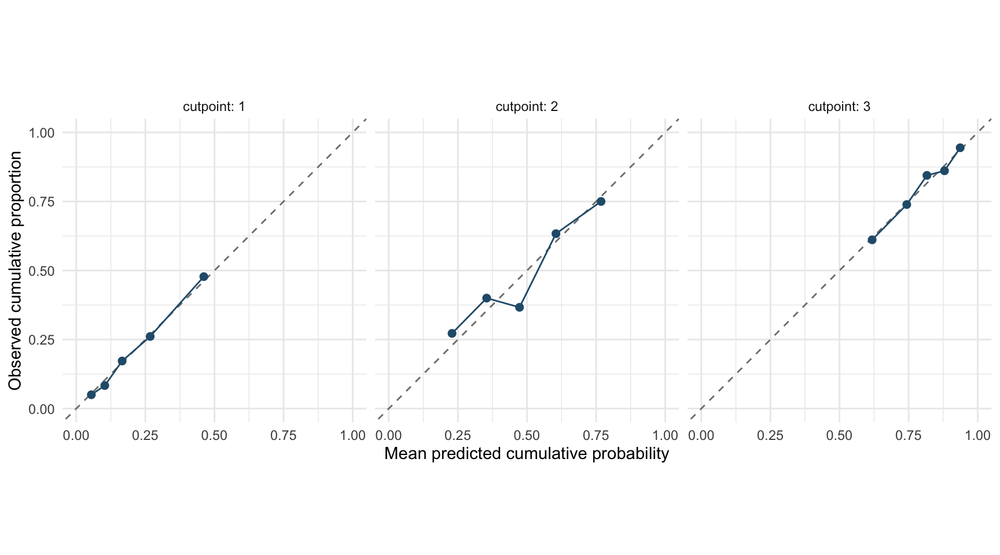
rail_cal_train_py = rail_calibration(rail_p_train, rail_y)
rail_fig, rail_axes = plt.subplots(1, 3, figsize=(10, 4), sharex=True, sharey=True)
for j, ax in enumerate(rail_axes, start=1):
cal = rail_cal_train_py.loc[rail_cal_train_py.cutpoint == j]
ax.plot([0, 1], [0, 1], "--", color="grey")
ax.plot(cal.predicted, cal.observed, "o-", color="#275C7A")
ax.set(title=f"P(Y <= {j})", xlim=(0, 1), ylim=(0, 1), xlabel="Mean predicted probability")
rail_axes[0].set_ylabel("Observed cumulative proportion")
rail_fig.tight_layout()
plt.show()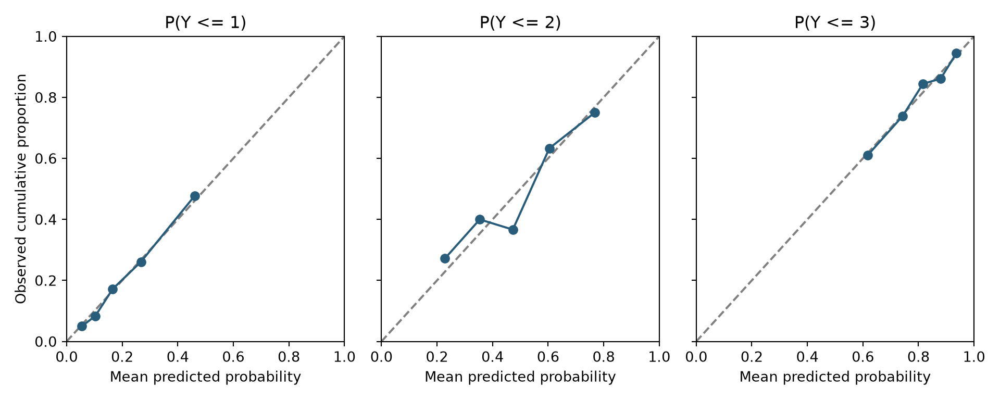
The grouped curves offer a descriptive check of fit. Departures remain possible even when points are near the reference line, and apparent calibration is optimistic because these observations were used for fitting. This is not a formal omnibus goodness-of-fit test or a substitute for held-out assessment.
The information refinement is supported; the planned quadratic and remaining-proportionality comparisons do not support further expansion. Together with numerical and probability checks, this is sufficient to carry the ten-parameter information partial proportional-odds specification forward in this teaching workflow. Retain wait5, duration15, both crowding indicators, and three information slopes, with the existing category order, references, and fixed scaling.
Freeze the maximum-probability category rule (first category for an exact tie), the training-proportion baseline, accuracy, macro recall/F1, rank MAE, log loss, normalized ranked probability score, and cumulative calibration summaries. No test-set result will trigger another selection round. A diagnostic that had rejected this candidate would have required further training-stage investigation before freezing it.
Results — Final Inference and Held-Out Prediction
The specification is now fixed. The inferential analysis refits it on rail_test to estimate adjusted associations. The predictive analysis retains rail_ppo, fitted on training data, and evaluates its predictions on rail_test. These are different fitted objects. Since both final analyses use the same testing observations, they are not independent replications, and neither authorizes revising the model and reusing this sample as untouched validation.
Question 15.40 — Final Coefficient Inference
Refit the frozen partial model on the testing sample for the inferential inquiry. Report all seven slope estimates, expected-information standard errors, Wald statistics, two-sided p-values, above-cutoff odds ratios, and approximate 95% confidence intervals. Keep the testing-fit object distinct from the training prediction model. What should happen if a coefficient is not significant here?
Answer 15.40
Click here to reveal the answer!
rail_inference <- VGAM::vglm(rail_formula, data = rail_test, family = rail_ppo_family(),
control = VGAM::vglm.control(maxit = 200, epsilon = 1e-10))
train_fit_check(rail_inference)
rail_effects <- train_or_table(rail_inference)| term | estimate | se | z | p | odds_ratio | OR_lower | OR_upper |
|---|---|---|---|---|---|---|---|
| wait5 | -0.647 | 0.066 | -9.795 | <0.001 | 0.523 | 0.460 | 0.596 |
| duration15 | -0.022 | 0.075 | -0.289 | 0.773 | 0.979 | 0.845 | 1.133 |
| crowdingModerate | -0.806 | 0.146 | -5.506 | <0.001 | 0.447 | 0.335 | 0.595 |
| crowdingHigh | -1.394 | 0.169 | -8.259 | <0.001 | 0.248 | 0.178 | 0.345 |
| arrival_informationYes:1 | 1.512 | 0.186 | 8.110 | <0.001 | 4.537 | 3.148 | 6.539 |
| arrival_informationYes:2 | 0.477 | 0.143 | 3.336 | <0.001 | 1.611 | 1.217 | 2.131 |
| arrival_informationYes:3 | -0.178 | 0.166 | -1.072 | 0.284 | 0.837 | 0.605 | 1.159 |
rail_x_test = rail_design(rail_test)
rail_y_test = rail_test.satisfaction.cat.codes.to_numpy()
rail_inference = rail_fit_cumulative(rail_x_test, rail_y_test,
free=("arrival_informationYes",), start=rail_ppo)
rail_effects_py = rail_or_table(rail_inference)| term | beta | SE | z | p_value | OR | lower95 | upper95 |
|---|---|---|---|---|---|---|---|
| wait5 | -0.647 | 0.066 | -9.795 | <0.001 | 0.523 | 0.460 | 0.596 |
| duration15 | -0.022 | 0.075 | -0.289 | 0.773 | 0.979 | 0.845 | 1.133 |
| crowdingModerate | -0.806 | 0.146 | -5.506 | <0.001 | 0.447 | 0.335 | 0.595 |
| crowdingHigh | -1.394 | 0.169 | -8.259 | <0.001 | 0.248 | 0.178 | 0.345 |
| arrival_informationYes:1 | 1.512 | 0.186 | 8.110 | <0.001 | 4.537 | 3.148 | 6.539 |
| arrival_informationYes:2 | 0.477 | 0.143 | 3.336 | <0.001 | 1.611 | 1.217 | 2.131 |
| arrival_informationYes:3 | -0.178 | 0.166 | -1.072 | 0.284 | 0.837 | 0.605 | 1.159 |
For each slope, the Wald interval on the coefficient scale is \(\hat\beta\pm1.96\,SE(\hat\beta)\); exponentiate its endpoints for the odds-ratio interval. Both implementations use expected Fisher information for comparable standard errors.
Duration is not statistically distinguishable from zero in this inferential sample (\(p\approx0.77\)). It remains in the frozen model. Removing it after inspecting these results would restart model selection and change the interpretation of the reported inference. The absence of significance is not proof of no association.
Question 15.41 — Answering the Inferential Inquiry
Use the final inferential estimates to answer Question 15.22 directly. Interpret waiting time, both crowding contrasts, and the three arrival-information contrasts with units, adjustment, and uncertainty. Explain why one common arrival-information odds ratio would obscure the substantive result.
Answer 15.41
Click here to reveal the answer!
Holding the other regressors fixed, five additional waiting minutes are associated with an above-cutoff odds ratio of approximately 0.523, with 95% CI [0.460, 0.596]: about 48% lower cumulative odds of a higher rating. This is not a 48% decrease in satisfaction probability.
Compared with low crowding, the adjusted odds ratios are approximately 0.447 [0.335, 0.595] for moderate crowding and 0.248 [0.178, 0.345] for high crowding. Both comparisons indicate lower satisfaction distributions, with uncertainty represented by their intervals.
The information comparisons have different meanings:
| Above-cutoff event | Information available versus unavailable: adjusted OR (95% CI) |
|---|---|
Avoiding Very dissatisfied (\(Y>1\)) |
4.54 [3.15, 6.54] |
Being Satisfied or Very satisfied (\(Y>2\)) |
1.61 [1.22, 2.13] |
Being Very satisfied (\(Y>3\)) |
0.84 [0.60, 1.16] |
The association is strongest for avoiding the worst rating, is also supported for being satisfied or better, and is inconclusive for reaching the top rating. Do not interpret the last interval as evidence that information has no association, nor infer differences between coefficients merely by comparing which individual p-values are significant; the training model comparison supplied the evidence for relaxing proportionality.
Journey duration’s adjusted odds ratio per fifteen minutes is about 0.979 [0.845, 1.133], which remains uncertain in this sample. These are conditional associations in simulated data, not estimated causal benefits from changing rail services.
Question 15.42 — Predicted Probabilities for Specified Journeys
Using the training-fitted partial model, predict all four category probabilities for a 35-minute journey with moderate crowding at waiting times of 5 and 15 minutes, both with and without arrival information. Describe what the comparisons add to an odds-ratio interpretation. Are these probabilities guaranteed outcomes or causal intervention estimates?
Answer 15.42
Click here to reveal the answer!
rail_profiles <- data.frame(wait5 = c(-1, -1, 1, 1), duration15 = 0,
crowding = factor(rep("Moderate", 4), levels = levels(rail_train$crowding)),
arrival_information = factor(c("No", "Yes", "No", "Yes"), levels = c("No", "Yes")))
rail_profile_p <- VGAM::predictvglm(rail_ppo, newdata = rail_profiles, type = "response")
train_probability_check(rail_profile_p)
rail_profile_table <- data.frame(Wait_minutes = 10 + 5*rail_profiles$wait5,
Information = rail_profiles$arrival_information, round(rail_profile_p, 4), check.names = FALSE)| Wait_minutes | Information | Very dissatisfied | Dissatisfied | Satisfied | Very satisfied |
|---|---|---|---|---|---|
| 5 | No | 0.159 | 0.252 | 0.315 | 0.275 |
| 5 | Yes | 0.060 | 0.195 | 0.429 | 0.316 |
| 15 | No | 0.436 | 0.304 | 0.175 | 0.085 |
| 15 | Yes | 0.208 | 0.376 | 0.314 | 0.101 |
rail_profiles = pd.DataFrame({"wait5": [-1., -1., 1., 1.], "duration15": [0.]*4,
"crowding": ["Moderate"]*4, "arrival_information": ["No", "Yes", "No", "Yes"]})
rail_profile_p = rail_ppo.predict(rail_design(rail_profiles))
rail_profile_table_py = pd.concat([
pd.DataFrame({"Wait_minutes": 10+5*rail_profiles.wait5, "Information": rail_profiles.arrival_information}),
pd.DataFrame(rail_profile_p, columns=rail_levels)], axis=1)| Wait_minutes | Information | Very.dissatisfied | Dissatisfied | Satisfied | Very.satisfied |
|---|---|---|---|---|---|
| 5 | No | 0.159 | 0.252 | 0.315 | 0.275 |
| 5 | Yes | 0.060 | 0.195 | 0.429 | 0.316 |
| 15 | No | 0.436 | 0.304 | 0.175 | 0.085 |
| 15 | Yes | 0.208 | 0.376 | 0.314 | 0.101 |
At a five-minute wait without information, the predicted probability of Very dissatisfied is 15.9%; with information it is 6.0%. At a fifteen-minute wait, the corresponding predictions are 43.6% and 20.8%. The probability difference depends on the regressor profile, even for a fixed cutoff odds ratio.
These are fitted probability distributions with the other listed variables held fixed. They show uncertainty in individual outcomes through the distribution over categories; they do not include confidence intervals for the estimated probabilities. They are not guarantees or causal estimates of installing an information display.
Question 15.43 — Held-Out Performance Against a Baseline
Predict testing observations using the frozen training fit, without refitting. Compare with the training-proportion baseline using accuracy, macro recall, macro F1, mean absolute category-rank error, log loss, and normalized ranked probability score. Define the probability scores and distinguish rank distances from measured satisfaction distances. Explicitly answer Question 15.23.
Answer 15.43
Click here to reveal the answer!
Let \(n_T\) be the number of testing observations and \(\hat C_{i,j}=\sum_{k\le j}\hat p_{i,k}\). The probability scores are
\[ \operatorname{LogLoss}=-\frac{1}{n_T}\sum_i\log\hat p_{i,Y_i},\qquad \operatorname{RPS}=\frac{1}{3n_T}\sum_i\sum_{j=1}^{3} \{\hat C_{i,j}-\mathbb{1}(Y_i\le j)\}^2. \]
Smaller is better for both. The \(1/3\) normalization is used in both languages. Rank MAE counts how many ordered category boundaries a classification misses by; it assigns equal penalties per boundary for evaluation, without claiming equal psychological gaps between ratings. Macro recall and F1 weight all four categories equally; a never-predicted category receives F1 zero rather than being omitted.
rail_p_test <- VGAM::predictvglm(rail_ppo, newdata = rail_test, type = "response")
train_probability_check(rail_p_test)
rail_baseline <- as.numeric(prop.table(table(rail_train$satisfaction)))
rail_p_baseline <- matrix(rail_baseline, nrow = nrow(rail_test), ncol = 4, byrow = TRUE)
rail_test_y <- as.integer(rail_test$satisfaction)
rail_metrics <- rbind(train_metrics("Training-proportion baseline", rail_p_baseline, rail_test_y),
train_metrics("Training-fitted partial PO", rail_p_test, rail_test_y))| Model | Accuracy | MacroRecall | MacroF1 | RankMAE | LogLoss | RPS |
|---|---|---|---|---|---|---|
| Training-proportion baseline | 0.277 | 0.250 | 0.108 | 0.940 | 1.386 | 0.200 |
| Training-fitted partial PO | 0.417 | 0.413 | 0.405 | 0.774 | 1.269 | 0.174 |
rail_p_test = rail_ppo.predict(rail_x_test)
rail_baseline = np.bincount(rail_y, minlength=4) / len(rail_y)
rail_p_baseline = np.tile(rail_baseline, (len(rail_test), 1))
rail_metrics_py = pd.DataFrame([
rail_metrics("Training-proportion baseline", rail_p_baseline, rail_y_test),
rail_metrics("Training-fitted partial PO", rail_p_test, rail_y_test)])| Model | Accuracy | MacroRecall | MacroF1 | RankMAE | LogLoss | RPS |
|---|---|---|---|---|---|---|
| Training-proportion baseline | 0.277 | 0.250 | 0.108 | 0.940 | 1.386 | 0.200 |
| Training-fitted partial PO | 0.417 | 0.413 | 0.405 | 0.774 | 1.269 | 0.174 |
The model classifies 41.67% correctly, compared with 27.67% for the baseline, an improvement of 14.0 percentage points. Log loss improves from 1.386 to 1.269, and normalized RPS from 0.200 to 0.174.
These held-out comparisons show useful predictive information beyond the training category frequencies, but an exact-rating accuracy near 42% leaves substantial uncertainty. The observed performance differences are point estimates from one split, not population guarantees or independent replications across metrics. Inspect which categories are missed and the probability calibration before recommending a use.
Question 15.44 — Where the Classifier Makes Mistakes
Display the testing confusion matrix with observed ratings in rows and predicted ratings in columns. Report recall for each category. Identify the weakest category, and explain why a moderate overall accuracy can coexist with poor performance for that category.
Answer 15.44
Click here to reveal the answer!
rail_predicted <- max.col(rail_p_test, ties.method = "first")
rail_cm <- table(Observed = factor(rail_test_y, levels = 1:4, labels = rail_levels),
Predicted = factor(rail_predicted, levels = 1:4, labels = rail_levels))
rail_recall <- data.frame(Rating = rail_levels, Observed_n = rowSums(rail_cm),
Predicted_n = colSums(rail_cm), Recall = diag(rail_cm)/rowSums(rail_cm))
rail_cm_plot <- as.data.frame(rail_cm)
ggplot2::ggplot(rail_cm_plot, ggplot2::aes(Predicted, Observed, fill = Freq)) +
ggplot2::geom_tile() + ggplot2::geom_text(ggplot2::aes(label = Freq), colour = "black") +
ggplot2::scale_fill_gradient(low = "white", high = "#66A7B5") +
ggplot2::scale_y_discrete(limits = rev(rail_levels)) +
ggplot2::theme_minimal(base_size = 11) +
ggplot2::theme(axis.text.x = ggplot2::element_text(angle = 20, hjust = 1))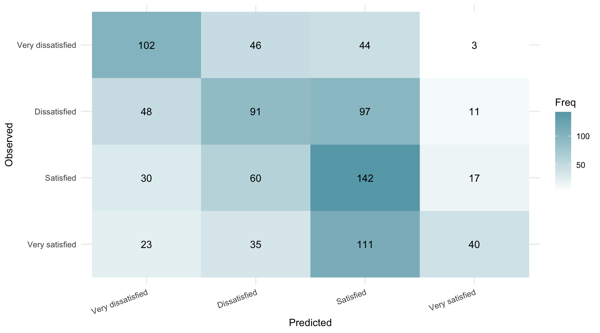
| Rating | Observed_n | Predicted_n | Recall |
|---|---|---|---|
| Very dissatisfied | 195 | 203 | 0.523 |
| Dissatisfied | 247 | 232 | 0.368 |
| Satisfied | 249 | 394 | 0.570 |
| Very satisfied | 209 | 71 | 0.191 |
rail_predicted = rail_p_test.argmax(axis=1)
rail_cm = np.zeros((4, 4), dtype=int)
np.add.at(rail_cm, (rail_y_test, rail_predicted), 1)
rail_recall_py = pd.DataFrame({"Rating": rail_levels, "Observed_n": rail_cm.sum(1),
"Predicted_n": rail_cm.sum(0), "Recall": rail_cm.diagonal()/rail_cm.sum(1)})
rail_fig, rail_ax = plt.subplots(figsize=(8, 5))
rail_ax.imshow(rail_cm, cmap="Blues")
for i in range(4):
for j in range(4):
rail_ax.text(j, i, str(rail_cm[i,j]), ha="center", va="center",
color="white" if rail_cm[i,j] > rail_cm.max()*.6 else "black")
rail_ax.set_xticks(range(4), rail_levels, rotation=20, ha="right")
rail_ax.set_yticks(range(4), rail_levels)
rail_ax.set(xlabel="Predicted rating", ylabel="Observed rating")
rail_fig.tight_layout()
plt.show()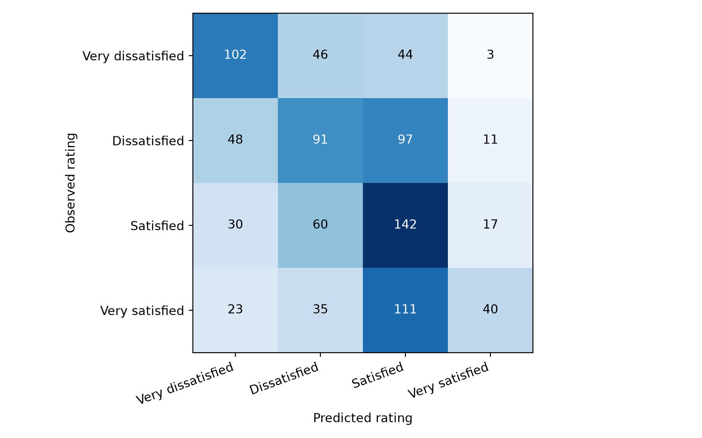
| Rating | Observed_n | Predicted_n | Recall |
|---|---|---|---|
| Very dissatisfied | 195 | 203 | 0.523 |
| Dissatisfied | 247 | 232 | 0.368 |
| Satisfied | 249 | 394 | 0.570 |
| Very satisfied | 209 | 71 | 0.191 |
Recall is about 52.3%, 36.8%, 57.0%, and 19.1% in increasing category order. The top rating is the weakest: only 40 of 209 truly Very satisfied passengers are classified correctly, and the model assigns that label only 71 times. It often predicts Satisfied instead.
Maximum-probability classification compresses an entire probability distribution into one label. The model can improve aggregate probability scores and overall accuracy while failing to recover many members of a particular category. Report this limitation explicitly rather than describing every category as well predicted. The operational costs of missing an unhappy passenger and missing an exceptionally happy passenger also need not be equal.
Question 15.45 — Held-Out Probability Calibration
Repeat the cumulative calibration summaries on testing observations using probabilities from the training fit. Plot observed versus predicted proportions in five groups per cutoff, with approximate binomial uncertainty bars. Identify a numerical discrepancy and explain why these results must not be used to recalibrate the model and then claim untouched performance on the same testing set.
Answer 15.45
Click here to reveal the answer!
rail_cal_test <- train_calibration(rail_p_test, rail_test_y)
ggplot2::ggplot(rail_cal_test, ggplot2::aes(predicted, observed)) +
ggplot2::geom_abline(slope = 1, intercept = 0, linetype = 2, colour = "grey50") +
ggplot2::geom_errorbar(ggplot2::aes(ymin = pmax(0, observed - 1.96*standard_error),
ymax = pmin(1, observed + 1.96*standard_error)), width = .015) +
ggplot2::geom_point(size = 2, colour = "#275C7A") +
ggplot2::facet_wrap(~cutpoint, nrow = 1, labeller = ggplot2::label_both) +
ggplot2::coord_equal(xlim = c(0, 1), ylim = c(0, 1)) +
ggplot2::labs(x = "Mean predicted cumulative probability", y = "Observed cumulative proportion") +
ggplot2::theme_minimal(base_size = 11)
rail_calibration_example <- rail_cal_test[rail_cal_test$cutpoint == 3 & rail_cal_test$bin == 2, ]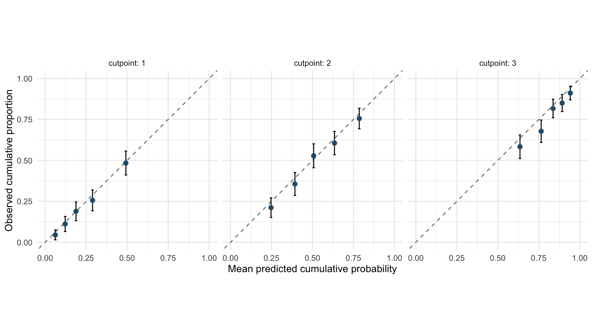
rail_cal_test_py = rail_calibration(rail_p_test, rail_y_test)
rail_fig, rail_axes = plt.subplots(1, 3, figsize=(10, 4), sharex=True, sharey=True)
for j, ax in enumerate(rail_axes, start=1):
cal = rail_cal_test_py.loc[rail_cal_test_py.cutpoint == j]
ax.plot([0, 1], [0, 1], "--", color="grey")
lower = np.minimum(cal.observed, 1.96*cal.standard_error)
upper = np.minimum(1-cal.observed, 1.96*cal.standard_error)
ax.errorbar(cal.predicted, cal.observed, yerr=np.vstack([lower, upper]), fmt="o", color="#275C7A", capsize=3)
ax.set(title=f"P(Y <= {j})", xlim=(0, 1), ylim=(0, 1), xlabel="Mean predicted probability")
rail_axes[0].set_ylabel("Observed cumulative proportion")
rail_fig.tight_layout()
plt.show()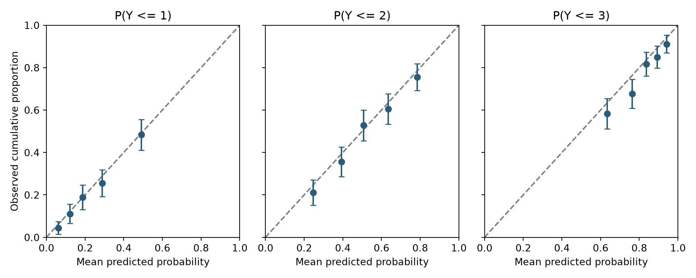
Perfect calibration would place population averages on the diagonal. The finite-sample points and approximate bars provide a descriptive assessment, not simultaneous confidence bands or a full uncertainty analysis for the fitted model.
For the second prediction group at cutoff 3, the mean predicted \(P(Y\le3)\) is 0.764, whereas the observed fraction is 0.678. Equivalently, Very satisfied is predicted with average probability about 23.6%, compared with an observed 32.2%. Several cutoff-3 groups similarly understate the top-category frequency.
The model improves the aggregate scores but does not achieve perfect probability calibration. This discrepancy is a limitation to report. Any subsequent recalibration or model change motivated by these testing outcomes would require a new evaluation sample or a separately designed validation procedure.
Question 15.46 — Putting Inference and Prediction Together
Answer both original inquiries in one concise synthesis. Include an adjusted association with uncertainty, the varying information association, a held-out baseline comparison, and a limitation. Explain why statistical evidence for associations does not guarantee accurate individual classification.
Answer 15.46
Click here to reveal the answer!
The inferential refit associates longer waits and greater crowding with lower satisfaction after adjustment. For example, the odds ratio per five additional waiting minutes is about 0.523, with 95% CI [0.460, 0.596]. Information availability is most strongly associated with avoiding the lowest rating (OR about 4.54), is also associated with being satisfied or better (OR about 1.61), and has an inconclusive association with reaching the highest rating (OR about 0.84; its interval includes one).
For prediction, the frozen training model improves held-out accuracy from 27.7% to 41.7%, log loss from 1.386 to 1.269, and normalized RPS from 0.200 to 0.174. Nevertheless, top-category recall is only 19.1%, and calibration comparisons reveal underprediction of that category in several groups.
Associations describe how conditional distributions vary across profiles. They do not eliminate overlap between those distributions or the variability in individual responses. A defensible conclusion is that the measured journey characteristics contain useful information, while the model remains limited for assigning individual ratings. The synthetic, observational-style design also prevents a causal claim about real service interventions.
Storytelling
Question 15.47 — Briefing the Passenger-Experience Team
Write a six- to eight-sentence briefing for the rail operator’s passenger-experience team. Lead with the practical message, explicitly answer the inferential and predictive inquiries, include selected numerical findings and uncertainty, and explain a proportionate potential use. Address the top-category limitation and the scope of the synthetic observational evidence. Avoid listing every coefficient or presenting an odds ratio as a probability ratio.
Answer 15.47
Click here to reveal the answer!
One possible seven-sentence briefing is:
Longer waits and more crowded trains were associated with lower passenger satisfaction after adjustment for the other recorded journey characteristics. Each additional five minutes of waiting corresponded to approximately 48% lower odds of being above any satisfaction cutoff, with an adjusted odds ratio of 0.52 (95% CI 0.46–0.60). Live arrival-information availability had its strongest association with avoiding a very dissatisfied rating, with an odds ratio of 4.54 (95% CI 3.15–6.54); it also supported being satisfied or better, but its association with reaching very satisfied was inconclusive. For new journeys in the held-out sample, the model predicted the exact rating correctly 41.7% of the time, versus 27.7% for the simple baseline, and improved log loss from 1.386 to 1.269. However, it correctly identified only 19.1% of very satisfied passengers, and several calibration groups underpredicted that rating. The results could guide hypotheses for further passenger research and service evaluation, while individual decisions would require additional evidence and validation. Because these are simulated observational-style data, they do not establish actual benefits from shortening waits, changing crowding, or installing information displays.
The briefing selects evidence that answers the practical questions. It preserves the difference between adjusted association, held-out predictive improvement, imperfect classification, and causal claims. A proposed service change would require evidence beyond this teaching simulation.